Блог
Мақолалар
Ҳаёт, оила, касб, вақт қадри ва шахсий ривожланиш ҳақида фикрлар. Жами 597 та мақола.
Qarz — bu faqat pul emas, u ruhiy yuk
Qarz olgan kuningiz siz öz kelajagingizni sotayotgan bölasiz. Hozirgi "oson va tez" kreditlar jozibasi insonni asliga qaytişdan tösadi. Siz yangi buyum emas, balki öz…
Qamoqxona jinoyatdan keyin, tarbiya esa undan oldin boshlanadi
Tarbiya — hatodan tösuvchi mustahkam devor Qamoqxona — jinoyat sodir etilgach işga tuşadigan tizim. Tarbiya esa inson hali xatoga qadam qöymasidan oldin uning qalbida…

Moddiy töqlik hali insonni baxtli qilishga yetarlik emas
Kun böyi mehnat qilib, çöntakni töldirish mumkin. Lekin keçasi uyga qaytganda içingizda çuqur bir böşliq qolayotgan bölsa, demak, gap faqat pulda emas. Insonga faqat qorin töqligi…

Қарор қилдингизми?
Бошланг. Қарор билан амал орасида энг хавфли масофа бор. Ғоялар айнан шу масофада ўлади. Мен ўзим узоқ хаёл суриб ўтирмайман. Фикр келдими, қарор қилдимми, шу заҳоти амалга…

ЯХШИ ХУЛҚНИНГ ҲАҚИҚИЙ СИНОВИ
«Инсоннинг қандайлигини билишни истасангиз, унинг яқинлари билан муносабатига қаранг». Бу оддий кузатув эмас. Аслида, у инсон ахлоқи ва тарбиясининг энг муҳим мезонларидан бирини…

Шундай инсонлар борки, уларнинг ўрнини ҳеч ким боса олмайди.
Чунки гап шунчаки инсоннинг ўзида эмас. У билан боғлиқ хотиралар, суҳбатлар, одатлар, бирга ўтказилган кунлар бор. У ҳаётингизнинг бир қисмига айланиб қолган бўлади. Бундай…

«Ҳали вақт бор…»
Биз кўпинча имкониятларни бой берганимиз учун эмас, улардан фойдаланишни кечиктирганимиз учун орқада қоламиз. «Ҳали вақт бор». «Эртадан бошлайман». «Бироз тайёргарлик кўрай»…

Инсон имкониятлари аслида чексиз…
Уни нима тўсади? Кўпинча - реал муаммолар эмас, ўзимиз ўйлаб топган хаёллардан қўрқамиз. «Бўлмайди». «Қандай бўлар экан?». «У мени тушунмайди». «Улар менга қарши». «Барибир…
Одамнинг ҳақиқий дўсти яхши кунида эмас, қийин кунида билинади.
Хурсандчиликда ҳамма ёнингизда бўлиши мумкин. Бирга куласиз, гаплашасиз, вақт ўтказасиз. Лекин ишингиз тушиб қолса, кимга қўнғироқ қиласиз? Ана шу инсон — сиз учун ҳақиқий дўст…
Ғалаба жанг бошланишидан олдин бошланади.
«Ғолиб саркарда жангга киришдан олдин бўлиши мумкин бўлган ҳар бир ҳолатни ҳисобга олади. Мағлуб эса фақат бир-икки ҳолатни ўйлайди. Кўп ҳолатни ҳисобга олиш — ғалабага, камини…
Ҳаммасини ҳозир хоҳлайдиганлар бесабрлар замонида яшаяпмиз.
Тез бойиш. Тез натижа. Тез танилиш. Тез ўсиш. Тез мансаб. Кўпчилик натижани кутишни истамайди. Шунинг учун ҳали тайёр бўлмаган нарсани тезлаштиришга уринади. Лекин ҳаётда ҳамма…
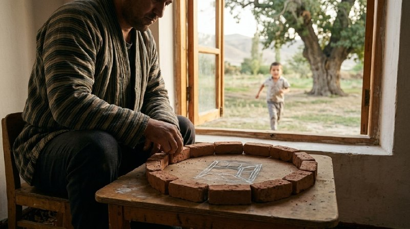
Кўпинча фарзандларимизга мол-мулкдан кўра, ўз қўрқувларимизни мерос қилиб қолдирамиз.
"Бу бизга эмас", "иш бошлашга таниш керак", "тинчгина ойлигингни олиб юравер" яхшиси тинч юр деган гаплар оддий насиҳат эмас. Бу — боланинг онгида ғиштма-ғишт қурилаётган кўринмас…
Бир челак сув билан тиканни ҳам, райҳонни ҳам суғориш мумкин.
Сув ташиш меҳнати бир хил, кетадиган вақт ҳам айнан ўхшаш. Фарқи фақат олинадиган ҳосилда. Инсонларга муносабатимиз ҳам худди шундай. Бировни танқид қилиш, камчилигини юзига солиш…

Биз доим янги билим олишга интиламиз. Лекин энг қийини — онгимиздаги эскиларидан воз кечишдир.
Янги ва мустаҳкам иморат қуриш учун аввал эски пахса деворларни бузиб ташлаш керак. Эски пойдевор устига замонавий бино қуриб бўлмайди. Онгимиз ҳам худди шу майдонга ўхшайди. Кеча…
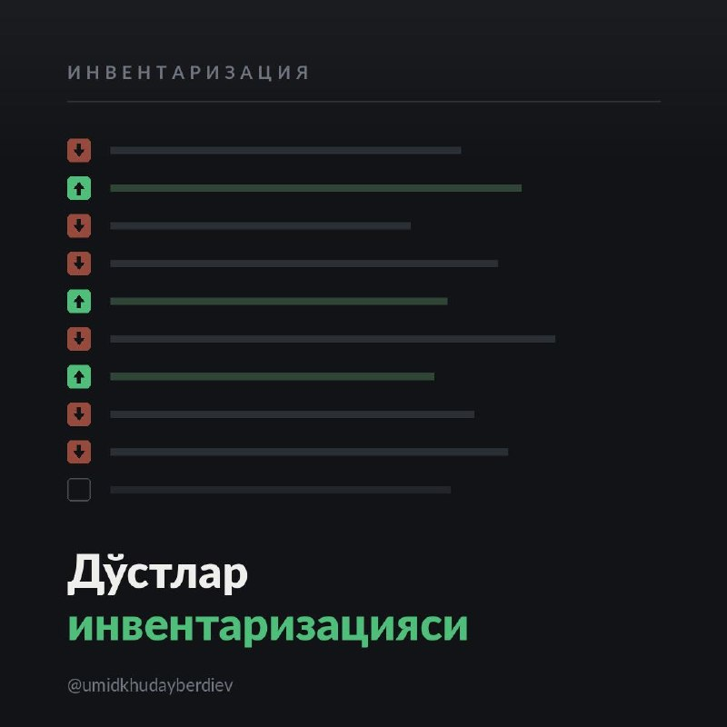
Дўстлар инвентаризацияси
Ҳар йили корхоналарда инвентаризация ўтказилади. Омборга кирилади. Нима бор, нима йўқ - яроқсизи чиқариб ташланади. Кейин бир кун ўзимга савол бердим: Активларимни ҳар йили…
Яхши от кейин чопади!
Муваффақият сири - шошилмасликда. Бугун кўпчилик ҳамма нарсани тез хоҳлайди: тез пул, тез натижа, енгил йўл. Шошқалоқлик эса нотўғри қарорларга, чарчашга ва йўлдан адашишга олиб…
Баъзи одамлар ҳақиқатни фақат китобдан излайди.
Яна бошқалар эса уни узун гаплардан, баландпарвоз сўзлардан қидиради. Лекин чин ўзгариш — одамнинг ичида бошланади. Қалб уйғонмаса, мингта насиҳат ҳам фойда бермайди. Қалб уйғонса…
«Сизлардан ким ҳаётида камида бир марта кўмирнинг кулини ёқишга уриниб кўрган? Албатта…
«Сизлардан ким ҳаётида камида бир марта кўмирнинг кулини ёқишга уриниб кўрган? Албатта, ҳеч ким кулни қайта ёқа олмайди. У аллақачон ёниб бўлган. Худди шу каби ўтмиш ҳам…» Кўп…

Инсонни биламан, деб ўйламанг…
Унинг табассуми билан эмас. Унинг чиройли гаплари билан эмас. Унинг яхши кайфияти билан ҳам эмас. Инсоннинг асли — ғазаб пайтида кўринади. Қачонки у асабийлашса, қачонки ишлари…
Юқоридаги постларни ўқиб қийналдингизми? Демак, жойига тегди.
Ростини айтинг: 30 сониялик кулгили видеони 10 та кетма-кет кўрасиз — чарчамайсиз. Лекин 1 та шундай матнни охиригача ўқишга сабр йўқ. Нега? Чунки у ерда сиздан ҳеч нарса талаб…
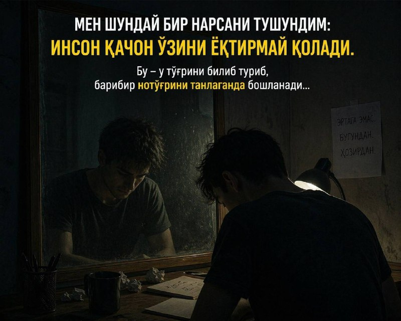
Энг оғир ҳис — бу бошқалар сизни ёқтирмаслиги эмас.
Энг оғири — ўзингиз ўзингизга қараб: «Мен бундай бўлишни истамагандим…» деб қолиш. Сиз буни биласиз. Кечқурун ётиб, ичда озгина оғриқ бўлган ҳолатни. Ҳеч ким кўрмаган, лекин сиз…
Инсоннинг ҳақиқий тарбияси ва ахлоқи қаерда намоён бўлади?
Кўпчилик тарбияни хатога йўл қўймаслик, эҳтиёт бўлиб юриш деб тушунади. Столга чой тўкмаслик. Хато қилмаслик. Ҳамма нарсани идеал қилиш. Аммо ҳақиқий тарбия — бу бошқача. У сиз…
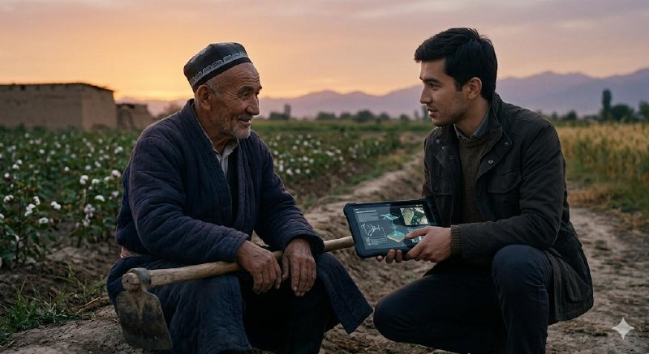
Ҳамманинг ўз «созламалари» бор: нима учун биз дунёдан мўъжиза кутиб, хато қиламиз?
Биласизми, кўпчиликнинг энг катта муаммоси нимада? Адекватликнинг йўқлигида. Биз деҳқондан космос ҳақида фалсафий мулоҳаза кутамиз ёки қўли билан меҳнат қиладиган одамдан олимнинг…
Pul topasiz, lekin qo‘lda turmayaptimi?
Ko‘pchilik aynan shu muammo bilan yashaydi: — qarzdan chiqolmaydi — daromad bo‘lsa ham natija ko‘rmaydi — pulni qanday boshqarishni bilmaydi — investitsiyani qayerdan boshlashni…

Мен кўп йиллардан бери молия соҳасида фаолият юритаман:
инвестициялар, корпоратив молия, тўғридан-тўғри инвестиция жалб қилиш, фондлар бошқаруви, риск-менежмент, суғурта… Лекин сўнгги вақтларда менга энг кўп ёзилаётган саволлар…
Кўпчилик инсон пулни муаммо деб ўйлайди.
Аслида эса муаммо — пул эмас. Муаммо — инсоннинг пулга бўлган муносабати. Бир хил шароитда яшайдиган икки инсонни олайлик: Бири ой охиригача пулсиз қолади. Бошқаси эса кам даромад…

Кўзимиз кўраётган дунё - бутун олам эмас.
Инсон кўзи электромагнит тўлқинларининг жуда кичик қисмигина — 400 дан 700 нанометргача бўлган диапазонни кўра олади. Шу кичик бўлакни биз “кўринадиган ёруғлик” деб атаймиз. Лекин…
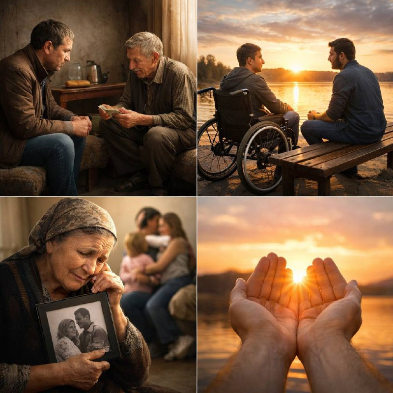
Ҳаётдан норози бўлиб қолсангиз, бир нарсани қилиб кўринг.
Ўзингизда бор, аммо бошқада йўқ неъматни кўринг. Агар сизга пул етишмаётгандек туюлса - даромади сиздан анча кам бўлган инсон билан суҳбатлашинг. Унинг қандай яшашини кўринг…
Аксарият инсонлар тушиб бораётган баргларга ўхшайди.
Шамол қаёққа эсса - ўша томонга учади. Бир айланади, бир чарх уради, эркин ҳаракатда… Аммо охири барибир ерга тушади. Хазон бўлади… Яна бир тоифа бор. Жуда кам. Улар юлдузларга…
Оддий ҳақиқатлар
Ҳаётни ўзгартириш учун доимо катта ғоялар, мураккаб назариялар ёки қиммат дарслар керак эмас. Ҳаммаси оддий… Кўпинча инсонни тўғри йўлга бошлайдиган нарсалар - бу йиллар давомида…
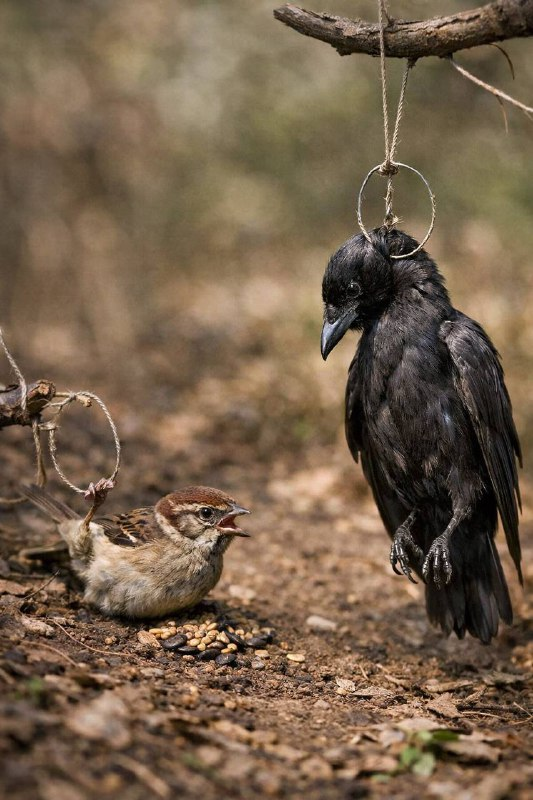
«Содда қуш оёғидан,
Шум қуш бошидан илинади.» Ҳаётда икки хил хатолик (тузоқ) бор. Бири - ҳаддан ташқари ишониш. Бошқаси - ҳаддан ташқари айёрлик. Содда одам тузоқни кўрмайди - оёғидан илинади. Айёр…
Ҳақиқатни айтганда: сиз чарчаганингиз учун эмас, тўхтаб қолганингиз учун эзиласиз.
Ҳаракатсизликдан ҳам инсон чарчайди, руҳий толиқади. «Банд бўлинг. Бу ер юзидаги ҳар қандай дарднинг энг арзон доридир ва энг таъсирлиси». Инсон фаолият учун яратилган. Қувват…
Биз ҳаётга тайёргарлик кўриш учун эмас, яшаш учун туғиламиз.
Кўпчилик “кейин” деб яшайди. Кейин бошлайман. Кейин намоён бўламан. Кейин саёҳат қиламан. Кейин яхшироқ инсон бўламан. Лекин “кейин” деган кун ҳеч қачон тақвимда кирмайди. Ҳаёт бу…
Рамазон тақвимдаги навбатдаги ой эмас. Бу қалбни қайта созлаш фурсати.
Кўпчилик Рамазонни очлик ва чанқоқлик деб тушунади. Лекин очлик бу фақат ташқи нишонаси холос. Биз учун Рамазон: Нафс сусайган, Қалб нури кучайган, Кўз гуноҳдан тийилган, Тил…
Оиладаги тўнғич фарзандлар ҳақида бир қизиқ қонуният бор: дунё етакчилари, сиёсатчилар ва…
Оиладаги тўнғич фарзандлар ҳақида бир қизиқ қонуният бор: дунё етакчилари, сиёсатчилар ва илмий элита орасида уларнинг улуши сезиларли даражада юқори. Масалан, АҚШ…
Осон ҳаёт сўраш - энг осон дуо.
Лекин у инсонни ўзгартирмайди. Кўпчилик Аллоҳдан қийинчиликлар кетишини сўрайди. Аммо ҳаёт шу қийинчиликлар орқали инсонни тарбия қилади. Нозик ҳақиқат Синов - жазо эмас. Синов…
Инсон майда нарсаларда нега жаҳл қилади, биласизми?
Нега кўчада кимнидир йўлини кесиб ўтишни, навбатда бошқалардан тезроқ ўтишни, майда устунликни “ғалаба” деб ҳис қилади? Чунки ҳаётида катта ғалабалар йўқ, ғалаба хисси эса эҳтиёж…
Ҳеч қачон Ернинг думалоқ эканини билган одамлар жамоаси “Ер текис” деб ҳисоблаётган инсонга озор бермайди.
Аммо Ер текис деб ишонадиган инсонлар тўдаси “Ер думалоқ” деган одамни гулханда ёқиб юбориши муқаррар. Энг хавфли инсонлар билмагани учун эмас, билдим деб ўйлагани учун шафқатсиз…
Ҳаёт — шахмат тахтасига ўхшайди
Ҳар бир юриш (қадам, қарор) - ёки сизни муваффақиятга яқинлаштиради ёки ундан узоқлаштиради. Шахматда ўйламаслик ва шошилиш ютқазишга ошиб келади. Ҳаётда ҳам — ўйланилмаган қадам…
Оила нима дегани?
Оила бу молиявий ҳамкорлик демакдир! Янги йилни оилавий бюджет тузишдан бошланг! Оилавий молиядаги муаммолар пул етишмаслигидан эмас. Улар аниқ қарорлар қабул қилинмаган ва…

Инсоннинг икки ҳаёти…
Инсоннинг кўпинча икки ҳаёти бўлади. Бири — у ҳақиқатда яшаб ўтаётган ҳаёти. Иккинчиси — у одамларга айтиб берадиган, намоён қиладиган ҳаёти. Аксар ҳолларда бу икки ҳаёт…

«Инсон шахсига чуқур шўнғиманг — чўкиб кетасиз».
Бу гап аввал қарашда огоҳлантиришдек туюлади. Аслида эса у инсон руҳияти ҳақидаги энг оғир ҳақиқатни ифодалайди. Чунки инсон — бир вақтнинг ўзида нур ҳам, соя ҳам. Унда умид бор…

Ҳаёт поездга ўхшайди…
Аввал бошда биз онамиз, отамиз, буви-боболаримиз, болаликдан таниш дўстларимиз, синфдошларимиз билан бир вагонда кетамиз… Ҳаммани биламиз. Бу – бизнинг вагон. Лекин вақт ўтади…
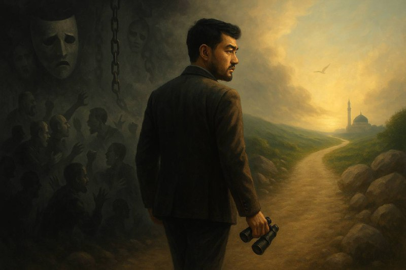
Ит ҳурар, карвон ўтар…
Баъзан инсон ҳаётида курашнинг ўзи мақсадга айланиб қолади. Ҳар бир гапга жавоб қайтариш, ҳар бир эътирозга мосланиш, майда баҳсларга киришиш — қувватни сарфлаб қўяди. Вақт ўтиб…

Икки дона уруғ ибрати
Баъзан ҳаётимизда иккита йўл бор: бири — хавфлироқ, лекин ўсишга олиб борадиган; иккинчиси — хавфсизроқ, лекин чўқишга маҳкум бўлган. Бир куни иккита дона уруғ ҳосилдор тупроқда…

Адолат изловчи инсон
Инсон табиатан адолатни излайди. У ҳатто болалигиданоқ “бу тўғри эмас” деган ҳисни танасида, қалбида ҳис этади. Лекин не ажаб — айнан ўша инсон бошқаларнинг хато ва гуноҳларига…
Эртанги бахт учун яшаш бугунги бахтга хиёнатдир!
Ҳозирдан бахтни ҳис қилолмаган инсон, эртага қанча молу давлат, қанча мартаба, қанча шарафга эришса ҳам, барибир қалбида бўшлиқ қолаверади. Чунки бахт – бу натижа эмас, бахт – бу…
Бир лаҳзалик роҳат — узоқ муддатли йўқотиш
Бир лаҳзача роҳат ёки кўтаринкилик берадиган воситалар — спиртли ичимликлар, тамаки маҳсулотлари, психотроп моддалар (таблеткалар), гиёҳванд воситалар — барчаси бир лаҳзача…

Қизи отасига яқинлашиб деди:
Ота, ҳаётим жуда оғир, доим оқимга қарши сузаяпман. Ишларим доим ҳам ўхшайвермаяпти. Қувватим йўқ… Нима қилишим керак? Ота жавоб бермади, учта қозонни сув билан тўлдириб, оловга…
Жоҳил ва аҳмоқларга тоқатсизлик
Атрофингизнинг сизнинг тақдирингизга таъсири Жоҳиллик – жамиятнинг энг хавфли душмани. Аҳмоқ одамлар ўзлари яратган муҳитда қолганда, уларнинг зарари асосан ўзларига тегарди. Аммо…
Ҳаётда танлов — энг катта куч
Бир ота ичкиликбоз эди. Унинг икки ўғли бор эди: 1⃣ Бири отасининг йўлидан кетиб, пиёниста бўлди. 2⃣ Иккинчиси эса йирик бизнесмен бўлди. Ҳар иккаласидан ҳам “Нега бундай…
Биринчи кибрнинг белгиси — беҳудага ранжиш.
Одам озгина гапдан, кичик бир ҳолатдан дарров ранжиса — бу унинг қалбида яширин, чуқур кибр борлигини кўрсатади. Ранжувчан одам — бу ўзига ва ўз “мен”ига ортиқча муҳаббат қўйган…

Ўғил бола тарбияси
Тартиб-интизом ва катталарга ҳурмат — ўғил болалар ҳаётидаги энг муҳим фазилатлар Бекорчилик — илмнинг душмани, нафснинг энг яқин дўсти. Бекорчилик — виждонсизликнинг белгиси…

Сут сояси
(Ҳаётдан олинган қисқа ҳикоя) Эрталаб. Қуёш ҳали парда остида. Мен кичик 7-8 ёшлар чамаси, столда сутли кружкани асталик билан ушлаб турибман. Ёнимда отам. Сокин тонг. Тинчлик…
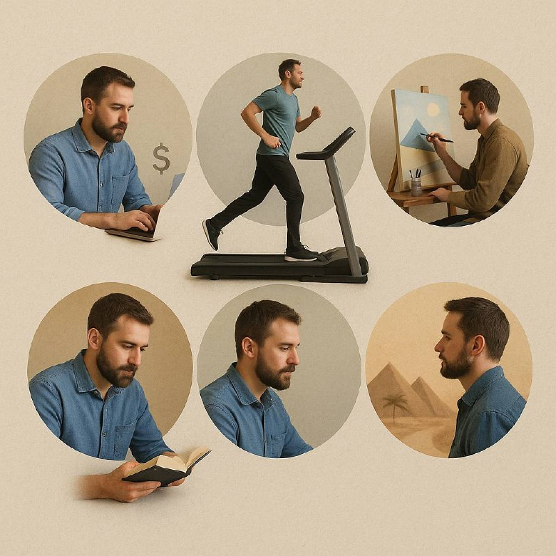
Беш хобби – бахт калити
Ҳар бир инсон ҳаётида беш хил хоббига эришиши керак. Улар сизга нафақат шодлик, балки тинчлик ва маъно ҳам олиб келади: 1️⃣Бир хобби кўнгилдаги иш, у орқали ризқ топинг. Бунда…

Ҳақиқат ҳаётда имтиҳон билан келишини англаш – ҳақиқий ақл аломати.
Қўрқув – сукунатда ўсади, жасорат – ҳаракатда етилади. Инсон танҳоликда қолганида, унинг нафси шубҳа билан гапиради: “Кут. Ҳали эрта. Вақт келмади. Яна ўйлаб кўр…” Аммо ҳаёт бир…
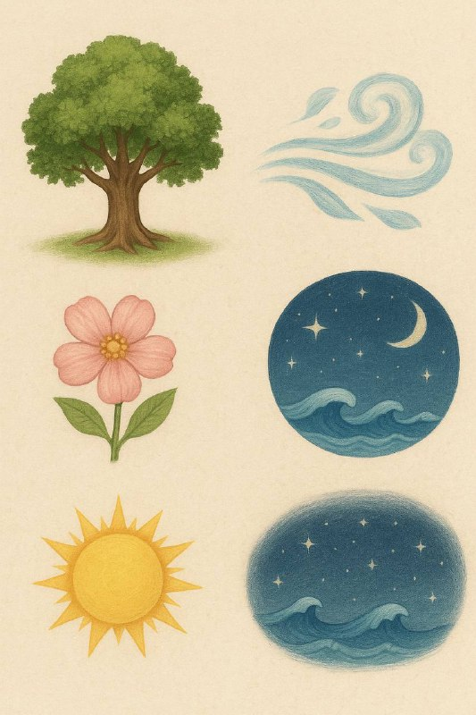
Табиат — ҳаётий устоз
Агар инсон диққат ва тафаккур билан табиатга назар ташласа, у ерда ҳаёт ҳақидаги энг чуқур ва долзарб дарсларни топади. Табиатда сукут бор, лекин унда ҳикмат товуши баланд. Табиат…

Устоз аҳамияти
Инсонда икки йўл бор: ё ўзи йўл очади, ё ўзига йўл кўрсатадиган зотга устозга эргашади. Устоз — бу Аллоҳнинг сиз учун юборган раҳмат элчисидир. У сизга ҳақиқатни айтса, бу сизнинг…
Беҳудага сарфланмаслик санъати
Инсон ҳар қанча ҳаракатда бўлмасин, агар бу ҳаракатлар тарқоқ бўлса — самара кам, натижа оз бўлади. Бироқ шундай бир неъмат борки, уни тўғри бошқарган одам, дунё ва охират…
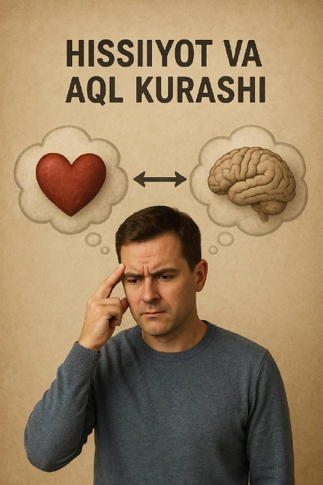
Ҳиссиёт ва ақл кураши – инсон хатоларининг илдизи
Инсон табиати икки кучдан иборат: ақл ва ҳиссиёт. Улар ҳар куни, ҳар соатда, ҳар қарорда ўзаро курашда бўлади. Ва айнан шу кураш — инсон қилган кўплаб хатоларнинг асосий…
Баъзан ҳаёт тоқатсиздек туюлади. Бир фурсатдан сўнг эса – тоқатсиз даражада гўзал. Ҳаёт…
Баъзан ҳаёт тоқатсиздек туюлади. Бир фурсатдан сўнг эса – тоқатсиз даражада гўзал. Ҳаёт аслида ўзгармайди. Ўзгарувчи – фақат сизинг нигоҳингиз. Қалбингиздаги туйғуни…
Қувонч ҳам, ғам ҳам юқумли…
Бир инсон бирор сўз айтмаса-да, унинг ичидаги ҳолат атрофга тарқалади. Баъзан бир бахтли инсон атрофдагиларни руҳлантиради — гўё юзида нур бор, гапида умид бор, нафасида салоҳият…
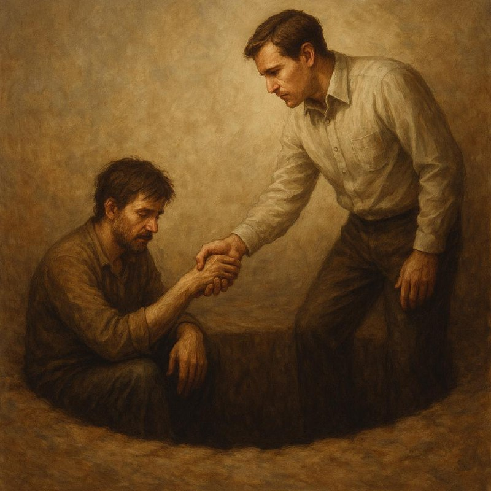
Ўзингга фақат ўзинг ёрдам бер…
Тасаввур қилинг, сизнинг яқин дўстингиз оғир ҳолда — ишсиз, мақсадсиз ва руҳан тушкун. Сиз унга иш топиб берасиз, мотивацияли китоблар маслаҳат берасиз, ҳатто резюмесини ёзиб…

«Ўшанда бошқача қилганимда эди…»
Эҳтимол, сизга ҳам таниш бу гаплар: «Агар ўша ишни қилмаганимда…», «Ўша гапга рози бўлганимда…», «Бошқа йўлни танлаганимда…» «Ўша вазиятда бошқача гапирганимда…» Бу фикрлар илк…
Идишда нима бўлса ўша пиёлада намоён бўлади…
Агар жомда сув бўлса, ундан шарбат кутманг. Инсон ҳам худди шу каби: у қалбида нима жамлаган бўлса, шундан ортиғини беролмайди. Кўпинча биз кимнидир ўзимизга яраша тушунишини, биз…

MDH hududida islom moliyasini jadallashtirish!
AlHuda CIBE tomonidan tashkil etilgan “4-MDH – Islom banki va moliya forumi 2025”da bizga qo‘shiling – bu yerda MDH mintaqasi bo‘ylab islom moliyasining kelajagini belgilash uchun…
8 нарсадан воз кечиш вақти келди
Биз кўпинча ўзимизга ўзимиз тўсиқ бўлиб қоламиз. Эркин ва бахтли яшашга, ўз салоҳиятимизни рўёбга чиқаришга йўл бермайдиган тўрт томондан келган уйғун тўсиқлар бор. Ана шу 8 нарса…
Мия фаолиятига зиён етказувчи омиллар
Инсоннинг энг қимматли бойлиги — бу ақли. Мия саломатлиги тўғри қарорлар қабул қилиш, ўрганиш, хотира ва ҳаётий энергия учун асосий манбадир. Аммо, афсуски, баъзи одатлар ва ҳаёт…
Бахтли фарзанд — бу натижа эмас масъулият. Агар фарзандингиз бахтли бўлишини истасангиз…
Бахтли фарзанд — бу натижа эмас масъулият. Агар фарзандингиз бахтли бўлишини истасангиз, биринчи қадам — ўзингизни бахтли қилиш. Бу ғурур эмас. Бу масъулият. Сиз нима ўргатсангиз…
Ҳурматли азиз ўқувчилар, дўстлар!
Сизларга самимий миннатдорлигимни билдирмоқчиман. Биламан — бу блогда эълон қилинаётган мавзулар оддий ва енгил эмас. Биз сизлар билан бирга ҳаётнинг юракларга таъсир қилувчи…
«Биз – ҳар бир кейинги лаҳзанинг муаллифимиз»
Инсон – тақдир ёзувчиси эмас, лекин ҳар бир лаҳзасига жавобгар. Аллоҳ ихтиёри билан бизга берилган энг нодир неъмат – вақт. Ва шу вақтнинг ҳар бир зарраси – бизга берилган…
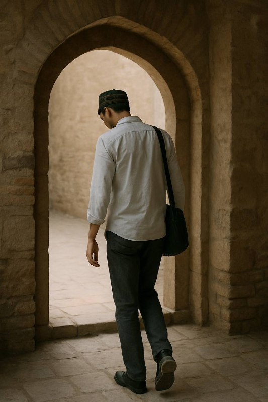
Ҳақиқат шундаки, инсон ҳамиша ҳам курашишга мажбур эмас. Ҳар бир жанг – фарз эмас. Баъзи…
Ҳақиқат шундаки, инсон ҳамиша ҳам курашишга мажбур эмас. Ҳар бир жанг – фарз эмас. Баъзи ҳолатларда энг оқилона қарор – тинчлик билан кетишдир. Унутманг: сабр – бу зўравонликка…
Нима қилиб бўлса ҳам ҳаракат бошлаш керак!
Ҳақиқат шуки, орзу қилиш осон. Ҳаракат қилиш, бошлаш оғир. Аммо айнан у ҳаётингизни ўзгартиради. Бошлаш учун порлоқ ғоялар, идеал шартлар керак эмас. Сизга керак бўлгани – биринчи…
Яхшиликдан қўрқманг
Баъзан инсон хушнуд кунларда ҳам тинчлик топа олмайди. Қалбида бир қўрқув ғовланади: “Бу бахт учун менга албатта тўлаш керак бўлади. Ҳаёт ҳеч нарсани бепул бермайди.” Дилида…

Ҳаётнинг биринчи ярми — ғалаён.
Юрак ҳали ўзига тўғри келмас ҳислар билан тўлиб-тошган. Севги дейсиз, орзу дейсиз, зўр яшаш, зўр кўриниш… Ҳар бир қараш — муҳаббат, ҳар бир юрак уриши — драматик. Ҳар бир киши — ё…
Ота-оналар — паноҳимизнинг суянчи, фарзанд тақдирига ҳамнафас, ҳамдард фидоийлардир.
Ҳар бир инсоннинг саҳна ортида кўзга кўринмас, бошқа чемпион — унинг онаси ва отаси. Улар — оғир кунларида ортдаги пинҳона дуо, кўтарилишида сўзсиз қўллаб-қувватловчи, ҳар…
Ўзингизни сотманг.
Атрофдаги инсонлар кўпинча биздан муайян қолипларга мос ҳаракат қилишни кутишади. Агар биз шунга кўнсак ва ҳаётимизни бошқаларнинг стандартларига мувофиқ қурсак, аслида ўзимизга…
Мен ким бўлиб дунёга келишни танламаганман. Бу ихтиёр менда эмас эди — қайси замон, қайси…
Мен ким бўлиб дунёга келишни танламаганман. Бу ихтиёр менда эмас эди — қайси замон, қайси замин, қайси юрак ичида туғилишим тақдирда битилган. Ота-онам улуғ ибрат, нажот ва неъмат…
Зиёлилик юксак фазилат, унга тақлид билан эмас, ички ҳолат билан эришилади.
Сахийга оз-моз хайр садақа улашиб тақлид қилиш, меҳрибонликни ўйнаш, ростгўйликни даъво қилиш мумкин. Аммо зиёли инсонга ўхшаб кўриниш мумкин эмас. Чунки у қалбдаги тарбия…
Аслингиздан ўзга кўринишга уринманг — узоқ юролмайсиз. Оёқ учида туриш қалбни чарчатади…
Аслингиздан ўзга кўринишга уринманг — узоқ юролмайсиз. Оёқ учида туриш қалбни чарчатади, риё — руҳни емиради. Тиззада ўтириш эса ўз қадрингизни камситади, табиий ҳақиқийликни…
Ер юзига «муваффақиятли» деб аталадиган одамлар эмас, балки қалби илоҳий нур билан…
Ер юзига «муваффақиятли» деб аталадиган одамлар эмас, балки қалби илоҳий нур билан тўлган, Аллоҳ розилигини мақсад қилган банда керак. Дунёга тинчлик ўрнатувчи, шифо ва раҳмат…
Молиявий эркинлик сари қадам ташлайлик!
Агар ишлайдиган ишингиз бўлса, лекин молиявий жиҳатдан эркин эмаслигингизни ҳис қилаётган бўлсангиз — бу суҳбат айнан сиз учун: • Қўлингизда озгина маблағ бор, лекин қаердан…
Соддалик ниқоби остидаги манманлик
Ҳаётда шундай одамлар учрайдики, улар ўз билимсизлиги, тарбиясизлиги ёки маданиятсизлигини “мен содда одамман”, “фалсафа керак эмас”, “мен шунча йил шу йўлда яшадим” каби сўзлар…
Ичимиздаги “аҳлат” — ўзимизнинг масъулиятимиз
Инсон ҳаёт давомида, турли воқеа ва муаммолар таъсирида, қалбида турли салбий ҳис-туйғуларни йиғиб боради. Бу ғамлар, ранжишлар, кўнгилозарликлар — гўё кўринмас бир “аҳлат”, уни…

Инсон буюк мавжудот
Бизнинг ҳаётимизда учрайдиган одамлар — тасодиф эмас. Ҳар бир учрашув, ҳар бир қиёфа, ҳар бир руҳий туйғу — бу биз ўз оиламизда, орзуларимизда, атрофимизда ёки қалб тубида…
Шиддат билан ўзгараётган дунёда энг муҳими — қалбда тартиб ўрнатиш.
Одам кўп нарсани бошқара олмаслиги мумкин, лекин ўз руҳиятини, ўз ички дунёсини тозалаш — фақат унинг қўлида. Бунинг учун тўрт «МА»ни унутманг: Шикоят қилМА. Бировни айблаМА…
Инсон ўзини таниб етганидан сўнг, унда чексиз куч пайдо бўлади. Вақтики у англаб етсаки…
Инсон ўзини таниб етганидан сўнг, унда чексиз куч пайдо бўлади. Вақтики у англаб етсаки, энди орқа йўл йўқ, қайтишнинг иложи йўқ — ана ўша пайтда унда ҳаётни қайта қуришга, ҳар…
Инсон зоти табиатан турли-туман: бири оқ, бири қора; бири бой, бири камбағал; бири илмли…
Инсон зоти табиатан турли-туман: бири оқ, бири қора; бири бой, бири камбағал; бири илмли, бири саводсиз; бири шаҳардан, бири қишлоқдан. Лекин ушбу фарқлар инсон қадрини белгиловчи…
Болаларни уриш мумкин эмас. Улар ҳаётнинг ўзида турли оғриқ ва адолатсизликларга дуч…
Болаларни уриш мумкин эмас. Улар ҳаётнинг ўзида турли оғриқ ва адолатсизликларга дуч келишади. Агар боланинг хато қилгани сизни ғазаблантирса, уни жазолаш ўрнига, ўзингизнинг…
Баъзан бахт учун фақат бошқалар билан эмас, балки энг оғири — ўзимиз билан курашишга…
Баъзан бахт учун фақат бошқалар билан эмас, балки энг оғири — ўзимиз билан курашишга тўғри келади. Қалбдаги шубҳалар, ортиқча қўрқувлар, ўтмишнинг оғриқлари бизга бахтга етишишга…
Касаллик танлови…
Инсон хаста бўлади, хасталик турли-туман ва кутилмаганда юз беради. Беморлик ўзи билиб билиб келаверади. Инсон ўз беморлигини танламайди, лекин у танлайдиган нарсаси стресс — ва…
Инсон ҳаётида энг оғир юклардан бири — сохта юз. Яъни, ўзини бошқа қиёфада кўрсатиш…
Инсон ҳаётида энг оғир юклардан бири — сохта юз. Яъни, ўзини бошқа қиёфада кўрсатиш, дилида бўлмаганни сўзига чиқариш, қалбида йўқ ҳиссиётни чеҳрасида намоён этиш. Кўпчилик…
Ҳар бир инсон ёнида самимий дўст бўлишини истайди, аммо ўзи дўст бўлишга тайёрми?
Бугунги кунда жамиятда “эга бўлиш” истаги “бўлиш” масъулиятидан устун келмоқда. “Бола кўришни истайман” деган сўзда меҳрдан кўра мулкчилик туйғуси сезилади, “эрим бўлишини…

Инсон ўз устидан ишлашни бошламаса, шайтон уни бошқаларнинг айбини қидиришга мажбур этади.
Инсоннинг нафси уни ўзидан узоқлаштиради, ўз айбларини кўрсатмайди, лекин бошқалардаги нуқсонларни йириклаштиради. Бу — шайтоннинг энг қадимий найрангларидан бири. «Нафсинг билан…
Дунёда ҳар бир инсоннинг у ёки бу ҳиссаси қолади. Агар сиз ҳар куни оддий бир табассум…
Дунёда ҳар бир инсоннинг у ёки бу ҳиссаси қолади. Агар сиз ҳар куни оддий бир табассум билан бошқаларнинг кунини ёритсангиз, бу из нурли ва эзгу бўлади. Инсонлар сиз билан…
Инсоннинг дунёқараши ўзгарса, у ўзи билмаган ҳолда ўзини тутиши, хатти-ҳаракатлари, ҳатто…
Инсоннинг дунёқараши ўзгарса, у ўзи билмаган ҳолда ўзини тутиши, хатти-ҳаракатлари, ҳатто феъл-атвори ҳам ўзгаради. Чунки ҳар бир ҳаракатнинг илдизи — фикрда. Фикр амалга…
Ота ибрати — фарзанд учун энг буюк мактаб. У бола учун нафақат ҳимоячи, балки ҳаётдаги…
Ота ибрати — фарзанд учун энг буюк мактаб. У бола учун нафақат ҳимоячи, балки ҳаётдаги биринчи ва асосий муаллим ҳамдир. Ота ўз ҳаёти, сўзи ва амали намунаси билан фарзандига ким…
Инсон табиати қониқмаслик билан яратилгандек туюлади. Унга зарур бўлган нарсани…
Инсон табиати қониқмаслик билан яратилгандек туюлади. Унга зарур бўлган нарсани берсангиз, қулайлик излайди. Қулайликни топса, рўзғор кенгайишини, яшаш тарзида шоҳоналикни…
Кўпчилик одамлар ўзини ҳукмдордек тутиб, бошқалар учун қарор қабул қилишга одатланиб…
Кўпчилик одамлар ўзини ҳукмдордек тутиб, бошқалар учун қарор қабул қилишга одатланиб қолган. Улар боласи учун ота-она, ходими учун раҳбар ёки шогирди учун устоз бўлиши мумкин…
Одам ўз ҳаётидаги ҳар бир воқеа учун масъулиятни ўзига олиши керак. Агар кимдир уни…
Одам ўз ҳаётидаги ҳар бир воқеа учун масъулиятни ўзига олиши керак. Агар кимдир уни алдаган бўлса, бу фақат унинг ишонгани ёки ҳаддан ташқари соддалиги туфайли содир бўлган. Агар…
Ақл билан умрни узайтириш
Инсон ҳаётида билим ва тажриба орттириш доимий жараён бўлиши лозим. Компьютерлар, ҳунармандчилик, боғдорчилик ёки бошқа соҳалар бўлсин, ҳар қандай янги билим ақлни чархлаб, уни…
Муҳаббат — бу фақатгина никоҳ билан боғланган келишув эмас, ўткинчи ҳис-туйғу ёки фақат…
Муҳаббат — бу фақатгина никоҳ билан боғланган келишув эмас, ўткинчи ҳис-туйғу ёки фақат шаҳватга асосланган майл ҳам эмас. Ҳақиқий муҳаббат — бу Аллоҳ таоло томонидан инсон…
Ҳақиқатан ҳам инсон қалбдан хоҳлаган нарсаси учун албатта вақт топади. Вақтнинг йўқлиги…
Ҳақиқатан ҳам инсон қалбдан хоҳлаган нарсаси учун албатта вақт топади. Вақтнинг йўқлиги деган баҳона йўқ, бор нарса — қалбингизнинг истаклари қанчалик самимийлигидадир. Агар бирор…
Диплом, сертификат, шаҳодатнома - мактаб ёки университетдаги муваффақият ҳали ҳаётдаги…
Диплом, сертификат, шаҳодатнома - мактаб ёки университетдаги муваффақият ҳали ҳаётдаги ҳамма қийинчиликларга тайёр эканлигимизни англатмайди. Аъло баҳолар ва дипломлар инсоннинг…
Болалигимиздаги жазо кўпинча бизга эҳтиёткорлик эмас, балки қўрқувни ўргатади. Хатоларни…
Болалигимиздаги жазо кўпинча бизга эҳтиёткорлик эмас, балки қўрқувни ўргатади. Хатоларни жазолаш орқали инсонни яхшилаб бўлмайди, аксинча, унинг қўлини боғлаб, хатолардан…

Ҳар кунни кичик ғалабалар билан бошлаш – бу нафсни, танбалликни ва заифликни енгиш…
Ҳар кунни кичик ғалабалар билан бошлаш – бу нафсни, танбалликни ва заифликни енгиш демакдир. Кўпинча, одамлар катта ғалабалар ҳақида ўйлайдилар, аммо ҳақиқий муваффақият кундалик…
Бизнинг онгимиз – фақат маълумот сақлайдиган жой эмас, балки у биз дунёни қандай қабул…
Бизнинг онгимиз – фақат маълумот сақлайдиган жой эмас, балки у биз дунёни қандай қабул қилишимизни шакллантиради. Агар биз уни доимий равишда салбий ахборот билан «озиқлантирсак»…
Ўзингиз…
Энг хавфли душманингиз – ўзингиздир. Сиз ўзингизнинг ички заифликларингиз ва озод бўлмаган тенгсизликларингиз билан бирга ҳар қадамингизда учрашасиз. Сизга йўл очилади, лекин ўша…

Ҳаёт – доимий изланиш ва ўзгариш жараёни.
Инсон ёши нечада бўлишидан қатъи назар, “Мен нима билан шуғулланмоқчиман?” деган саволга дуч келиши мумкин. Бу савол 20 ёшда ҳам, 30 ёшда ҳам, ҳатто 50 ёшда ҳам пайдо бўлиши…
Тил ва ақл тезлиги
Инсон ақли тез ишлайди. Бир зумда турли фикрлар, ҳис-туйғулар ва ғоялар пайдо бўлади. Лекин шу фикрларни дарров тилга олиб чиқиш тўғри бўладими? Бу ерда муҳим қоида бор: “Тилнинг…
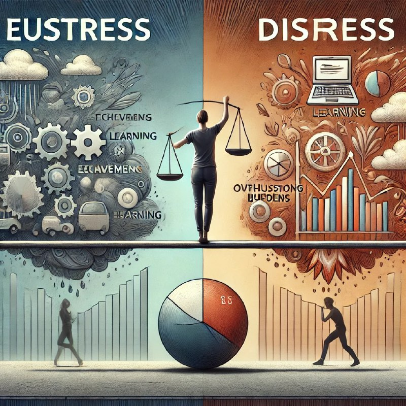
Стресс – душман эмас, ўқитувчи
Ҳозирги кунда стресс ҳақида фақат ёмон гапирилади. Ҳамма енгилликка интиляпти, шунинг учун стресс ҳақида салбий фикр шаклланган. Лекин аслида стресс ҳам яхши, ҳам ёмон бўлиши…
Сотиш маҳоратимизни ўстиришимиз лозим зеро ҳаёт сотиш ва сотиб олишдан иборат.
Яхши сотувчи қассобга ўхшайди - яхши гапирса, хизмат кўрсатса мижоз ўзи “бўйнини” (пулини) тутиб беради. Савдода энг муҳим жиҳат – мижозни ҳис қилиш ва унинг эҳтиёжларини тушуниш…
Душмандан қутулишнинг энг яхши йўли – у ҳақида ҳамма жойда фақат яхши гапиришдир. Унинг…
Душмандан қутулишнинг энг яхши йўли – у ҳақида ҳамма жойда фақат яхши гапиришдир. Унинг қулоғига бу сўзлар етиб боради ва у сизга зарар етказишдан тўхтайди. Чунки инсон қалби…
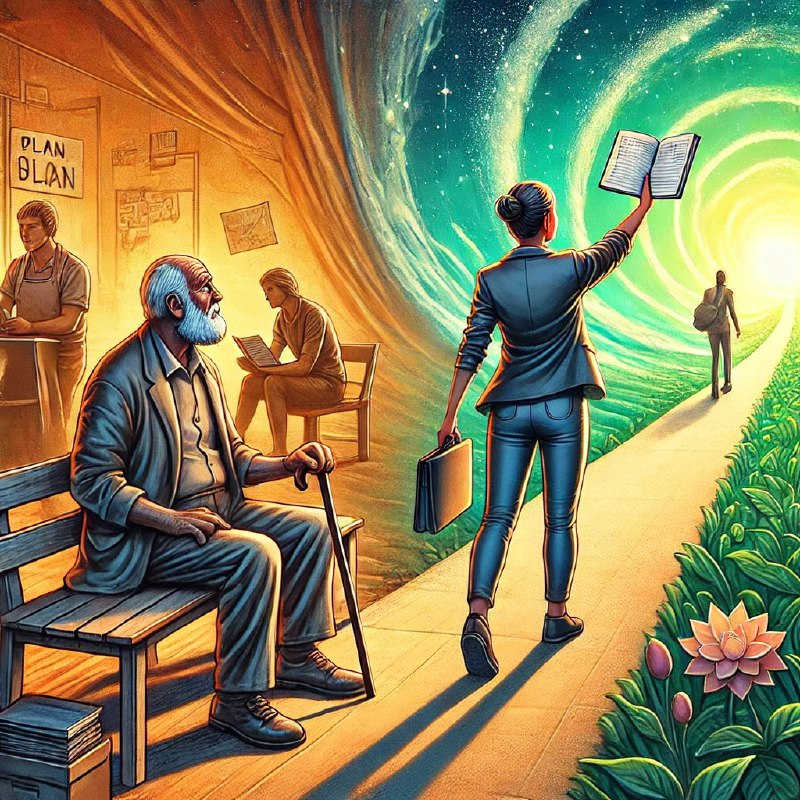
Нафақахўр инсон билан фаолият юритадиган инсон ўртасидаги фарқ – режа мавжудлигида.
Фаол инсон ўз олдига аниқ мақсадлар қўяди, уларга эришиш учун режа тузади ва амалий ҳаракат қилади. Унинг ҳаётида динамика, ҳаракат ва ўсиш бор. Нафақахўр инсон эса кўпинча аниқ…
Ақл – инсонга берилган энг катта неъматлардан бири. У ҳар бир тажриба, ҳар бир ўрганилган…
Ақл – инсонга берилган энг катта неъматлардан бири. У ҳар бир тажриба, ҳар бир ўрганилган билим билан чархланади ва мустаҳкамланади. Лекин агар инсон ақлини ишлатишни тўхтатса, у…
Ҳаётда тўғри қарорга келиш учун хотиржам ақл зарур. Лекин кўпинча, биз ҳис-туйғулар…
Ҳаётда тўғри қарорга келиш учун хотиржам ақл зарур. Лекин кўпинча, биз ҳис-туйғулар таъсирида ҳаракат қиламиз – ғазаб, қувонч, хавотир ёки ҳаяжон остида айтилган сўзлар, қилинган…
Замонлар айланмасидаги малакавий узилишлар
Ҳаёт давомида инсон ҳақиқатни тушунишга яқин келганда, унга амал қилишга кеч бўлади. Инсон ёшлигида ҳаёт ҳақида кам нарса билади, аммо вақт ўтиши билан тажриба орттиради…

Пассив ижтимоий босим
Инсон туғилганиданоқ унинг атрофида қоидалар, чекловлар ва жамият томонидан ўрнатилган доиралар пайдо бўлади. Уларнинг кўпчилиги, афсуски, шахсий эркинликни чеклашга, ўзига…
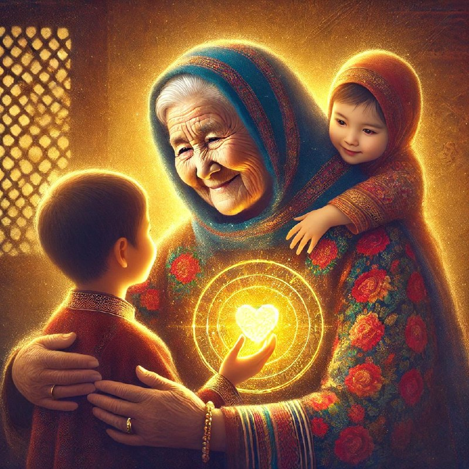
Муҳаббатдан гап кетса, онадан бошланг
Муҳаббат – беқиёс бир қувват, лекин унинг энг олийси, энг беғубори – она муҳаббати. Она – меҳр тимсоли, инсонни ҳаётга келтириб, унинг ҳар бир нафасини асраб-авайлайдиган илк…
Биз шундай дунёда яшаяпмизки, бу ерда дафн маросими марҳумнинг ўзида муҳимроқ, тўй эса…
Биз шундай дунёда яшаяпмизки, бу ерда дафн маросими марҳумнинг ўзида муҳимроқ, тўй эса муҳаббатдан устун, ташқи кўриниш эса ақлдан афзал. Ҳалоллик эса яшашнинг замонавий усули…
Ҳеч қачон ўзингизни жабрланувчи (Жертва) сифатида тасаввур қилманг.
Агар сиз муаммо ёки қийинчиликларингиз учун бошқаларни ёки ташқи омилларни айбласангиз, ўзингизда бирор нарсани ўзгартириш қувватини йўқотасиз. Бундай фикрлаш инсонни ожиз қилиб…
Ҳеч қачон яшил олма дарахтини силкитманг – олма пишганда, ўзи ерга тушади. Ҳар бир нарса ўз вақтида ва керакли пайтда содир бўлади.
Ҳаётда ҳам шундай: ҳар бир воқеа ва натижа ўзининг табиий ривожланиш жараёнига эга. Биз кўпинча сабрсизлик қилиб, натижани тезроқ кўришни хоҳлаймиз, лекин ҳар бир ишнинг ўз вақти…
Стресс қаердан пайдо бўлади, деб ўйлаб кўрганмисиз?
Асосан, стресс шундан келиб чиқадики, сиз тўғрини билиб туриб, барибир тескарисини қилишингизда. Бу ички зиддият, ўзингизнинг билиб турган ҳақиқий ечимингизга қарши бориш…
Ҳар кунлик ижобий тафаккур муҳимдир
• Мен ўзимга ғамхўрлик қилишни яхши кўраман. Мен ўзимни тўлиқ қабул қиламан. Ҳар куни ўзимга меҳр, бахт ва муҳаббат нурларини йўллайман. Руҳим тинч ва қалбим хотиржам. Мен ўз…

Ҳаётда ҳакамлар етарли. Дўст эса сизни қабул қилиш учун яратилган.
Биз доимо муҳокама ва баҳоларга дуч келамиз. Инсоннинг хатолари, камчиликлари ва ҳатто қарашлари учун танқид қилиши табиий ҳолга айланган. Оила, жамият, иш жойи – барчасида бирор…
Узоқ умр ва кексалик ҳақида
Ҳар бир инсон узоқ яшашни истайди, аммо ҳеч ким қаришни хоҳламайди. Бу табиий ҳол, чунки кексалик кўпчилик учун куч-қувватнинг пасайиши, касалликлар ва имкониятларнинг чекланиши…

Фақат ҳис этилган нарса ҳақиқийдир
Инсон ҳаёти давомида кўп нарсаларни эшитади, ўқийди ва билади. Лекин эшитилган сўзлар, ўқилган фикрлар тез ўтиб кетади, хотирада қолмайди. Улар сувга тушган из каби йўқолиб…
Учувчи ҳар бир йўловчидан самолётда ўзини қандай ҳис қилаётганини сўрамайди. Унинг аниқ…
Учувчи ҳар бир йўловчидан самолётда ўзини қандай ҳис қилаётганини сўрамайди. Унинг аниқ маршрути ва бу йўналишда нима учун ҳаракат қилаётгани ҳақида тўлиқ тушунчаси бор. Сизнинг…

Доим йўлда йўл чизиғинт ўзгартираётган ҳайдовчи – унинг психологияси нима ҳақида гапиради?
Полосани ушлаб туролмаслик ёки кераксиз равишда тез-тез ўзгартириш ҳайдовчининг баъзи психологик ҳолатларини акс эттириши мумкин. Бу ҳолат турли сабабларга боғлиқ бўлиши мумкин ва…
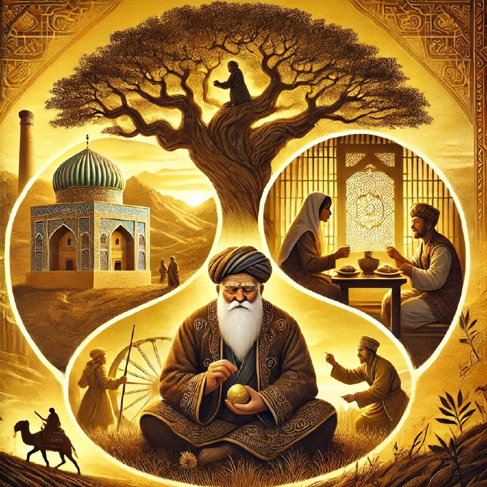
Энг катта бойлик - Сабр, қаноат ва сукут!
Ҳар бир инсон ҳаётида муваффақиятга эришишни, ҳурмат қозонишни ва бахтли бўлишни истайди. Лекин кўпчилик бу мақсадларга қандай етиш мумкинлигини яхши тушунмайди. Аслида эса ҳаётда…
Руҳий соғлик учун ёлғизликнинг аҳамияти
Ҳар бир инсон учун кунлик камида икки соатлик ёлғизлик ва ички хотиржамлик муҳимдир. Бу нафақат дам олиш, балки руҳий мувозанатни сақлаш учун ҳам зарурдир. Замонавий дунёда биз…
Ҳеч ўйлаб кўрганмисиз - тарихда шунча паҳлавону куч қудрат эгалари ўтган- нега айнан…
Ҳеч ўйлаб кўрганмисиз - тарихда шунча паҳлавону куч қудрат эгалари ўтган- нега айнан Паҳлавон Маҳмуд инсонлар хотирасида қолиб, унга мақбаралар бино қилиб, номи абадий инсонлар…
Китоб ўқиш шунчаки саҳифаларни айлантириш эмас. Бу – фикр юритиш, ёзувчининг ғояларини…
Китоб ўқиш шунчаки саҳифаларни айлантириш эмас. Бу – фикр юритиш, ёзувчининг ғояларини таҳлил қилиш, ўқилган маълумотни бошқа китоблар билан таққослаш ва янги ғоялар ёки…
Қадрли кузатувчи дўстлар!
Ассалому алайкум ва роҳматуллоҳи ва барокатуҳ! Қадрли кузатувчи дўстлар! Маълумот олами жадал ривожланиш асносида интернет оламида турли туман контентлар мавжуд. Уларнинг ривожи…
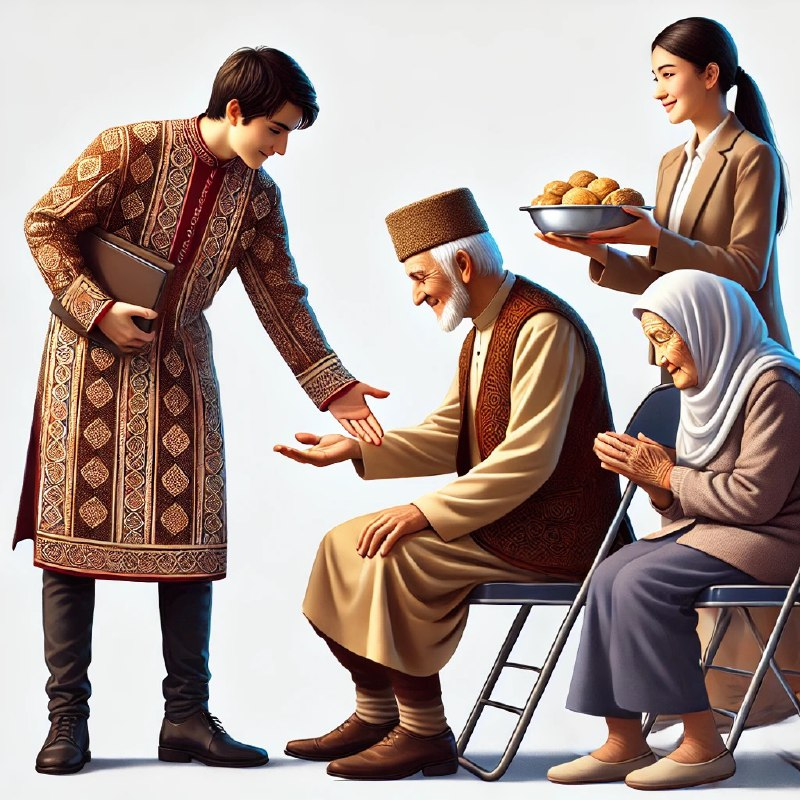
Катталарни ҳурмат қилиб, ҳали ҳеч ким хор бўлгани йўқ!
Муҳтожларга ёрдам қилиб, ҳали ҳеч ким касод бўлгани йўқ! Кексаларга эътибор қилиб, ҳали ҳеч ким ўлгани йўқ! Ҳаётда ҳар бир инсоннинг вазифаси бор: катталарни ҳурмат қилиш…

Қайтадан ҳеч нарса ўзгармаган жойга қайтишдан яхши нарса йўқ, чунки айнан шу ерда сиз ўзингиз қанчалик ўзгарганингизни тушуниб етасиз.
Вақт ўтиши билан одам ўзгариши табиий ҳол. Биз янги билимлар, тажрибалар орттирамиз, мақсадларимиз ўзгариб боради. Аммо биз қайтиб борган жойларда ҳамма нарса ўшандай қолса, биз…
Яхшиликни эслаб қолиб, ёмонликни унутиб юборадиган одам ҳақиқий бахтли инсондир.
Ҳаётда ҳар ким ҳам яхшиликка яхшилик билан жавоб бера олмайди, ёмонликни эса унутиш ҳаммага ҳам насиб этмайди. Инсон қалбида кечиримлилик ва миннатдорлик ҳисси қанчалик кучли…
Аввал ният қилишни ўрганишимиз керак…
Шубҳадан йироқ, беғубор ниятлар инсон ҳаётида катта аҳамиятга эга. Чунки ниятларнинг поклиги ва софлиги инсоннинг ички дунёсини тозалайди ва уни мақсад сари равон етаклайди. Ҳар…

Ҳаёт йўлимда энг катта ва шиддатли душманим – ўзимман. Яъни, қўрқоқлик, ялқовлик…
Ҳаёт йўлимда энг катта ва шиддатли душманим – ўзимман. Яъни, қўрқоқлик, ялқовлик, аҳмоқлик ва ўзимга ишончсизлик билан тўла бўлган “мен”. У шу қадар кучлики, мени пастга тортади…
Ҳар бир инсон ўқишни, янги билимларни ўзлаштиришни тўхтатса, ўша заҳоти қарий бошлайди…
Ҳар бир инсон ўқишни, янги билимларни ўзлаштиришни тўхтатса, ўша заҳоти қарий бошлайди. Бунинг ёшга ҳеч қандай алоқаси йўқ – у 20 ёшда бўладими ёки 80 ёшда, фарқи йўқ. Лекин кимки…
Ҳаётда энг муҳими – қалбдаги илиқликни сақлаш.
Илиқлик бор экан, ҳаётни ва инсонларни ҳис қилиш, бир тану бир жон бўлиш имконияти мавжуд. Агар у совиса – демак, нимадир нотўғри, бефарқлик инсоннинг ички моҳиятини емириб, уни…

Барча тез хоҳлайди. Лекин «тез» узоқ йўлга юришни билмайди.
Ҳар бир инсон ўз мақсадларига тезроқ эришишни хоҳлайди, лекин барқарор ва мустаҳкам натижаларга эришиш учун вақт ва сабр талаб қилинади. Тезкорлик кўпинча шошқалоқликка олиб…
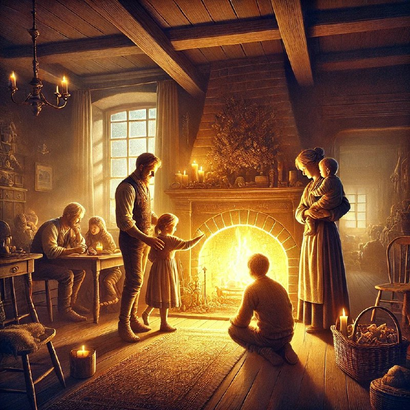
Оила ўчоғини ёқиб туриш — бу ҳам алоҳида меҳнат. У ҳар қандай бошқа иш сингари осон эмас…
Оила ўчоғини ёқиб туриш — бу ҳам алоҳида меҳнат. У ҳар қандай бошқа иш сингари осон эмас, енгил эмас ва албатта, кам аҳамиятли ҳам эмас. Аслида, бу инсоннинг энг муҳим ишларидан…
Инсонлар кўпинча фикрлашича: янги жой, янги муҳит ва янги ҳаёт уларга бахт олиб келади…
Инсонлар кўпинча фикрлашича: янги жой, янги муҳит ва янги ҳаёт уларга бахт олиб келади. Уларга шундай туюладики, барча муаммоларни қолдириб, фақат янги имкониятлар билан янги ҳаёт…
Жаханнам азоби жуда катта даҳшатга эга. У ҳақида ўйлашнинг ўзи инсонни қўрқувга солади…
Жаханнам азоби жуда катта даҳшатга эга. У ҳақида ўйлашнинг ўзи инсонни қўрқувга солади. Лекин ҳақиқий мўмин инсон, қанчалик ашаддий ёмонлик қилган бўлса ҳам, бундай азобни ҳатто…
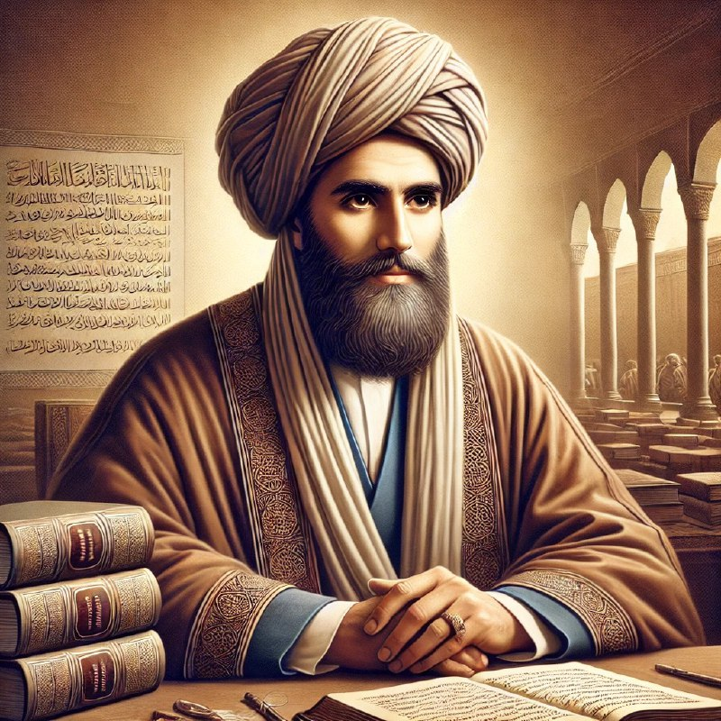
Имам ал-Ғаззолийнинг асосий насиҳатлари
1. Аллоҳга ихлосли бўлиш: - Ҳар бир амални, ибодат ёки кундалик ишлар бўладими, Аллоҳнинг розилиги учун қилиш зарур. - Риёдан қочиш муҳим. Аллоҳ учун қилинмаган амал инсоннинг…
Сиз билан бўш вақтларида гаплашадиганлар билан, Сиз билан гаплашиш учун махсус вақт ажратадиганларни фарқлай билишингиз керак.
“Вақтим йўқ, бандман”, - дейилганда: “Сенга вақтим йўқ", - назарда тутилади одатда. Ҳаётимизда ҳамма нарса вақтга боғлиқ. Вақт — бебаҳо неъмат. У орқага қайтмайди, уни на сотиб…
Сукут ва сабр улуғ куч
Инсоннинг мустаҳкам пойдеворларидан бири бу ички сокинлик, сабр ва хотиржамликдир. Бўм-бўш идишга гумбурлаш хосдир, камгаплик ва камтарлик - бўшлиқ нишонаси эмас. Дарҳақиқат…

Комил инсон барчада камолот кўради,
Ноқис инсон барчада нуқсон кўради. Комил инсон сизнинг фақатгина фазилатингизга қараб муносабат билдиради. Камчиликларни кўрсада, аммо комил қирраларига таянади. Комил инсон — бу…
Инсон ўзига нисбатан талабчан бўлмаса, йўл қўйилган хатолар ва муаммоларни ҳеч бир устоз…
Инсон ўзига нисбатан талабчан бўлмаса, йўл қўйилган хатолар ва муаммоларни ҳеч бир устоз ёки мураббий ҳал қилиб бера олмайди. Таълим ва тарбиянинг асоси инсоннинг ўзида, унинг…

Ўқувчи — бу фақат тўлдирилиши лозим бўлган идиш эмас, балки ёқиладиган машъалдир.
Ўқувчига билим бериш фақат унинг миясини маълумотлар билан тўлдириш эмас, балки унда қизиқиш, илҳом ва мотивация уйғотишдир. Чунки ҳақиқий билим орқали инсон нафақат билим олади…
Ҳар тунинг қадр бўлибон,
Ҳар кунинг наврўз бўлсин! Янги милодий йил кириши диёрларимизда яқин тарихдан урф бўлиб келмоқда. Бу масалада динга ғулув кетганлар ҳаром деб ҳукм ўқисалар, иймони заифроқ…
Инсон табиатни эгалламоқда, аммо ўзини бошқара билишни ҳали ҳам ўргангани йўқ.
Бугунги кунда инсоният улкан технологиялар ва илм-фан ютуқлари билан табиатни бошқаришга уринаётган бир даврда яшамоқда. Ернинг табиий ресурсларини қазиб олиш, ҳайвонот ва ўсимлик…
Ҳаётда энг қимматбаҳо нарса – бу инсоннинг ўзи.
Ҳашаматли уй, машина ёки мол-мулк ҳаёт сифати ва бахтни белгилаб беролмайди. Агар инсон матонатли, билимга чанқоқ, қизиқувчан ва фаол бўлмаса, унинг ҳаётига қанчалик моддий бойлик…
Атроф
Атроф Агар сиз бешта интеллигент одам билан мулоқот қилсангиз, сиз олтинчиси бўласиз. Агар сиз тўртта ўзига ишонган одам билан мулоқот қилсангиз, сиз бешинчиси бўласиз. Агар сиз…

Гўзаллик эффекти
Инсон мукаммал ва гўзалдир. Унинг жисми Одам алайҳиссалом тимсолида жаннатни кўрган! Жаннат эса беқиёс гўзалдир! Инсон доим мукаммалликка интилади, ошиқади. Инсон ўз ҳаётини…
Ҳаракат – бу инсоннинг энг қудратли кучларидан бири. Доимо ҳаракатда бўлиш нафақат…
Ҳаракат – бу инсоннинг энг қудратли кучларидан бири. Доимо ҳаракатда бўлиш нафақат мақсадга яқинлаштиради, балки инсоннинг қалбини ҳам, танасини ҳам тетик сақлайди. Ҳар бир қадам…
Инсонларга одилона ва чин қалбингиз билан муомала қилинг. Ҳар бир сўзингизда самимият ва…
Инсонларга одилона ва чин қалбингиз билан муомала қилинг. Ҳар бир сўзингизда самимият ва ҳурмат бўлсин, чунки вақт ўтиб, ўша муносабатларингиз сизга хотира бўлиб қайтиб келади…
Ўзгартириш сўзига энг лойиқ инсон ўзингиз. Лекин бу фикрга кўпинча бепарво бўламиз ва…
Ўзгартириш сўзига энг лойиқ инсон ўзингиз. Лекин бу фикрга кўпинча бепарво бўламиз ва дарҳол бошқаларни ўзгартиришга киришамиз. Бошқаларнинг танқидига дарров ўтиб , уларнинг…

Сиз бугун катта мақсадларни ўзингизга белгилаб, бирон нарсани ўрганишни ёки катта ишларни…
Сиз бугун катта мақсадларни ўзингизга белгилаб, бирон нарсани ўрганишни ёки катта ишларни амалга оширишни ният қилган бўлсангиз, шошилманг. Бир қарашда энг оддий нарса ҳам…
Сабр ва тушуниш йўлидаги қадам
Ҳар бир инсон ўз ҳаётида турли вазиятларга дуч келади. Айрим ҳолатлар бизга оддий ёки осон кўриниши мумкин. Масалан, бировнинг муаммосини эшитганимизда ёки унинг юзлаган…

Ақл ўз чегарасини бир марта кенгайтирар экан, ҳеч қачон аввалги ҳолатига асло қайтмайди.
Бу сўзлар инсон ақлий ва руҳий ўсишининг қайтмас ва чексиз эканлигини эслатади. Бир марта одатий доирамиздан чиқиб, янги билимлар, янги имкониятлар ва янги тажрибаларни қабул…
Аста-секин…
Бизда бу сўз кўпинча «Ишларингиз қандай?» деган саволга жавоб бўларди. У илиқ, самимий, дабдабадан холи, юмшоқ сўз, худди чарчаган бошни силаб турган ота-она қўллари каби. У балки…
Ҳар бир инсоннинг ички онги ва виждони унинг амалларини белгилаб беради. Ҳатто фикрларига…
Ҳар бир инсоннинг ички онги ва виждони унинг амалларини белгилаб беради. Ҳатто фикрларига таянган атеист ҳам виждонини юракдан тинглайди ва атрофдагиларга яхшилик қилишга…
Менинг иш ва ҳаётий қувватимни сақлаш сирларим
1. Кўп ва мунтазам дам олиш орқали тикланаман. Ҳар ҳафта ва ҳар 6 ойда тикланиш циклларига амал қиламан. Бу дам олиш кунлари ва таътиллар орқали амалга оширилади. Фурсат бўлганда…
Энг ёмон ёвузлик — ўзини яхшиликдек кўрсатадиганидир.
Юзма-юз келган ёвузлик хавфли бўлса-да, уни таниб, ўз вақтида ҳимояланиш мумкин. Аммо ёвузлик ғамхўрлик ёки адолат ниқоби остида тирноқларини яширганда, у чуқурроқ сингиб, дарҳол…
Инсоннинг билими унинг ўқишга бўлган хоҳиши билан чамбарчас боғлиқ.
Билим инсоннинг фикрлаш тарзи, дунёқараши ва ҳаётини ўзгартиришнинг энг муҳим омилларидан биридир. Лекин билимнинг чегаралари кўпинча инсоннинг ўзига боғлиқ. У қанчалик ўқишни…
Кўп эмас, тўғри гапиринг
Машҳур бир фикр бор: “Кўп эмас, мазмунли гапиринг.” Ушбу фикр ҳаётда, мулоқотда, ҳатто иш ёки шахсий муносабатларда жуда катта аҳамиятга эга. Чунки инсоннинг гаплари унинг фикрлаш…
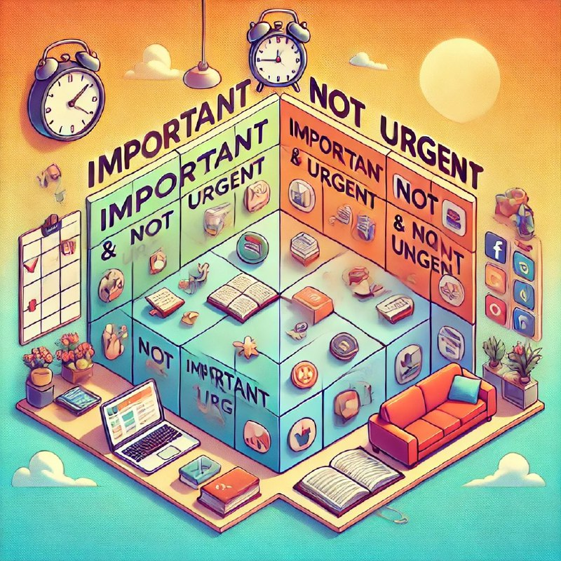
Самарали вақт бошқаруви сирлари
Эйзенхауэр матрицаси — бу вақт ва вазифаларни самарали бошқаришнинг энг кучли услубларидан бири ҳисобланади. Унинг моҳияти вазифаларни икки муҳим мезон: аҳамиятлилик (муҳимлик) ва…
Жамиятда турли фикрларга тоқатли бўлиш, уларни ҳурмат қилиш ва турли қарашларга очиқ…
Жамиятда турли фикрларга тоқатли бўлиш, уларни ҳурмат қилиш ва турли қарашларга очиқ бўлиш жамиятнинг тараққиёти ва инновацияларнинг ривожланиши учун асосий пойдевор ҳисобланади…
Бир шогирд бор экан. У ҳар доим катта бойликка эришишни, катта пул тасарруф этишни…
Бир шогирд бор экан. У ҳар доим катта бойликка эришишни, катта пул тасарруф этишни, қўлига кўп пул тушишини орзу қилар экан. Унинг устози, доно ва тажрибали инсон, шогирдининг бу…
Бахтли бўлиш, сизга аниқ айтишим мумкин, жуда осон. Бахт — бу узоқдаги ёки эришиб…
Бахтли бўлиш, сизга аниқ айтишим мумкин, жуда осон. Бахт — бу узоқдаги ёки эришиб бўлмайдиган нарса эмас. У сизга яқин, фақат уни кўра билиш керак. Ва унинг калити — қўлингизда…
Қонунлар инсонлар ўртасидаги муносабатларни тартибга солади, ҳуқуқлар ва мажбуриятларни…
Қонунлар инсонлар ўртасидаги муносабатларни тартибга солади, ҳуқуқлар ва мажбуриятларни белгилайди, адолатни таъминлайди. Уларнинг мавжудлиги жамиятда тинчлик ва барқарорликни…
Ҳар қандай катта ютуқнинг бошланиш нуқтаси — бу ният. Хоҳишингиз кучли бўлса, у сизнинг…
Ҳар қандай катта ютуқнинг бошланиш нуқтаси — бу ният. Хоҳишингиз кучли бўлса, у сизнинг йўлингиздаги барча тўсиқларни енгиб ўтишига ёрдам беради. Эсда тутинг: заиф ниятлар заиф…
Мен бола бўлганимда, қирқ беш ёшли одамлар менга қариялардек туюларди. Ҳозир эса йиллар…
Мен бола бўлганимда, қирқ беш ёшли одамлар менга қариялардек туюларди. Ҳозир эса йиллар оғирлигини сезмайман, лекин юзимда ажинларни кўраман. Жуда кўп кулган эканман! Руҳан эса…
Сукут гапиради
Баъзан сўзламаслик ҳам хато тушунишга сабаб бўлади. Инсон сўзсиз қолганида, унинг сукутида турли маънолар излашади. Аммо сукут бу доимо розилик ёки рад этиш эмас, балки фақатгина…
Ҳаётнинг ҳақиқати шуки, барчамиз бир кун келиб кетамиз. Буни англаш инсонни бир-бирига…
Ҳаётнинг ҳақиқати шуки, барчамиз бир кун келиб кетамиз. Буни англаш инсонни бир-бирига яқинлаштириши, меҳр-муҳаббат улашишига сабаб бўлиши керак. Лекин, афсуски, қўрқув ва…
Масъулият ва мувозанат мулоҳазаси
Ҳаёт — бу доимий алоқалар ва масъулиятлар тизими. Ҳар бир оила ёки жамоатда кимдир “боқувчи” бўлади — молиявий жиҳатдан бошқаларни таъминлайдиган манбаа бўлади. Аммо унинг…
Узлуксиз янги ҳаёт
Ҳаёт — бу доимий янгиланиш жараёни. Ҳар куни, ҳар соатда дунёда янги ҳаёт пайдо бўлади. Қўйлар ўз қўзиларини туғади, дарахтлар янги барглар чиқаради, ёмғирдан кейин ердан яшил…

Ҳар бир қоронғуликдан сўнг нур бор
Кеча бир дўстим мендан савол берди: — Агар одам ўзини руҳий бўшлиқда ҳис қилаётган бўлса, унга қандай маслаҳат берар эдинг? Мен бироз ўйлаб жавоб бердим: — Ушбу ҳолатни тўлиқ ҳис…
Коррупция, ҳар қанча ёмон деб ҳисобланса-да, мамлакатнинг иқтисодий ривожланишига таъсир…
Коррупция, ҳар қанча ёмон деб ҳисобланса-да, мамлакатнинг иқтисодий ривожланишига таъсир этувчи ягона омил эмас. Иқтисодий жиҳатдан муваффақиятли бўлган мамлакатларда ҳам…
Бир куни бир устоз рассом ўз шогирдига шундай деди:
— Сен яхши ишлайсан, лекин доимо мендан кўчираяпсан. Ўзингнинг услубингни яратмасдан, ўзингни такрорланмас қилолмайсан. Нима учун буни қилмаяпсан? Шогирд ўйланиб, шундай жавоб…

Солиҳ ва солиҳа инсонлар — қалблари яхшиликка тўла мўминлардир. Улар нафақат яхши…
Солиҳ ва солиҳа инсонлар — қалблари яхшиликка тўла мўминлардир. Улар нафақат яхши гапиришни, балки айтилганларни тинглашни, тушунишни ва амал қилишни билишади. Солиҳлик — улуғ…

Тасаввур қилинг, бир аёл бор. У ҳаётининг ҳар кунини оиласи учун бахш этади. Эрталаб…
Тасаввур қилинг, бир аёл бор. У ҳаётининг ҳар кунини оиласи учун бахш этади. Эрталаб фарзандлар билан бирга барвақт туриб, нонушта тайёрлайди, кун бўйи чарчаб ишлайди, кечқурун…
Инсонларга ҳар доим ҳам маслаҳат керак эмас. Улар айрим ҳолларда қўллаб-қувватлайдиган…
Инсонларга ҳар доим ҳам маслаҳат керак эмас. Улар айрим ҳолларда қўллаб-қувватлайдиган қўлга муҳтож бўлишади. Баъзан уларни тинглайдиган қулоқ ва дардини тушунадиган қалб етарли…
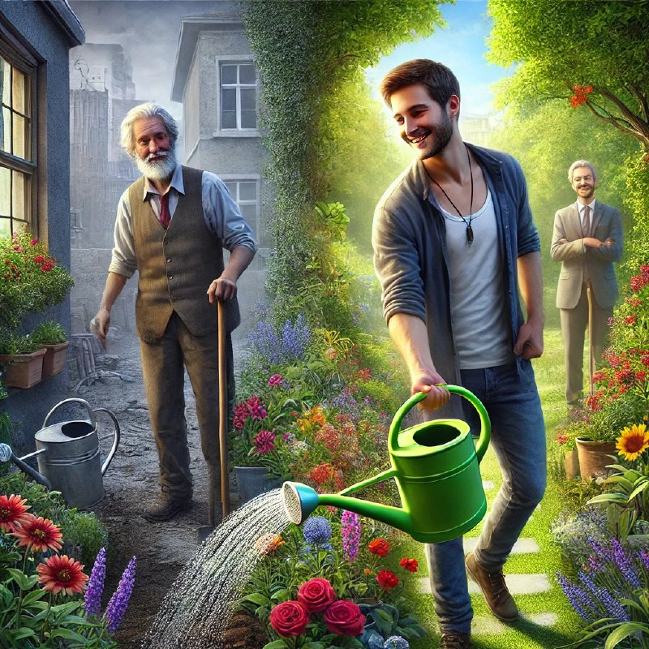
Бир ёш йигит бор эди. У доим ўзидаги нарсаларни қадрламаган ва бошқаларнинг ҳаётини орзу…
Бир ёш йигит бор эди. У доим ўзидаги нарсаларни қадрламаган ва бошқаларнинг ҳаётини орзу қилган. Унинг кўзига, бошқаларнинг ҳаёти гўзал, бахтли ва муваффақиятли кўринарди. “Нега…
Муҳаббат, сиз ҳар ерда қидираётган севги, аслида сизнинг ичингизда аллақачон мавжуд. У…
Муҳаббат, сиз ҳар ерда қидираётган севги, аслида сизнинг ичингизда аллақачон мавжуд. У сизнинг қалбингизда яшайди, фақат уни ҳис қилишни ўрганиш керак. Бизнинг ҳаётимиздаги бахт…
Ҳаётда кутилмаган ишоралар ва далдалар инсоннинг бутун йўналишини ўзгартириши мумкин…
Ҳаётда кутилмаган ишоралар ва далдалар инсоннинг бутун йўналишини ўзгартириши мумкин. Баъзан бизга тушунарсиз ёки оғир туюлган ҳолатлар аслида янги имкониятларнинг эшигини очади…

“Дунёни ўзгартиришни ётган ўрнингни тўғрилашдан бошланг!”— бу иборада чуқур ҳаётий ҳикмат ётади.
Катта ўзгаришлар ва ислоҳотларга интилишдан аввал, инсон аввало ўзидан бошлаши, шахсий тартиби ва атроф-муҳитини яхшилаши лозим. Биз дунёдаги муаммоларни ҳал қилишга шошилишдан…
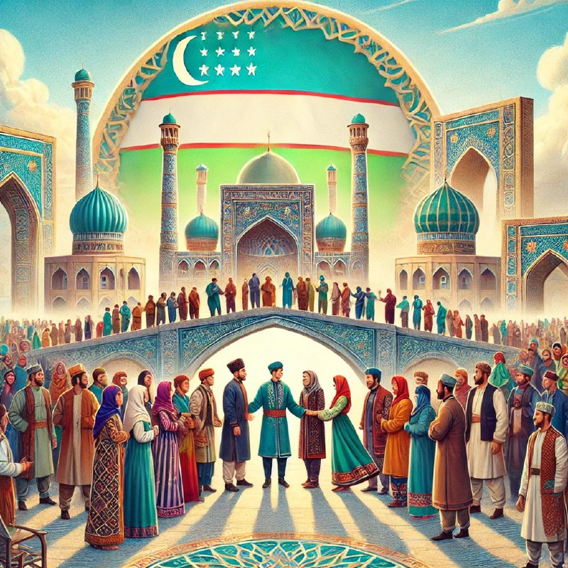
Ўзбек тилини ривожлантириш бугунги кунда миллатимиз учун муҳим масалалардан биридир…
Ўзбек тилини ривожлантириш бугунги кунда миллатимиз учун муҳим масалалардан биридир. Миллий тил ҳар бир миллатнинг ўзлигини сақлаб қолиш ва уни ривожлантиришда асосий восита…
Бизни асабийлаштирадиган зарарли одатлар
• Биз ўз вақтида очликни қондирмаймиз Нима қилиш керак: икки соат интервал билан эслатма қўйинг. Сигнал янграганда, ўзингизга қулоқ солинг — қанчалик очсиз ва овқатланиш вақти…
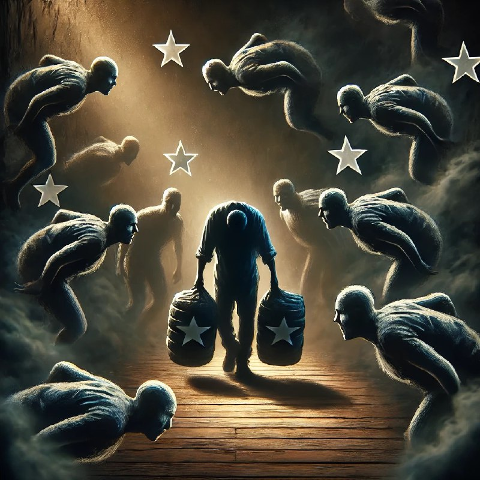
Ҳаётда ҳеч қачон мақсадларни кимгадир ниманидир исботлаш ёки кимгадир “кўрсатиб қўйиш”…
Ҳаётда ҳеч қачон мақсадларни кимгадир ниманидир исботлаш ёки кимгадир “кўрсатиб қўйиш” учун қўймаслик керак. Бундай мақсадлар инсонни чарчатиб, руҳан ҳалокатга олиб келади…
Замонлар ўзгариши, эътиборнинг ўзаро кўчиши, кучлар мувозанатининг алмашиниши ва…
Замонлар ўзгариши, эътиборнинг ўзаро кўчиши, кучлар мувозанатининг алмашиниши ва ресурслар қийматининг ўзгариши — тарих давомида доимий жараён бўлган. Ҳар бир даврнинг ўзига хос…
Инсон доим Яратганни излаб яшайди, унга яқинлашишни истайди, баъзида беихтиёр уни топишга ошиқади.
Худони топиш инсон ўзини чуқур англаши, тушуниши, ўзини топиши билан намоён этилади. Ўзини тушуниш деганда инсон табиатан жисмоний ва руҳий шаклга эга эканлигини инобатга олсак…
Меҳр ва эътиборга тўйиб ўсган болалар — катта ҳаётда муҳаббатни нафақат ҳис қилиш, балки…
Меҳр ва эътиборга тўйиб ўсган болалар — катта ҳаётда муҳаббатни нафақат ҳис қилиш, балки уни атрофдагиларга теранлик билан етказиш қобилиятига эга бўладиган инсонлардир…
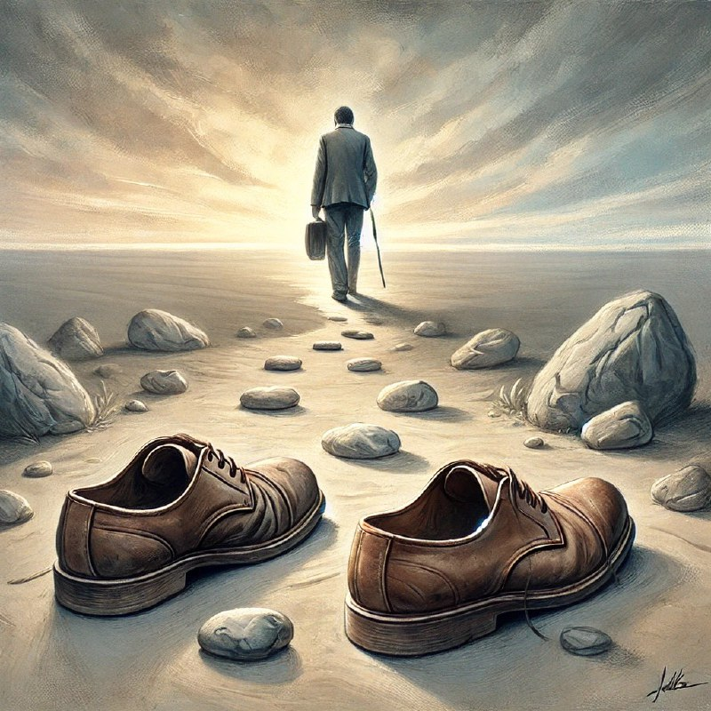
Бошқаларни танқид қилишдан аввал унинг пойабзалини кийиб, унинг йўлини босиб ўтинг. Унинг…
Бошқаларни танқид қилишдан аввал унинг пойабзалини кийиб, унинг йўлини босиб ўтинг. Унинг оғриқларини ҳис қилинг. У дуч келган ҳар бир тошга қоқилинг, ҳар бир қийинчиликни енгиш…
Кометалар, сайёралар ва бошқа осмон жисмлари — Ердан фақат маълум вақтда кузатилиши мумкин бўлган сирли ва маҳобатли жисмлардир.
Улар ўз орбиталари бўйлаб ҳаракатланиб, вақт-вақти билан бизнинг наздимизда пайдо бўлади. Шу бир лаҳзали пайдо бўлиш — уларнинг “юлдузли соати” бўлиб, бу вақтда уларнинг нури…

Кузнинг совуқ кечасида шаҳар боғида бир одам хаёлларга чўмган ҳолда ўтирган эди. Унинг…
Кузнинг совуқ кечасида шаҳар боғида бир одам хаёлларга чўмган ҳолда ўтирган эди. Унинг ҳаёти қийинчиликларга тўла эди: ишини йўқотган, қарзлар кўп, умидлари сўнган ва оғир…
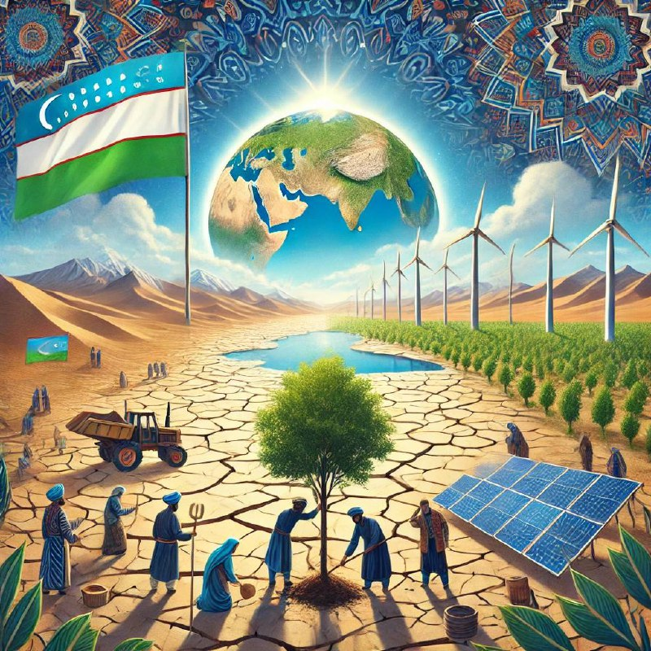
Ўзбекистонда глобал иқлим ўзгариши катта экологик муаммоларни келтириб чиқармоқда. Аномал…
Ўзбекистонда глобал иқлим ўзгариши катта экологик муаммоларни келтириб чиқармоқда. Аномал иссиқлик ва сув танқислиги қишлоқ хўжалигига салбий таъсир қилиб, озиқ-овқат…
Жисмоний гўзаллик – нафақат инсонларга, балки ҳайвонларга ҳам хос. Балки, уларнинг…
Жисмоний гўзаллик – нафақат инсонларга, балки ҳайвонларга ҳам хос. Балки, уларнинг гўзаллиги баъзи ҳолларда инсон гўзаллигидан ҳам аъло бўлиши мумкин. Инсон қалбидаги бойлик ва…
Пессимист шамолдан нолийди, оптимист ҳаво ўзгаришидан умид қилади, реалист эса елканларни тиклайди.
Бу ибора ҳаётдаги ҳар қандай қийинчиликка ёндашувни тасвирлайди. Ҳар бир вазиятда пессимистлар тўсиқларни кўради, оптимистлар умид билан кутади, аммо реалистлар ишга киришиб…
Баъзи одамлар қанча пул топмасин, ҳеч қачон етарлича ҳаёт кечира олмайди. Бошқалар эса…
Баъзи одамлар қанча пул топмасин, ҳеч қачон етарлича ҳаёт кечира олмайди. Бошқалар эса қанча қаттиқ молиявий қийинчиликларга дуч келмасин, улар барибир бир кун келиб фаровон…
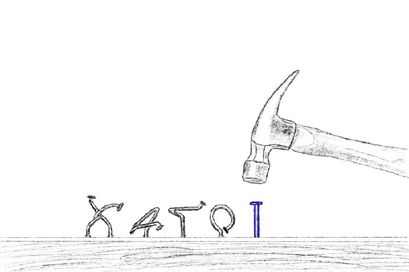
Ҳар бир инсон ҳаётида яхши ва ёмон кунларни бошдан кечиради. Баъзида ютуқларга эришасиз…
Ҳар бир инсон ҳаётида яхши ва ёмон кунларни бошдан кечиради. Баъзида ютуқларга эришасиз, баъзида эса мағлубиятни тан олишга тўғри келади. Қайси йўлни танлаш кераклигини тушуниш…
Бугунги кунда дунёмиз ақлли смартфонлар ва турли технологиялар билан тўлиб кетмоқда, аммо…
Бугунги кунда дунёмиз ақлли смартфонлар ва турли технологиялар билан тўлиб кетмоқда, аммо инсонлар шунга яраша ақлли ва билимдон бўлмай қолишмоқда. Бунга кўпинча шундай мисол…
Инсон ўз табиати ва характерини ўзгартириш қобилиятига эга. Унинг энг катта кучларидан…
Инсон ўз табиати ва характерини ўзгартириш қобилиятига эга. Унинг энг катта кучларидан бири — ўзини янгидан яратиш ва шахс сифатида ривожланиш қобилиятидир. Бироқ кўплаб одамлар…
Биз дунёнинг қандай бўлишини кўришда, кўпинча, ташқи ҳолатлардан кўра ўз ички дунёмизга…
Биз дунёнинг қандай бўлишини кўришда, кўпинча, ташқи ҳолатлардан кўра ўз ички дунёмизга боғлиқ бўламиз. Агар инсон ичида қувонч ва ижобий фикрларга эга бўлса, у атрофидаги…
Инсонларга яхшилик қилаётганда бир жиҳатга эътибор қилиш зарур. Фойдали бўлиш ва фойдаланиб олиниш ўртасидаги чегара жуда нозик.
Шунга эътиборли бўлиш зарурки, сиздан фойдаланибгина қониқмай, давомида маломатга ҳам қўйишга сурбетлик топадилар! Қўшимчасига зоҳидлик, тақво ва обидлик даъволари ҳам мавжудлиги…

Рустам Қосимжонов – шахмат дунёсидаги юлдузлардан бири бўлиб, унинг ютуқлари мусулмон…
Рустам Қосимжонов – шахмат дунёсидаги юлдузлардан бири бўлиб, унинг ютуқлари мусулмон оламида янги тарих яратди. У 2004 йили Ливияда ўтказилган ФИДЕ жаҳон чемпионатида ғалаба…
Ҳеч қачон тушкунликка тушманг. Ҳар қандай вазиятдан тўғри йўл топиш мумкин, агарда сиз…
Ҳеч қачон тушкунликка тушманг. Ҳар қандай вазиятдан тўғри йўл топиш мумкин, агарда сиз вазиятни синчиклаб таҳлил қилишни бошласангиз. Инсон тушкунликка берилса, у ақл билан…
Бир неча йил олдин мен катта халқаро йиғилишга бордим. У ерда ўзимни ноқулай ҳис қилдим…
Бир неча йил олдин мен катта халқаро йиғилишга бордим. У ерда ўзимни ноқулай ҳис қилдим, чунки ҳамма мендан кўра тажрибали ва билимлидек кўринаётганди. Жуда ҳаяжонландим ва ўзимни…
Сиз денгиздан томчи эмассиз, балки томчи ичидаги уммонсиз!
Қанот билан туғилиб, нега ҳаёт йўлида эмаклашни танлайсиз? Ярим нафаслик дунёда муҳаббатдан бошқасини режа қилманг! Сиз излаётган нарса, сизни ҳам излаяпти. Гўзал кунлар сенга…
Бугунги кунда кўпчилик ўз ҳаётини эртага, кейинги кунларга тўпламоқда, аммо “вақт йўқ”…
Бугунги кунда кўпчилик ўз ҳаётини эртага, кейинги кунларга тўпламоқда, аммо “вақт йўқ” деган тушунча ҳар биримиз учун аҳамиятли, чунки биз жонли дамларимизни ўтказиб юборяпмиз…
Сут бузилса ёгурт (қатиқ) бўлади, у сутдан қимматроқ. Яна бузилса пишлоқ бўлади. Пишлоқ ундан-да қимматроқ ва уни сақлаш муддати кўпроқ.
Узум суви ачиса сирка бўлади, сирка узумдан қимматлироқ. Ва у вақт ўтгач сари янада қийматлироқ бўлади. Хато қилсангиз, сиз ёмон одам ҳисобланмайсиз. Хатолар сизни шахс сифатида…
Қуйидаги қизиқ бўлган, инсонни фикрлашга ундайдиган саволларга жавоб олишни истармидингиз?
Нима учун замонавий технологиялар бир вақтнинг ўзида 100 йил давомида ахлатда парчаланмайдиган темир ичимлик банкаларини ва 3-4 йилда чириб кетадиган автомобиль кузовларини ишлаб…
Муносабатлар аҳамияти
Инсонлар билан муносабатлар ҳаётимизда энг муҳим нарсалардан биридир. Бу фақат севги муносабатлари билангина чекланиб қолмайди. Ота-она, ака-ука ва опа-сингиллар, дўстлар…
Муҳаббат - ер юзидаги ягона кучки, уни улашганимизда кўпаяди.
Муҳаббатни аяманг, нафақат яқинларингизга, балки барчага - илиқ сўз қалбда муҳрланади, инсонга ўзига ва қудратига ишонч бахш этади - одамларга мулойим сўзлар ёрдамида мурожаат…
Аслида ҳақиқий тадбиркорда пул маблағлари бўлмайди. Унда актив маблағлари ва қарзлари…
Аслида ҳақиқий тадбиркорда пул маблағлари бўлмайди. Унда актив маблағлари ва қарзлари бор. Унда активлар ва қарзлар ўртасида ижобий сальдо бўлиши керак. Катта пул сақлаб ўтирган…
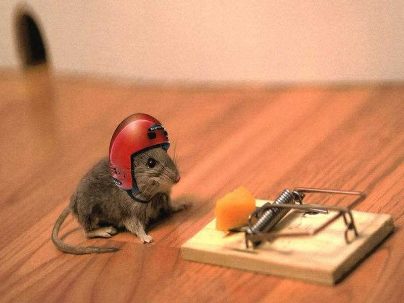
Кунларнинг бирида сичқон фермер хўжайин қопқон қўйганини сезиб қолди. У бу ҳақда товуқ…
Кунларнинг бирида сичқон фермер хўжайин қопқон қўйганини сезиб қолди. У бу ҳақда товуқ, қўй ва сигирга хабар берди. Аммо уларнинг барчаси шундай жавоб қайтаришди: "Сичқон қопқони…
Бойликнинг кўринмас томони
Ҳар куни биз Instagram ёки YouTube кузатамиз, у ерда Дубай осмонўпар бинолари ёки Малдив оролларининг оппоқ қумлари фонида бизга миллиардлар ҳақида енгил усулда гапиришади. Ва…
БАХТЛИ БЎЛИШГА ЁРДАМ БЕРАДИГАН ҚОИДАЛАР!
1. Кўзгу қоидаси. Атрофимдаги одамлар менинг кўзгумдир. Улар кўпинча ўзим англамаган шахсий хусусиятларимни акс эттиради. Масалан, кимдир менга қўполлик қилса, демак, мен бунга…
Ғазаб пайтида ҳеч нарса деманг. Умуман, гапира олишингизни унутиб қўйинг. Вақт ўтиб…
Ғазаб пайтида ҳеч нарса деманг. Умуман, гапира олишингизни унутиб қўйинг. Вақт ўтиб, ўзингизни босиб олгунингизча сабр қилинг. Вазиятни пухта ўйлаб кўринг ва хотиржам ҳолатда…
Қушларнинг бошимиз устидан учиб ўтишига тўсқинлик қила олмасак-да, уларнинг бошимизга қўнишига ва у ерда ин қуришига йўл қўймаймиз.
Худди шунингдек, баъзида ёмон ўйларнинг хаёлимизга келишини тўхтатиб қололмасак-да, уларнинг онгимизда ўрнашиб қолишига йўл қўймаслигимиз лозим. Инсонларга келсак, бизнинг…
Бир камбағал эркакнинг хотини ёғ тайёрлар, эри эса уни маҳаллий баққолга сотарди. Аёл…
Бир камбағал эркакнинг хотини ёғ тайёрлар, эри эса уни маҳаллий баққолга сотарди. Аёл ёққа бир килограмм оғирликдаги доира шаклини берарди. Бундан келган даромад оилага яхшигина…
Бахтли одамлардан сизга бахтдан бошқа ҳеч нарса ўтмайди...
Ҳаётий тажрибага бой инсондан - фақат донолик, тушуниш ва қўллаб-қувватлаш... Ғазабланган, ўзини рўёбга чиқара олмаган, ўз ҳаётида сусткаш бўлганлардан доимо келадиган нарса…
Бизни асабийлаштирадиган зарарли одатлар
• Очликни ўз вақтида қондирмаслик Нима қилиш мумкин: ҳар икки соатда эслатма қўйишни синаб кўринг. Сигнал чалинганда, ўзингизга қулоқ солинг - қанчалик оч эканлигингизни ва…

Нима учун яқинларимиз кексайганда шунчалик чидаб бўлмас бўлиб қолишади?
Улар бизни энг кўп оғритишади, барча заиф нуқталаримизни билиб, ўша жойларга аниқ зарба беришади. Баъзида эса бизнинг азобланишимизни жуда аниқлик билан кузатиб туришади. - Бу…

Агар инсон озишни истаса, табиат унга бунинг учун вақт, онглилик ва ҳаракат зарурлигини…
Агар инсон озишни истаса, табиат унга бунинг учун вақт, онглилик ва ҳаракат зарурлигини билдиради. Бироқ, у буни тезда, имкон қадар ҳозироқ амалга оширмоқчи бўлса, замонавий…
Денгизни узоқ вақт кузатсангиз, одамларни соғина бошлайсиз. Одамларни узоқ вақт кузатсангиз эса - денгизни қўмсайсиз.
Мукаммал тақдирли одамлар бўлмайди. Барча инсонлар чексиз даражада номукаммалдир. Назаримда, бизнинг мукаммалликдан йироқ ҳаётимизда озгина бўлса-да, бефойда нарсалар бўлиши…
Метрода кетаётиб, телефонида қулоқчинлар орқали мусиқа эшитиб кетаётган болакай ёнига бир…
Метрода кетаётиб, телефонида қулоқчинлар орқали мусиқа эшитиб кетаётган болакай ёнига бир кампир ўтирди. Хушмуомалалик билан телефонни ўчиришини сўради, унинг юрак стимулятори…
Кимгадир нимадир исботлашга уринаётган пайтингизда, тўхтаб ўйлаб кўринг.
Балким сиз у одамни эмас, ўзингизни ишонтиришга ҳаракат қилаётгандирсиз. Аслида, инсон кимгадир бирор нарсани исботламоқчи бўлса, у ички ишончдан маҳрум бўлган бўлади. Исбот - бу…
Мустақиллик ҳар бир давлат учун энг олий қадриятдир.
Мамлакат фуқаролари учун эса юртдаги тинч ҳаёт ва жамиятдаги барқарорлик мустақилликнинг асосий бойлигига айланади. Бирдамлик ва фидокорона меҳнат туфайли жаҳон тарихида жамият…
Бошқарув амалиётидан инсайдлар
Нега ички ходимлар ўсмайди? Ҳар доим ҳам четдан мутахассис ишчи олиб келиш керакми? Компанияга янги ходим келганда, биз доимо қуйидаги қадамларни амалга оширамиз: - У ким билан…
Мен бутун умр мўъжизаларга ишониб келаман. Улар чиндан ҳам содир бўладими ёки шунчаки…
Мен бутун умр мўъжизаларга ишониб келаман. Улар чиндан ҳам содир бўладими ёки шунчаки ишонч туфайли шундай туюладими, билмайман. Аммо назаримда, ишончнинг моҳияти айнан шунда…

"Бу менинг телефоним экранидаги сурат. Ўзимга тез-тез: “Биз буни уддаладик, кичкинтойим” - деб далда бераман."
(Энтони Хопкинс, 84 ёш) Энтони Хопкинс доимо телефонида ўзининг болалик суратини сақлайди. Агар бирор нарса ёмонлашса, ўзини койиш ўрнига, у шу суратни топади-да, ундаги ёш болага…
Биринчи бўлиб ёзишни хоҳласангиз, шундай қилинг.
Кетма-кет икки марта ёзмоқчимисиз? Қани, марҳамат. Кимдир сизга ёқса, буни айтинг. Миннатдормисиз, изҳор этинг буни дарҳол. Кўнглингизга келдими, очиқ дуо қилинг. Агар кимдир…
Фақат қалб ҳеч қачон адашмайди.
Илгари мен инсон билан дўстона, севги, муҳаббат ёки ишбилармонлик муносабатларига киришиш учун уни яхши билиш керак, деб ўйлардим. Унинг қадриятларини аниқлаш, маълум бир тоифага…
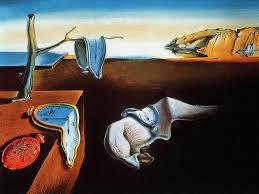
Вақт қаёққа ғойиб бўлмоқда?
Замонавий инсоннинг барча ҳаракатлари вақтни тежашга қаратилгандек кўринади. Шу мақсадда электр устара ва эскалаторлар яратилади; шу сабабли тезкор самолётларда парвоз қиламиз…
Кун маслаҳати
Спорт билан шуғулланинг (жуда бўлмаса пиёда юринг) Чиройли ва равон гапириш маҳоратини ўстиринг (ширин сўз бўлинг, сўкманг) Асабийлашманг. Китоб ўқинг. (Ҳисларингизни жиловда…
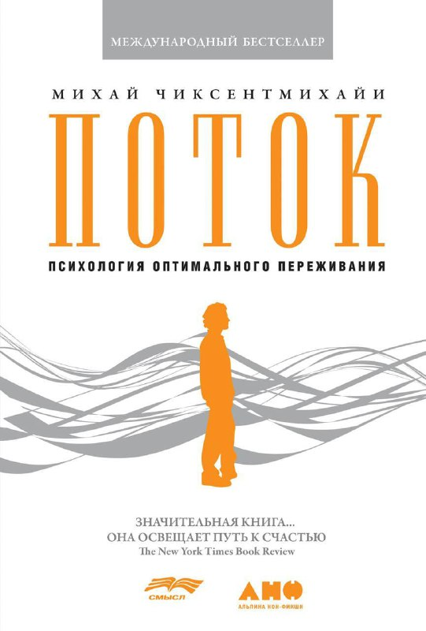
Поток (Оқим)
Муаллиф: Михай Чиксентмихайи Сана: 2019 йил 24-апрель Жами: 256 бет Ўзининг машҳур китобида таниқли олим Михай Чиксентмихайи бахт мавзусига бутунлай янгича ёндашувни тақдим этади…

Ҳозирги товар ва хизматлар бозоридаги ҳолатни инқироз деса бўладими?
Статистик маълумотларга таянадиган бўлсак, деярли барча бизнес соҳаларида ўсиш бор. Бу маълумотларга таянадиган бўлсак, бу ҳолатни инқироз дейиш қийин. Ундан ташқари…

Қозоғистонлик киноижод соҳаси вакиллари дунё миқёсида катта шуҳрат қозониб келмоқда.
НТК жамоаси ижод гуруҳига мансуб бўлган "Мошенники"(Фирибгарлар) номли Ижтимоий сериалга кўзим тушиб қолди. Сериалда қатнашган актёр, режиссёр ва бошқа ижодкорларнинг моҳирона…
Муваффақиятни кафолатлайдиган мулоқот усули
Истеъмолчиларнинг ўзлари билан умумий манфаатларни бўлишадиган инсонлар ёки гуруҳларга боғланиб қолишга моил эканлигини биласизми? Албатта билсангиз керак. Бунинг устига, бу ҳол…
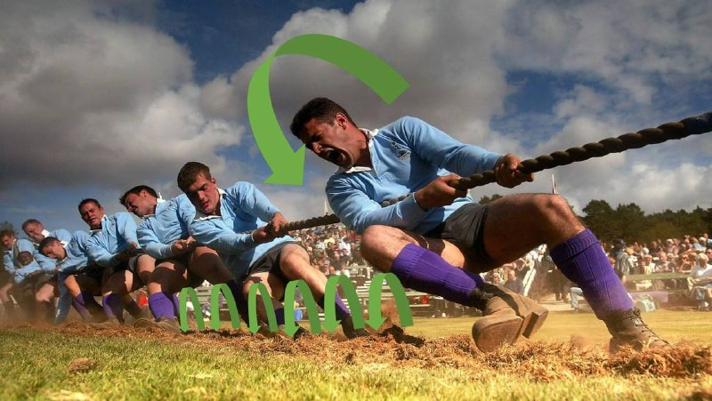
Иқтисодий ҳолат ибрати ва кузатувлар
Хозирда жамиятимизда иқтисодий пассивлик ва сотиб олиш қобилияти кескин тушиши кузатиляпди. Бу ҳолатда ҳар бир қатлам азият чекяпди. Лекин энг баландроқ йирик тадбиркорлик…
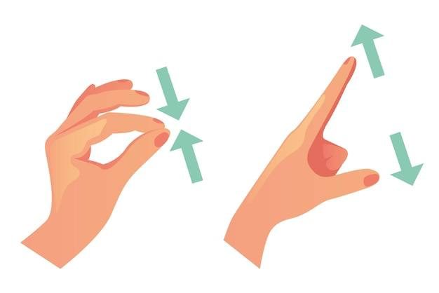
Ҳаёт давомида менга қарши чиққан инсонлар кўп бўлган.
Уларни кўпинча маломат қилардим, тан олмасдим, эшитмасдим ва курашар эдим. Ҳозирда тушуниб етдим-ки, улар менинг ўсишимга хизмат қилишди. Қаршилик ўсаётган инсонга дуч келар экан…
Покланиш - Таҳорат намознинг калити бўлгани билан бир қаторда, бу калитни қуйидаги эшикларга ишлатиш кенг баракага сабаб бўлиши мумкин:
- илм эшигини очишда, - таомланишда, - уйдан чиқаётганда, - инсонлар билан бўлган муомалада, - иш фаолиятига киришишда, - ризқ талаб этишда, - ота-онанинг ва устозларнинг…
Бугунги саломатлик - замонавий турмуш тарзи билан курашдир!
Ҳаво, сув, озиқ-овқат саноати, сунъий шакар ва ширинликлар, яримтайёр таомлар, эмульгаторлар, маза кучайтиргичлар, дори-дармон, қулайликлар, транспорт ва техника ривожи. Буларнинг…
Хитой халқ республикаси 6- раиси Ху Цзиньтао 2006 йил 4-март куни Хитой фуқаросининг ахлоқий принципларини эълон қилган.
🇨🇳 Ватанни севинг; унга зарар етказманг. 🇨🇳 Инсонларга хизмат қилинг, уларга ҳеч қачон хиёнат қилманг. 🇨🇳 Илмга амал қилинг; жоҳилликни улоқтиринг. 🇨🇳 Меҳнаткаш бўлинг, дангаса…
Табиат - саломатдир!
Инсоннинг соғлом бўлиши табиий, чунки биз инсонлар табиатнинг бир қисмимиз. Табиат бизни яхши жисмоний ҳолатда сақлашга бор кучи билан ҳаракат қилади, чунки у ўз мақсадлари учун…

Ҳаёт тарзингизни бойларга эмас, илм аҳлига солиштиринг!
Нима сотиб олсам экан, нима кийиб нима есам экан эмас, балки қайси илмни эгалласам экан, қайси китобни ўқиб, қайси чет тилини ўрганмасам экан деб интилинг! Арзон машҳурлик доимо…
Аҳмоқлар, муттаҳамлар, бетартиб, тарбиясиз, бефаҳм ва бефаросатлар бўлмаган жамиятда яшашни исташимиз табиий!
Аммо!!! Ундай бўлса қаердан аниқлаймиз - биз улар тоифасига кирмаслигимизни? Ким билан солиштирамиз? Жамиятда ҳамма тоифа керак!!! Барчани бирдек тарбия қилиб бўлмайди! Инсон…
Ҳақиқат кўзни ўяди!
Ҳақиқатгўй бўлсангиз инсонлар сиздан узоқлашади, чунки улар рост ва ҳақдан қўрқадилар, уни четлаб яшашга ҳаракат қиладилар! Ўзларига ҳаёт иллюзиясини ясаб олиб ўшанинг ичида…
Жамият кўзидаги афзалликлар:
🟢Сўнгги русумдаги iPhone; 🟢$2000+ ойлик маош; 🟢Дубайдан селфи; 🟢Қора ранг “Малибу”; 🟢Зўр ресторанлар; 🟢Ўзини олиброқ туриш. Асл афзалликлар: ✅Қарздан холи бўлиш; ✅Молиявий…
Қалайсиз?
- Зўр! Менга тегишли қоидаларнинг ўзимга қулайини танлаб яшаяпман. - Лоақал танлаган қоидаларингизга содиқмисиз? - Баъзида жойига қараб унга ҳам амал қилмай қўявераман: рўйхатим…
Бадавлат қиз,
Камбағал ўғил! /Хитой халқ мақоли/ Ўғилни тўқчилик, Қизни йўқчилик бузади! /Ўзбек халқ мақоли/ Қизига кўзи очилмасин деб, - телефон, планшет ва бошқа - афзаллик, деб ҳисоблайдиган…
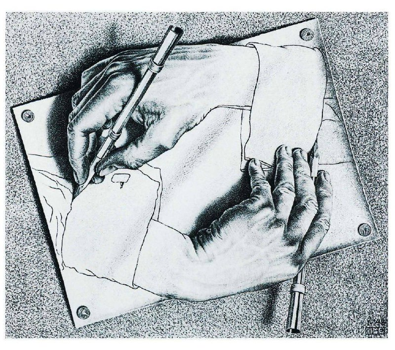
Инсон жисми - истеъмол қилаётган озик-овқати ва ичаётган суюқликлардан шакилланади.
💟Инсон руҳи - ўқиётган китоблари, кўраётган фильмлари, вақтини бирга ўтказаётган одамлар, иймон-эътиқоди ва жалб этилаётган суҳбатлардан ташкил топади. Жисмингизни ва руҳингизни…
Қачон яхши бўлади?
-Яхши бўлиб ўтдику аллақачон! -Қандай? Қачон? Ман бир ўзим қуруқ колдимми яхшидан? -Бир йил аввал эсингдами? Ҳамма шикоят қилиб юрганди, ҳаммаси ёмон деб. Ушанда айнан ҳаммаси…
Инсон хозири билан баҳоланади ва бугуни билан яшайди.
Нима билан хозир машғул, кимлар уни атрофини ўраб турибди, кимлар билан муносабатда, қаерга кетаяпти? ➕Инсон аввал авлиё бўлган бўлса ҳам хозирда беамал бўлиб илм ва тоатдан йироқ…
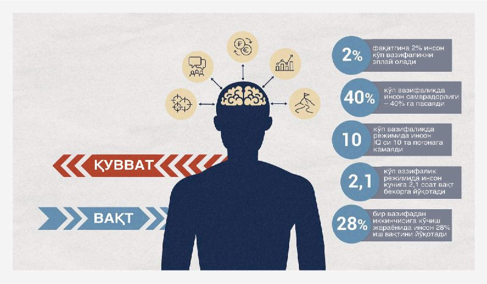
Кўп вазифалилик
(Многозадачность) Бир вақтни ўзида бир неча ишни бажариш ёки бизнесда бирданига бир неча лоиҳани юритиш эътиборни тарқоқалишига олиб келади. Кўп вазифани бир вақтда бажариш…
Одобни беодобдан ўрган…
Бу хикматни биз жуда чеклаб тушунамиз. Беодобни қилганларини қайтармаслик билан бу хикмат бисотини чеклаймиз. Агар шу беодоб қай бир жабхада муваффақият қозонган бўлса, буни…

Asaxiy.uz жамоасидан навбатдаги янгилик
АҚШлик миллиардер, тадбиркор, кўчмас мулк бозори ёрқин намоёндаси - Grant Cardone нинг «SELL or be SOLD» - «Савдо санъати» асарининг ўзбек тилига таржимаси. Тадбиркорлари учун…
Қиммат беҳикмат бўлмас,
Арзон беиллат бўлмас! Бу вақт давомида синалган хикматни жамиятимиз кўпинча муомалат жойларида амал этишимиз сустлашиб кетган, мубтало бўлганмиз деса ҳам муболаға бўлмайди. Арзон…
“Инсон ҳаётида ҳамма нарсани қилиб кўриши керак”, - деган ибора хозирда машхур!
“Ҳамма нарса” деганда одатда кўпинча - ҳар балони чакиб кўриш, қиммат улов олиш, кинода чиқиш, машхур бўлиш, паршютдан сакраш. Камдан кам холатларда эса - баланд тоғларни забт…
Маълумотлар осмонидаги парвоз
💬💬💬 Биз маълумот жуда тез алмашиниш замонида яшамоқдамиз, бу тезлик яна ҳам тезлашаяпди ва бундан буёғига бунданда сифатли ва жадал кўриниш олиши тайин бўлиб турибди. Бундай…
Кўп йўқотишлар бошимдан кечирганман, муваффақиятли ва қулай ҳаётимни неча бор ўзим тарк…
Кўп йўқотишлар бошимдан кечирганман, муваффақиятли ва қулай ҳаётимни неча бор ўзим тарк этганман, мен учун бой бўлиш хеч қачон мақсад бўлмаган, мен бировни қўлига, иродасига ва…
Муаммоларни улар юзага чиқиш тартибида ҳал қилинг.
Ҳамма нарсанинг ўз вақти ва соати бор! Келажакда қандай ва нима қилишингиз ҳақида ташвишланаверманг, фақат ҳозир қилаётган ҳаракатингизга эътибор қаратинг ва уни сифатли бажаринг…
Саёҳатчи чўпондан сўради:
- Эртага об-ҳаво қандай бўлади? Чўпон жавоб берди: - Менга ёқадиган ҳаво. - Об-ҳаво айнан сизга ёққанидек бўлишини қаердан биласиз? — Ҳар доим сизга ёқадиган нарсани олишнинг…
Ҳар бир инсон муносиб ҳаёт кечириш учун етарли куч ва қувватга эга.
💬💬💬 Замондан ва даврда юз бераётган “қийинчиликлар”дан нолиш бу бир бахонадир, инсон беамаллиги, дангасалиги ва ўз ҳаётига лоқайдлигини оқлашнинг бир усулидир холос! Хеч замонда…
Дунёқарашингизни доимий кенгайтиринг!
💬💬💬 Инсоннинг дунёқарашини ўзгартирадиган асосий омиллар 📖Китоб Яхши китоб - фикрлар уммонидаги ҳамрохингиз, илм ва тафаккур манбайи. Муаллифнинг чексиз ички дунёси билан уйғун…
Катта бўлсанг ким бўласан?
✈️Кичиклигимизда осмонга қараб катта бўлсам учувчи бўламан деб орзу қилиб, ваъдалашдик. Катта бўлдик ва одатий ҳаётимизда давом этяпмиз. Тайёра тугул у-бу кичик ғояни ҳам илгари…
Муваффақият сири:
Хеч қандай сир йўк бу жуда оддий: Одатдагидан кўпроқ натижа олиш учун нормадан кўпроқ ҳаракат қилиш! Етарликдан кўпроқ ҳаракат қилиш! 📈Муваффақият дегани бошқалар эришган одатий…

Тафаккур учун мажозий хикоя!
💬💬💬 Чархчининг хузурига ўлим фариштаси ўз ўроғини чархлатиш учун келибди. Чарҳчи “Насибам битибди экан” дея ваҳимага тушиб, дағ-дағ титрармуш. Буни сезган Азроил: - Қўрқма…
Саховат ва бағрикенглик
💬💬💬 Инсон табиати қизғончиқликка мойил яратилган. Ҳаётда ҳам бирон нарсангизни одамларга берсангиз ўзингизда камайиб қолади. Зоҳиран (по факту) шундай. Аммо, биз кўмак, саховат…

Ҳиммат - ҳаёт давомида орттирилади!
Саховат - ота онадан ўтиши мумкин! ➖➖➖ Ҳиммат нима дегани? Ҳиммат - содиқ ният, қатъий азимат, кучли ирода, аниқ рағбат қилган холда фазилатлар билан безаниш ва разолатлардан…
Бизнесда нима учун биз хато қиламиз, нотўғри ҳаракат қиламиз, пул ва вақт йўқотамиз?
Тадбиркорлик масаласини ечиш учун мияга мурожаат қилганимизда, у қиладиган биринчи нарса уни таркибий қисмларга ажратиш ва бу мавзу бўйича нимани билишини эслаб қолишдир. Бошқача…
Мақсадга етишмаслик сабабини тахлил қиламиз!
Доимо мақсадга эришишни хохлайсизми?!!! Бизнинг чекловчи тўсиқлар аксарияти онг остидан туриб мақсадимизни амалга оширишдан тўғтатади, биз ҳса улар мавжудлигини пайқамаймиз ҳам…

Фарзандингиз мактабга чиқди!
• Ҳар куни мактабдан сўнг уни энг ёқитирмаган саволи кутмоқда… • “-Хўш… Бугун неччи баҳо олдинг?!” • Ёдингизда тутинг! Бу савол ЎҚИШГА энг кам ундайди! • Бунинг ўрнига…
А.Чехов ўз асарларида келтиради:
“Очкўз кучук фақат гўштга иймон келтиради.” Жамиятимизнинг хозирги ривожланиш босқичида кузатилаётган қаноатсизлик (хою-хавас, кўр-кўроналик, кимўзарлик, очкўзлик) оқибати…

Слон-живописец
Слон-живописец написал пейзаж, Но раньше, чем послать его на вернисаж, Он пригласил друзей взглянуть на полотно: Что, если вдруг не удалось оно? Вниманием…
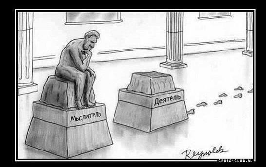
Ҳаёт тезлигини инсон ўзи белгилайди. Кунига битта масалани ечсангиз ҳам кунингиз ўтади…
Ҳаёт тезлигини инсон ўзи белгилайди. Кунига битта масалани ечсангиз ҳам кунингиз ўтади, 10 та масалани 3 та йўналишда бажарсангиз ҳам ўтади ўша кун. Иккинчи ҳолатда…
Сунъий интеллектнинг келажакдаги таҳдидлари
Инсонсимон робот инсоният учун энг ёмон сценарий ҳақида гапирди Лондонда бўлиб ўтган робототехника конференциясида Амека исмли одамсимон роботдан сунъий интеллектнинг инсоният…
Кучли эркакнинг ёнида ақлли аёл шундай даҳшатли жуфтликки, сиз уни динамит билан ҳам синдира олмайсиз.
Бу фикрга қўшилиш учун бизда тарихдан маълум фактлар етарлик. Ҳозирги хақиқатимизда эса бу эффектдан муваффақияти йўлида фойдаланаётганлар қаторини аниқлай олмаслигимиз сабаби…
Ишонч - дунёдаги энг қимматли ва энг нозик нарсадир!
Ишончни инсонлар жуда осонликча пой-мол қилишлари мумкин, уни енгилгина бир зумлик нафга алиштириб юборадилар. Ишончни оқлаш “мушагингиз” ни ривожлантирмас экансиз, сизни бора…
Зерикарли китобни вақтида ёпиш, ёмон фильмдан вақтидан аввал чиқиб кетиш, сизни…
Зерикарли китобни вақтида ёпиш, ёмон фильмдан вақтидан аввал чиқиб кетиш, сизни қадрламайдиган одамлар билан хайрлашиш ғайратига ва қобилиятига эга бўлиш мухим! Тарк қилиш…
Сичқон тешикнинг ёнига келиб, ташқарига чиқайми-йўқми, деб қўрқиб турса, ташқаридан итнинг вовуллагани эшитилибди.
Сичқон "ит вовуллаётган жойда мушук бўлмайди", деб ташқарига чиқса, вовуллаётган мушук экан. Шартта сичқонни ушлаб, еб бўлгач, ўзига ўзи: -"Чет тилини билган оч қолмайди!" - деган…

Ният…
Ният… Банда Аллоҳдан нимаики сўраса мукаммал ихлос, тўлиқ ишонч ва умид билан сўраб ният қилиши зарур. Аллоҳ банданинг қўлини ҳаргиз қуруқ қайтармайди. Ҳатто банданинг қўлини…
Айблашда, хато топишда жуда синчков ва илгаримиз.
Ўзимизни айбимиз бир вагон бўлсада пайқамаймиз. Бировни елкасига қўнган чанг заррасини осон топамиз, лекин кўзимиздаги хода кўринмайди. Текширишга, ковлашга, ғийбат, муҳокама…
1. Сиз агар инсон учун муҳим ва аҳамиятли бўлсангиз, у сизга вақтини ажратади. Акс ҳолда…
1. Сиз агар инсон учун муҳим ва аҳамиятли бўлсангиз, у сизга вақтини ажратади. Акс ҳолда, сиз унинг ҳаётидаги аҳамиятингизни ортиқча баҳолаяпсиз. 2. Бирор кишини билмоқчи…
Шайтонлар кишанланган ойда бизга нима таҳдид этиши мумкин?
Нафс!!! Ҳаёт давомидаги доимий рақибимиз, кўпинча уни измида юриб қўямиз, унга енгиламиз, ва алалоқибат дунёга ружу қўйиб, сиротол мустақим тарафга сафаримиз секинлашади, осон…
Suniy intellect hayotimisga sekin asta kirib kelmoqda.
Amir Temur tavallud topgan kun arafasida 1402-yil Anqara yaqinida bo‘lib o‘tgan jang sahnasi qayta tiklandi. Amir Temur, uning o‘g‘illari Shohruh Mirzo va Mironshoh, shuningdek…
Ramazon oyining boshlanishi, butun dunyoda musulmonlar uchun muqaddas oydir.
Assalomu alaykum, Do’stlar! 🌙 Ramazon oyining boshlanishi, butun dunyoda musulmonlar uchun muqaddas oydir. Bu oyda biz har kuni tongdan muborak oy ro'zasini tutish bahtiga…
Рад этиш хам бир санъат.
Атрофда ўзини бошқалардан уддабуронроқ, пишиқроқ деб ўйлайдиган "ақллилар" талайгина. Бу тоифадаги "ақллилар" бошқалар ҳисобига ишларини битиришга, фойдаланиб қолишга оддий холдек…
Ривожланган жамиятда маълумот тезлиги 🚀унга бўлган чанқоқликни борган сари оширади.
Маълумот шакллантирувчи контент эгалари ўзларига эътибор жалб этиш мақсадида маълумотга бўлган чанқоқликни ўрганиб, истеъмолчиларни имкони борича кўпроқ платформаларида қолишни…
Инсон ҳаёт кечирар экан уни доим ғазаб ва негатив қамраб юради.
Замонимиз тез, асаб тизимимиз қайта тикланишига улгурмай янги зарбалар олмоқда. Негатив, асаббузарлик ва ғазаб ҳар қадамимиздадир, статистикага кўра ҳар 2 одамнинг бирининг…
Кўпроқ даромад олиш учун ҳар бир тадбиркор тушуниши керак бўлган 10 та йўналиш:
1. Стратегия Стратегияни тушуниш: - Миссия - ўрнатиш / амал қилиш / тарғибот / кузатиш - HR - қандай одамларни жалб қилиш/ қандай ёллаш/ топиш / иш ҳақини қандай тўлаш/ уларни…
Ҳаётий ният ва режаларимизни амалга оширишда уларни ўтмиш аравалари - механик, ҳатто…
Ҳаётий ният ва режаларимизни амалга оширишда уларни ўтмиш аравалари - механик, ҳатто автомат коробка аравага ўтказиб юргазганимиз билан узоққа бориб бўлмайди. Ҳозирда ниятларимиз…
Ҳаётни янгидан (нольдан) бошлаш осон, минус ҳолатдан кўтарилиш эса анча қийин масала!
Ҳаётингизни бошлар экансиз минус ҳолатга тушиш эҳтимолини тасаввур этинг, агар у минус ҳолат сизга тушунарли бўлса ва ечими аён бўлса бу бир тараф, лекин у эҳтимолий минус ҳолатни…
Кун давомида юрамиз, ишлаймиз, ўйлаймиз, кўрамиз, эшитамиз, ҳаёт кечирамиз. Бундан…
Кун давомида юрамиз, ишлаймиз, ўйлаймиз, кўрамиз, эшитамиз, ҳаёт кечирамиз. Бундан ташқари минглаб жараёнларда минглаб ҳаракатларни амалга оширамиз. Тананинг барча аъзолари биз…
Баҳор айёмидур, доғи йигитликнинг авонидур,
Кетур, соқий, шароби нобким, ишрат замонидур. Гаҳи саҳро узори лола шаклидин эрур гулгун, Гаҳи саҳни чаман гул чеҳрасидин арғувонидур. Яна саҳни чаман бўлди мунаққаш ранга…
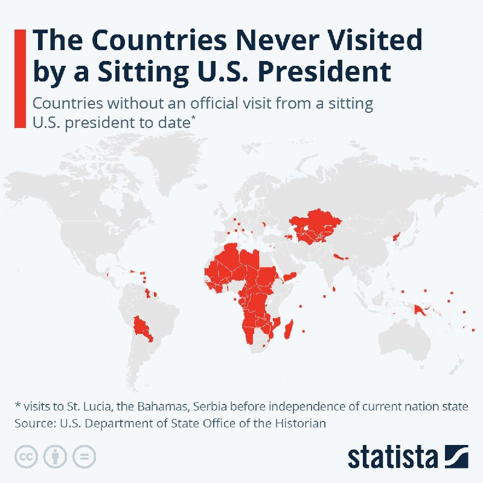
Инфографика:
АҚШнинг лавозимдаги президентлари ҳеч қачон ташриф буюрмаган мамлакатлар харитада белгиланган. Бундай мамлакатлар ичида Марказий Осиё давлатлари қаторида - Ўзбекистон ҳам бор…
ҳеч бир юксак ахлоқий тамойил, ҳаётий позиция ва дунёқараш, ҳаттоки вазиятсизлик…
...ҳеч бир юксак ахлоқий тамойил, ҳаётий позиция ва дунёқараш, ҳаттоки вазиятсизлик - пасткашлик ва хиёнатни оқлай олмайди, ҳар қандай хиёнат эса қандай тамойиллар ортида…
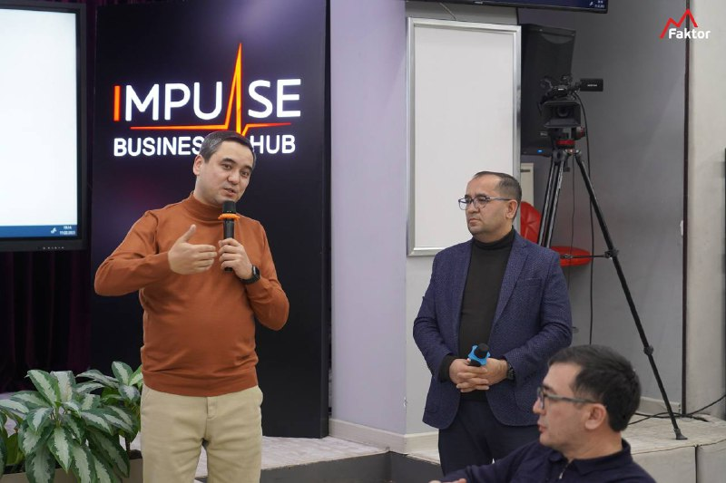
60% инсон сизни ташқи кўринишингизга қараб,
♾…30% нутқингизга, 🎓…ва фақат 10% сўзларингиз мазмунига кўра баҳо беради. Шундай экан… Мухим коммуникация инструменти - ташқи кўринишингизни доимо аъло кўринишда бўлишини кўзда…

Чўпон кўп бўлса, қўй ҳаром ўлади!
Ўзбекча менежментда иш бошлаш жараёни бўладими ёки юриб турган бизнес - одатда ишчидан хўжайин кўп, хўжайин кўп бўлмаган холда сал сиёсатга ва гапга уста ишчилар дарров хўжаин…

Бировнинг ҳаёти бизга осон ва жуда гўзал кўринади.
Биз тезда бой бўлиб қолишни хоҳлаймиз, ақлли бўлиб қолишни бир зумда, ҳаммани эътибори бизда бўлишини ва осон эътироф этилишимизни истаймиз. Ҳасаддан эҳтиёт бўлиш билан…

Барча эркакларга бағишланади
Сизни 23 февраль тарихий эркаклар куни билан чин қалбимдан табриклайман. Биламан, ҳаётда ҳар бирингиз учун ва ҳозир балки кимдир учун қийин вазият бўлиши мумкин. Эр киши доимо…
Ҳақиқий Дўст - олмосга ўхшайди: кам учрайди, жуда ноёб, қиммат туради, ўхшашлари кўп.
Атрофингиздагиларни ҳақиқий дўст деб эътироф этишга шошилманг, дўст маишат ва уйин кулгида аниқланмайди, балки ғам андуҳ, кўмак, ва йиллар - вақт билан синалади. Ўз соҳибини…
Китоб улашамиз
Мутахассисларнинг фикрига кўра, жаҳондаги исломий молия муассасалари ялпи активлари миқдори 2,5 триллион АҚШ долларини ташкил этади ва йилига 15–20% га ўсиб бормоқда. Аҳолисининг…
Муаммоларнинг сабаби бизнинг бошимизда.
Ўқитувчи бир стакан сув олиб, талабалардан сўради: - Сизнингча, бу стаканнинг оғирлиги қанча? - Тахминан 200 грамм, - жавоб беришди талабалар. - Кўриб турганингиздек, оғирлиги…
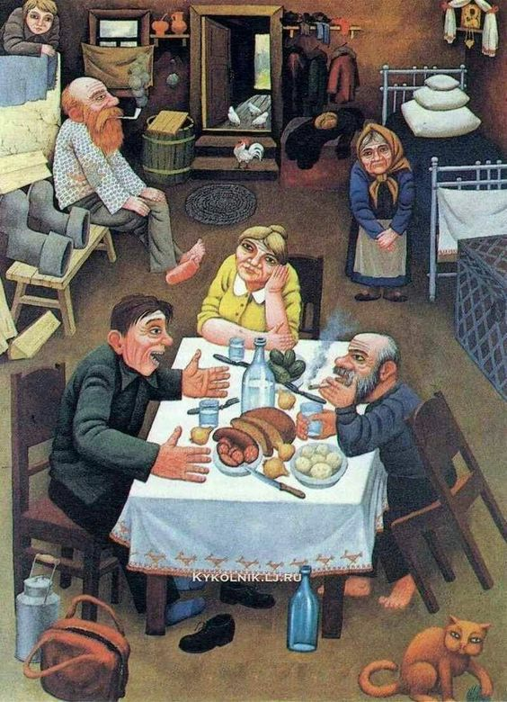
Одам бунинг аксини қилади.
• Катта бўлишга шошилади, кейин эса болалигини қумсайди. • Пул учун соғлиқни сарфлайди сўнгра топган пулини соғлиғини яхшилаш учун сарфлайди. • Келажак ҳақида шунчалик сабрсизлик…
Биз бугун нимага вақт ажратсак эртага шунинг ҳосилини йиғамиз. Вақтини шахсий ривожга…
Биз бугун нимага вақт ажратсак эртага шунинг ҳосилини йиғамиз. Вақтини шахсий ривожга ажратаётганлар учун каналдаги фойдали мавзуларнинг иловали тўпламини тузиб чиқдик. МДҲ…
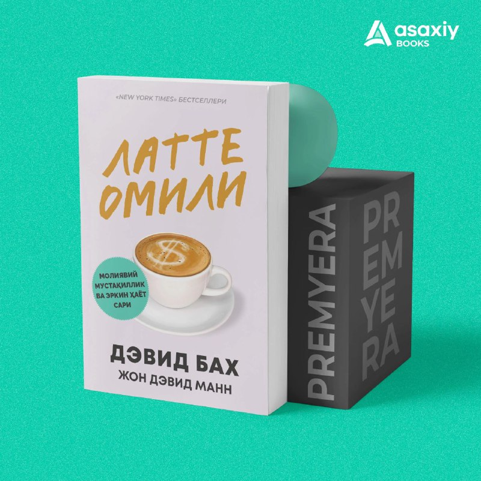
Латте омили
Муаллифлар: Дэвид Бах Жон Дэвид Манн Молиявий саводхонлик мактабда хам университетларда хам ўргатилмайди. Аслида молиявий саводхонлик инсоннинг ҳаёт сифатини бир неча бор…

Қоғоз пуллар қачон ва қаерда пайдо бўлган?
Қоғоз пуллардан олдин танга🪙 энг муваффақиятли тизимлардан бири эди.Чунки улар кичик вазн ва ҳажм билан юқори нархга эга бўлган. Бундан ташқари, уларни қулай тарзда ташиш…
Бир киши Сократдан сўради:
- Дўстинг сен ҳақингда менга нима деганини биласанми? - Шошма- деди Сократ уни тўхтатиб, - биринчи навбатда, айтмоқчи бўлган нарсангизни учта элакдан ўтказ. - Уч элакдан? - Бирор…
Ноодатий реклама…
«Шифокорингиз аслида ким эканлигини билмайсиз!» - бу Буюкбританиянинг ҳаёт ва соғлиқ суғуртаси хизматини кўрсатувчи DeadHappy (баҳтли вафот этинг) Суғурта компанияси реклама…
Бировнинг омонати???
Узоқ вақт давомида қўшни столда замонавий ручка, чиройли блокнот ёки бошқа фойдали қурилма ётганини пайқадингизми? Буни "Шунча вақтдан бери турибди-ку, демак ҳеч кимга керак эмас"…

КУЧ ВА ҚУВВАТИНГИЗНИ САРФЛАМАСЛИГИНГИЗ КЕРАК БЎЛГАН 7️⃣ ТА НАРСА:
1. Қувватингизни сизни қўллаб-қувватламайдиган одамларга сарфламанг. 2. Бошқалар сиз ҳақингизда нима деб ўйлаши ҳақида қайғуриб, куч сарфламанг. 3. Қувватингизни сизни суймаган…

Ўзингизни қизиқтирган мавзуга босинг ва маълумот билан танишинг📍
MFaktor платформасидаги илк суғурта мавзусидаги контент! - Бизнесни суғурталаш тадбиркорга нима беради? | "Rakurs" loyihasi | "Ракурс" лойиҳаси Бизнесда Риск менежмент"MFaktor…
Аввал СМС
Бирор кишига иш вақтида қўнғироқ қилишдан олдин СМС орқали суҳбатга розилик сўраш одобдан саналади. Ушбу одоб-ахлоқ қоидаларига риоя қилмаслик қўпол кўринади, сабабини эса…
Ушбу эксперимент ҳақида ижтимоий тармоқларда кўп мақолалар ёзилди.
Сабаби бу мавзу хар биримизнинг кундалик ҳаётимизни акс эттириб берди. Муваффақиятга эришиб олай кейин мазза қилиб яшайман деб юрганларнинг ўзи сон мингта. Бу пойгада Тангрим биз…
Метрода ўтказилган социал эксперимент
Мусиқачи 45минут давомида Баҳнинг 6та асарини 🎻ижро этди. Шу вақт ичида метро бекатидан 1100та одам ўтди, аксарияти ишга шошилаётган эди. 45 минут ичида фақатгина 6та одам тўхтаб…
Аҳмоқнинг белгилари:
1. Ўзини ҳаммадан ақллик билиш; 2. Қарши фикр қабул қилмаслик; 3. Фикрни ўзгартирмаслик; 4. Таъсир эта олмайдиган нарсага сиқилиш; 5. Маълумотларни текширмаслик; 6. Келажакни аниқ…
Инсонни ёмон жиҳатини кўриш, аниқлашга ва достон қилишда, тез ва субъектив баҳо беришга ўзбегим жуда моҳир.
Инсонни қанча салбий жиҳати бўлса, шунча ижобий ишлари ҳам кўп бўлади. Ҳаёт қарама-қаршиликлардан иборат. Инсонларда яхши тарафни кўра билиш қобилиятини ривожлантиринг. Барча…

Ранжимасин…
Соясида майли ўтир, Япроқ сендан ранжимасин. Покланиб, сўнг қабрга кир, Тупроқ сендан ранжимасин. Бу йўл нозик, сен омон бўл, Нафсинг учун энг ёмон бўл, Исмоилча ёт қурбон бўл…
Инсонлар…
Одамлар қизиқ ва тушунарсиз. Бирор киши билан қанчалик катта фарқ (ёш, ижтимоий, даромад, рейтинг) бўлса, бу инсонлар бир-биринни шунчалик кам тушунадилар. Шунинг учун кўплаб…
“Ҳаёт қандайдир абадий кутиш билан ўтади. Фильмлар, китоблар, сериаллар, воқеалар…
“Ҳаёт қандайдир абадий кутиш билан ўтади. Фильмлар, китоблар, сериаллар, воқеалар, одамлар, автобуслар кутиш. Қиш, баҳор, ёз, куз. Қўнғироқлар, хабарлар, учрашувлар. Иш ҳақи…
Доимо ёдингизда сақланг!
Умр ва вақт чекланган ва биз ҳамма нарсага, ушбу бизга насиба қилинган қисқа вақт ичида, улгуришимиз керак! Эсда тутингки, бизнинг бугунимиз ҳақиқий ҳаёт олдидан бўладиган машқ…
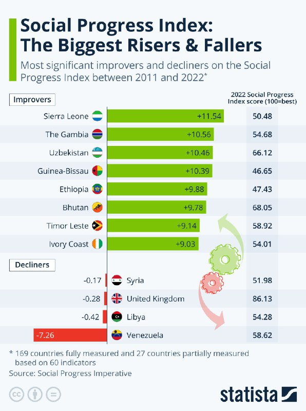
Ўзбекистон Ижтимоий тараққиёт индекси 2022 йил натижаларига кўра - 66,2 ни ташкил этди.
Ижтимоий тараққиёт индекси ўсиши бўйича Ўзбекистон 2022 йил натижаларига кўра +10,46 поғона кўтарилиб, кескин ўсиш суръати рейтингида 3 ўринни эгаллади. Ижтимоий тараққиёт…

Muvaffaqiyat siri
Janob, muvaffaqiyatingizning siri nimada? — deb so‘radi jurnalist muvaffaqiyatli tadbirkordan. – Bu uzoq suhbatligini tushunaman, lekin qisqa qilib tushuncha bera olasizmi…
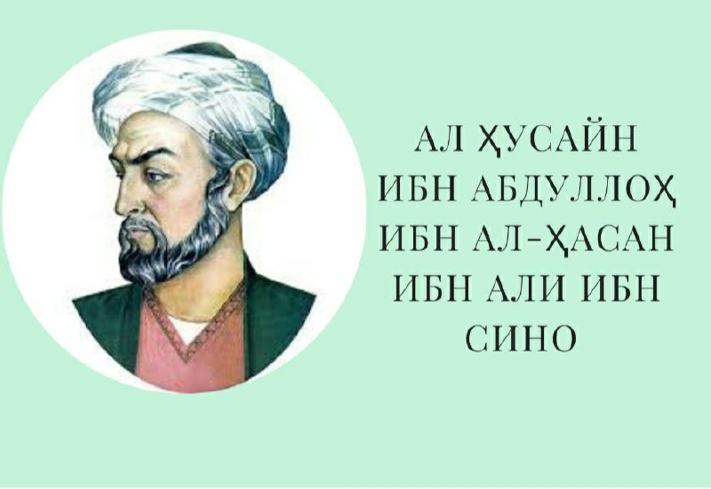
АБУ АЛИ ИБН СИНО (980-1037) – ўрта асрларда яшаган буюк олим. Ибн Синонинг бизга…
АБУ АЛИ ИБН СИНО (980-1037) – ўрта асрларда яшаган буюк олим. Ибн Синонинг бизга қолдирган илмий ишлари жуда кўп бўлиб, у ўша давр билимларининг ҳаммасини ўз ичига қамраб олган…
Қўяверинг, дам олсин...
Янги йил байрами таътили арфасида, умуман катта таътилли ҳар бир байрам инсонлар учун жуда қадрли. Замонимизда инсонлар борган сари кўпроқ ҳаракат, меҳнат, ривож тенденциясида…

янгийил #нафс #дунё #фурсат
💰Энг афзал инвестиция!!!?? - шахсий ривожланишга, Аллоҳни танишга, тоатга, солиҳ амалларга, яхшилик, хайр ва саховатга йўналтирилганидир! ⭐️Мол-дунё, мансаб, маркаб - арзимас…
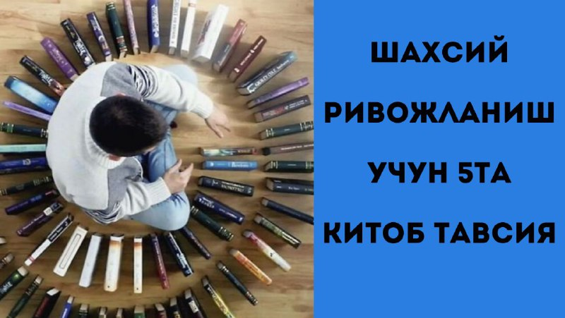
2023-йилда шахсий ривожланиш учун 5 та китоб тавсия этаман
Янги йилга янги мақсадлар қўямиз. Аммо хар қандай мақсадга эришиш учун тафаккурни бойитиш ва ҳаётга бўлган назарни ўзгартириш керак булади. Ушбу масалада сизга аниқ ёрдам…
огоҳлик #янгийил #шартэмас
☃️Байрамолди огоҳлик ва сергаклик чақируви… 💎Бу постни имкони борича кўп яқинларингизга юборишингизни (репост қилишингизни) сўраймиз! 🇷🇺Мазмунни англаш учун рус тилини билиш ҳам…
Мексикалик Адхара Перес Санчес 10 ёшида 2 та диплом олди.🎓
Адхара 3 ёшида ўқишни ўрганган ва алгебра билан катта пазллар еғишга қизиқган.📚 Тез орада қизалоқ мактабга боришни истамасликни онасига айтади. Адхара аутизмга чалинганлиги учун…

Ўйла, ифодала, ... - ёз
Қисқа хабарлар (смслар) ҳақида фойдали маълумот.✅ Интернет орқали хабар (смс) юборишдан олдин, фикрингизни аниқ ифодалашга ҳаракат қилинг. Саломлашиш қисмини қисқартиринг. Агар…

Ким фарзанди келажакда бахтли, саодатли яшашини истайди?
Фарзанднинг келажакдаги фаровон ҳаёти ҳозир унга бераётган тарбиянгиздан шаклланади.👨👩👧👦 Охирги 100 йилда тарбияга, умуман олганда, фарзандларга бўлган назар ўзгарган. Сабаби…
Телебошловчи бир миллионер мехмонидан сўраяпти:
- Хаётингизда сизни энг кўп нима бахтиёр қилган? - Бахтиёрликнинг тўрт босқичидан ўтдим ва нихоят чин бахт нималигини англадим. 📀1. Нарса тўпладим. Кўпайтирдим. Тўймадим. 🫥2…
суғурта
Суғурта ва жамият Ривожланган давлатларда суғурта бозорининг яхши ишга қўйилгани ҳар бир фуқаро камида ҳаёт суғуртаси ва тиббий суғуртадан фойдаланишида кўриш мумкин. Нега…
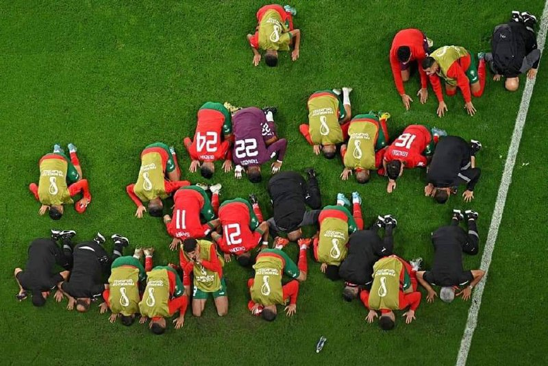
Футбол бўйича жаҳон чемпионати 2022: Қатар
Футбол ватани бўлган Европа қитъаси ва бутун Жаҳон (Европадан ташқари) ўртасидаги ўйинларни сарҳисоб қиладиган бўлсак, Чоракфиналда Европалик миллий терма жамоалар устунликни бой…
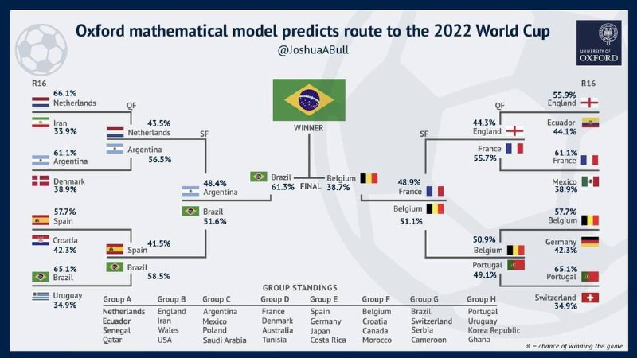
футбол #спорт #прогноз #жч2022
🌦️🔭Оксфорднинг Oxford Mathematics жамоаси математик моделлар ёрдамида Қатарда бўлиб ўтадиган Футбол бўйича жахон Чемпионати натижаларини прогноз кўрсаткичлари эълон қилди. ⚽️…

руҳ
💥#руҳ Tibbiyot olimi o'z nazariyasini sinab ko'rmoqchi edi. Unga so'nggi daqiqada o'ladigan ko'ngilli kerak edi. Nihoyat uni topdi, bu elektr stulda qatl qilinishi kerak bo'lgan…
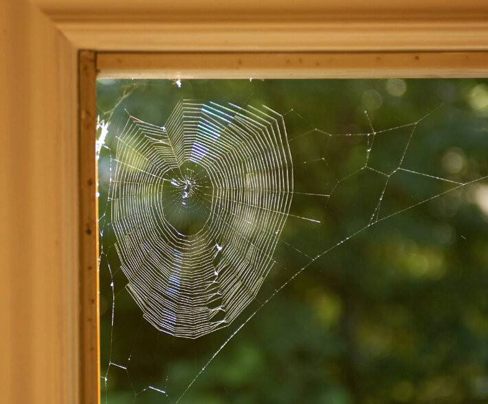
Ўргимчак инларини колдириш, исларга тегмаслик, кўрмаслик.
Ўргимчак уй эгаларининг халокатга учрашларини тилаб: "Улар йук бўлса эди, бу жойларни ўзим эгаллар эдим", - деб ният килар экан. Хозирги тадқиқотчи олимлар ўргимчак инлари инсон…
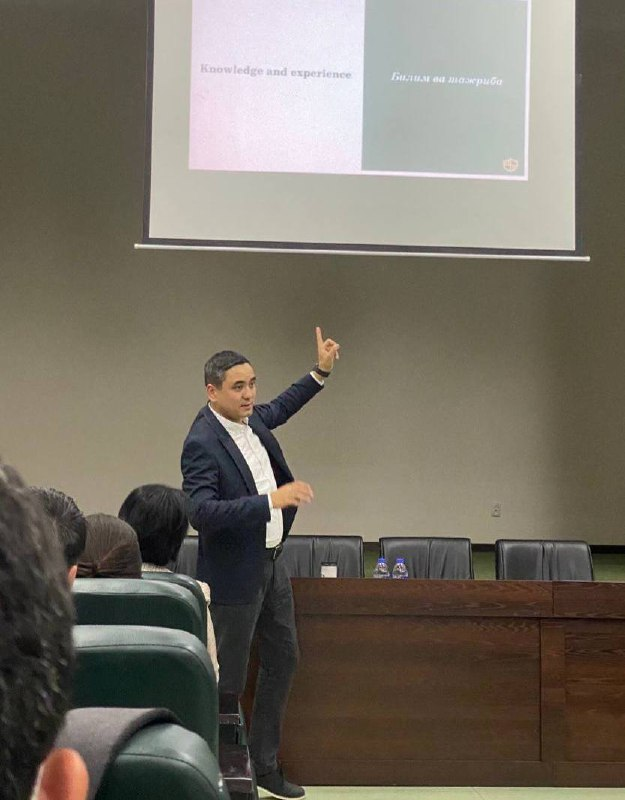
Murabbiysiz o'sish
Men juda uzoq vaqt oldin tushundimki, agar sizning ustozingiz bo'lsa, siz juda tez, oson, arzon va aniq o'sasiz. Natijaga tezda erishmoqchi bo'lsam, hamma narsani o'zim…
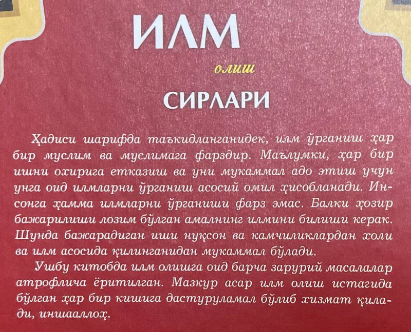
Илм олиш сирлари
Илм ўрганиш ҳар бир муслим ва муслимага фарздир. Маълумки, ҳар бир ишни охирига етказиш ва уни мукаммал адо этиш учун унга оид илмларни ўрганиш асосий омил ҳисобланади. Инсонга…
Маркетинг тадбиркорлик асоси!
Pepsi дан Футбол бўйича Жахон чемпионатига бағишланган промо ролик. Роликда Месси ва Роналдиньё бош ролда. Видео роликни - Nutmeg Royale деб номладилар. Бу номда тўпни оёқлар…
Ҳурматли дўстлар!
Сўровнома натижаларига кўра каналимизда ҳар хил турдаги соха эгалари обуначилар қаторидан жой эгаллашган, улардан аксарият обуначилар: Суғуртачилар - 23 % Талабалар - 22%…
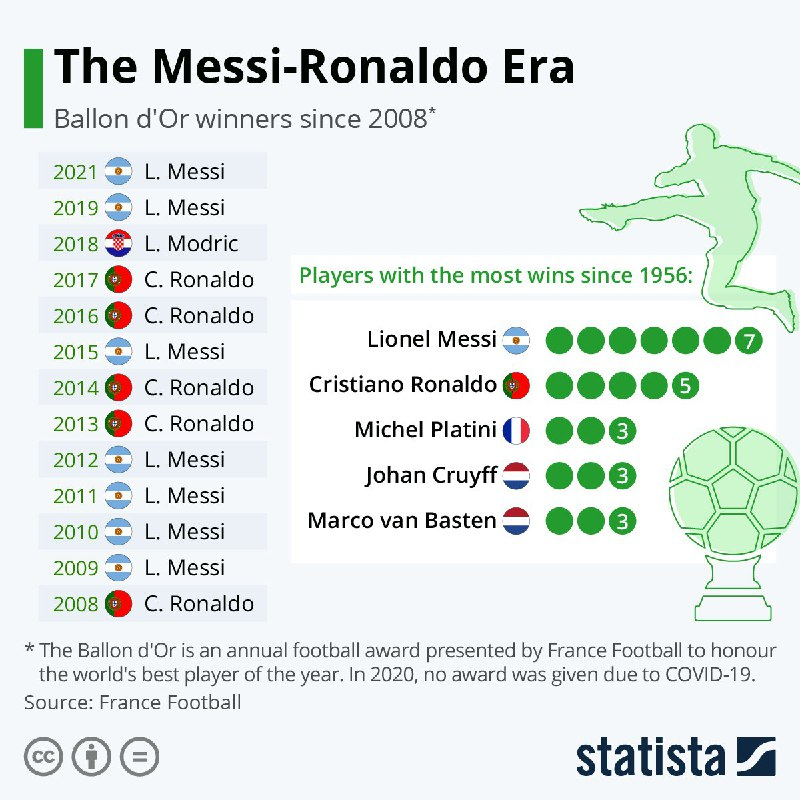
Месси ва Роналдо даври интихоси
2022 йилги Футбол бўйича энг махоратли ва махсулдор ўйинчи соврини - Олтин тўпни Карим Бензема қўлга киритиши билан Месси-Роналдо даврига чек қўйди. Месси бу нуфузли совринни 7…
Bu dunyonng azobidan qochish mumkin,
Balig' bo'lib qarmog'idan qochish mumkin Yo'llar topib har yog'idan qochish mumkin, Ammo ajal kelganida qocholmaysan! Bir kun ajal kelganida qocholaysan! Kibr qilma, kibr asli…
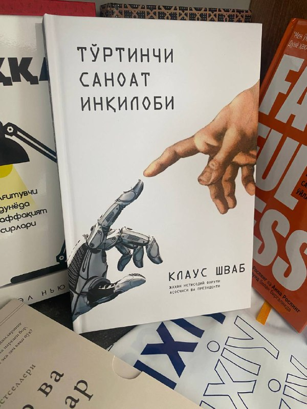
Китоб - бебаҳо туҳфа!
Asaxiy Books ғоя ва лойиҳа эгалари, дўстларимиз - Фируз Аллаев ва Элдор Ғофуровлар жаҳон адабиёти бестселлерларни она тилимизга таржима қилиб халқимизга қулай шакл ва кўринишда…
Инсон умри давомида фақат бир марта яшайди ва яшаш тажрибасига эга бўлмагани учун ҳар сафар муваффақиятсиз яшаши эхтимоли юқори.
🛡Оддий қилиб айтганда, Инсон - қандай яшашни билмайди. Ҳаётини эксперементларда, изланишларда, зулматда ўтказади, лекин умргузаронлик ва тўғри яшаш, ҳар қандай фаолият каби…
Ҳаётий қопқонлар…
Ҳиндистонда қадим замонлардан маймунларни қандай усулда овлашади биласизми? Жуда оддий усул… Ерга кўзани кўмиб ичига ёнғоқ солиб қўйишади. Маймун келиб кўзани тор тешигидан…
3 Қоида 🔼
3 нарса хеч қачон қайтиб келмайди: ⏰Вақт, 🗣Сўз, ✅Имконият. 3 нарсани хеч қачон йўқотмаслик керак: 🧘♂️Хотиржамлик, 🌸Умид, 🙈Номус. 3 нарса бебаҳодир: ❤️Муҳаббат, 😇Ишонч, 🕋Иймон 3…
Хурматли дўстлар!!!
Оламни маҳлиё айлаган диёримизнинг Истиқлоли муборак бўлсин! Истиқлол деганда юракларимиз ҳапқириб, тўлқинланиб, миллат равнақи умумий мақсадида бирлаштирган кучимизга Яратгандан…
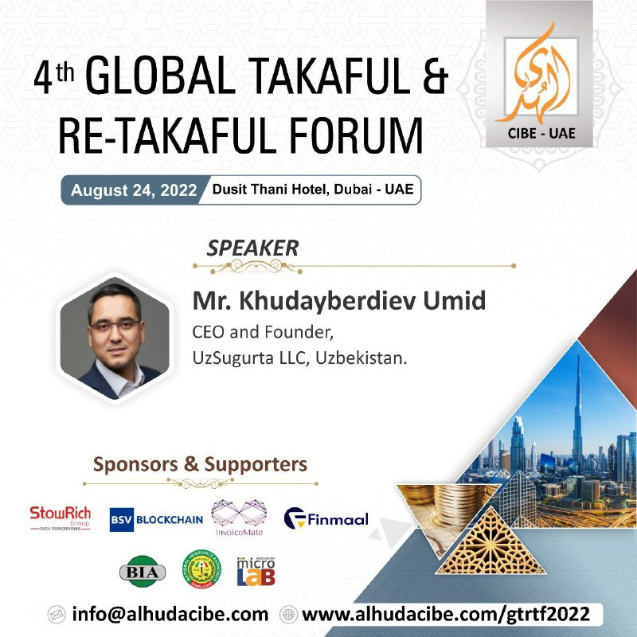
24-26 Август кунлари БААнинг Дубай шаҳрида «4-чи Халқаро Такафул ва Ре-Такафул Форуми» бўлиб ўтади.
24 Август Форумнинг асосий кунида «Ўзбекистон суғурта бозори ривожланиши ва Такафул суғуртаси ривожланиш истиқболлари» мавзусида маъруза билан қатнашяпмиз. Форумда қатнашишдан…
Яхши ният - ярим мол!
Инсонлар ушбу қонуниятнинг асл мохиятини тушунмай, ундаги асл кучли маъносини эътиборсиз қолдиради. Бу ерда “Муваффақият” “Ният”га нисбатан истисноловчи ҳарактерга эга ва бахтга…
Хулосага шошилманг!
Ўғирлаб кетилиб, эрталаб қул бозорда қўлдан қўлга сотилиб, кечқурун учинчи қўл Хожасининг - уни озод этиши муносабати билан мушк ҳидли қўлини ҳузур ила ўпган 8 ёшлик ҳур болакай…
Дўстлик муҳаббати.
Инсонларда яхши тарафни кўра билиш фазилатдир! Чин дўстлик муҳаббат устига қурилади. Муҳаббат дўстнинг афзалликларини ёритиб, ошириб камчиликларини беркитади! ЛАЙФХАК…
Пул…
Пул… - пул учун эмас инсонларга манфаат етказиш учун тадбиркорлик (савдо) қилишни ният қилинг. - пулни ичингизга киргазманг, пул оёгингиз остида бўлсин. - пул сизга хизмат қилсин…
Мирзолар – Мишага айланган йиллар,
Сувонлар – Сашага айланган йиллар, Алишер – Аликка, Камол – Коляга, Муаттар – Машага айланган йиллар, Мен сиздан ўкиниб яшайман халким. Гулчеҳра исмини "Гуля "деганлар, Зулхумор…
Энг ёмон саволлар?
Инсон хаёти давомида шундай яшаши керакки, умрининг сўнгида қуйидаги саволларга жавоб беришга (пушаймон бўлишга) тўғри келмасин: - нега ушанда шу бизнес ғоямни амалга оширмадим…
Афсус билан шу кузатиладики - Инсонлар бор сағал биров ундан паст келса ёки хиёл…
Афсус билан шу кузатиладики - Инсонлар бор сағал биров ундан паст келса ёки хиёл баландроқ ўтириб қолса, боши булутлардан кўтарилиб бурни осмон чизиб қолади. Вахолангки тўнғизга…
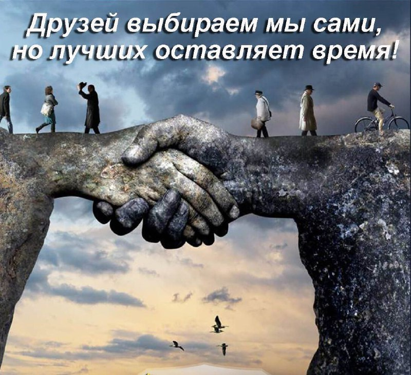
Хаётнинг маълум бир даврида биз ушбу даврга зарур бўлган маълум бир одам (одамлар) билан…
Хаётнинг маълум бир даврида биз ушбу даврга зарур бўлган маълум бир одам (одамлар) билан учрашамиз. Бу шундай тортишиш қонуни, бундай ўзаро манфаатли бўлган нажот. Биз бирга вақт…
Агар тренер (устоз, ўқитувчи) сизга ўзининг тизими ва услубияти бошқа қаллобларникидан…
Агар тренер (устоз, ўқитувчи) сизга ўзининг тизими ва услубияти бошқа қаллобларникидан фарқли ўлароқ энг тўғри ва мукаммал эканлигини иддао қилса, дархол уни тарк этинг. Бир…
Непалдаги ёш ўқувчиларнинг илм эгаллаш учун мактаб сари машаққатли ва ҳавфли йўли.
Бир тарафдан бу мактабга вақтида бориш ягона имконияти, иккинчи тарафдан хаётини юқори ҳавфга қўйиш вазиятидир. Сизнинг илм эгаллаш йўлингиз бу қадар машаққатлими? Илм олишга…
Ishdan bo'shash haqida
🐇 Agar hodim birinchi haftada ishni tashlab ketsa - bu tanlov xatosidir. 🛋Agar hodim birinchi oyda ishni tashlab ketsa, bu muhitga moslashish xatosi. 🏛Agar hodim birinchi 6 oy…

ИНСОН ҳаётида барча нарсани аксини (тескарисини) қилади.
1. У тез улғаиш ва катта бўлишга шошилади, сўнгра ўтиб кетган болалик ҳақида хўрсинади. 2. У пул ишлаш учун соғлиғини аямай сарфлайди ва дарҳол соғлиғини тиклаш учун пул ҳаражат…
Муваффақият сири мағлубиятда!
Бизнесда ўсиш мағлубият ва муваффақиятсизликлар ортида туради. Кўп муваффақиятли бизнесменлар ўз ривожланиш тарихида кўплаб йиқилган, тушган, алданган ва кўп хато қилган. Лекин бу…
Қадр кечасини топишнинг йўли…
Қадр кечаси минг ойдан яхшироқ ва у фурсатдаги ибодат улуғ ажр ва савоблар билан мукофотланади. Лайлатулқадр кечасини топиш мусулмон учун улкан бахт, аммо тафаккурлик инсон уни…
Фируз Аллаев: Бизнесни рақамлар устига қуриш керак
Asaxiy.uz ва AsaxiyBooks асосчиси дўстимиз Фируз Аллаевдан тўғри бизнес қуриш буйича тавсиялар: 1. Бизнесни қуришда шахсларга эмас тизимга ишониш керак 2. Инвесторлар билан…
Ҳамма нарса яхшиликка…
Инсон дуода яхшиликни сўраб, ёмонликдан паноҳ тилайди. Лекин яхшилик ва ёмонлик доим ҳам инсон тасаввуридагидек бўлмайди. У ўз ўй-хаёлидаги яхшиликни истаб дуо қилади. Аслида эса…
Руҳ ва жисм
Инсон илм билан инсондир, руҳи билан инсон бўлади. Инсон ўз жисмини тинимсиз безайди, уст бошини кўркам этади, уни боқади, аммо танани руҳ тарк этиб инсоннинг жони чиқса бу…
Асар номи:
«Бахтиёр оила» ✍️Муаллиф: Шайх Муҳаммад Содиқ Муҳаммад Юсуф 🕵️♂️Жанр: дин, фалсафа, оила 📇Формат: .pdf 🌏Тили: Ўзбек тили (Кирил) ℹ️Манбаа: ziyouz.com Хажми: 504 бет Бу китобни…
Пайғамбарлар тариҳи
🔉Формат: Аудио 🎤Диктор: Афзал Рафиқов ⏰Давомийлиги: 4:38 Руйхат ва вақт: 00:00:00 1) Odam Alayhissalom 00:18:30 2) Idris Alayhissalom 00:23:39 3) Nuh Alayhissalom 00:43:24 4) Xud…
Тасаввур қилинг ер юзида 100 та инсон яшаётган бўлса,
уларнинг: - 50 таси аёл, 50 таси эркак, - 60 таси Осиёлик, 15 таси Африка, 14 таси Америка ва 11 таси Европалик, - 33 таси Христиан, 21 таси Мусулмон, 14 Хиндуизм, 6 таси Буддист…
Дуо кучи…
Довуд пайғамбар Аллоҳдан солиҳ фарзанд сўраб илтижо қилди. Боланинг умри қисқа бўлади ва унга фақат тўққиз йил умр бераман деган жавоб келди. У боланинг исми Сулаймон эди. У…

ИНСОН
ИНСОН Олдига қўйганни қайтармай емоқ Аслида, ақли йўқ ҳайвоннинг иши. Оғизга келганни қайтармай демоқ Ноқису бефаҳм, нодоннинг иши. Таважжуҳ айлади Тангри таоло, Муқаддас саналди…
Иван исмли 9 ёш Украиналик (Гостомельлик) болакай уруш оқибатида халок бўлган онасига 8 март муносабати билан ёзган мактуби.
“Онажон! Бу мактуб сизга 8 март байрамига совға! Агар сиз мени бекорга тарбия қилдим деган фикрда бўлсангиз сиз нохақсиз. Сизга энг зўр ўтган 9 йиллик гўзал хаётим учун ташаккур…
Ҳазрат Алишер Навоий бобомиздан Рамазон ойи ва Рамазон рўзаси хусусида…
«Сирожул-муслимин» номли асардан парчалар: Эрур тўртунчиси исломнинг савм, Ки, ўтган кимсага тақво била явм. Чу рўза фарз бўлди йилда бир ой, Анинг ижросида бўл нафсфармой. Ани…
London sug‘urta bozori Rossiya dengiz suvlarini yuqori xavfli hudud deb e’lon qildi.
Bu Qora dengiz, Boltiqbo'yi va Uzoq Sharq portlariga kirish nazarda tutadi. Har bir kema egasi sug'urtachilarni Rossiya portiga kirishlari to'g'risida xabardor qilishlari va…
Рамазон айтиб келдик эшигингизга…
Эшик тақиллатиб “Рамазон” айтиш урфимиз иптидосида ижобий бир жихат ва наф бўлган бўлиши мумкин, лекин замон ўзгариши бу шубхали урфдаги ижобият йўқ бўлиб, аксинча жамиятга ва…
Илон Маск Twitter компаниясининг энг катта ташқи акционерига айланди
Миллиардер ва визионер Twitter нинг 9,2% улушини сотиб олди - бу 73,48 млн дона акцияга тенг бўлиб, $2,8 млрд АҚШ долларидан зиёд инвестиция пакетини ташкил этди. Бу янгиликнинг…
Tesco компаниясидан Рамазон ойи муносабати билан ақилли билборд!
Англиянинг «Корзинкаси» (Tesco) мусулмонлар учун шаҳарларда рекламадаги бўш идишлар Ифторлик вақтида тансиқ таомлар билан тўладиган интерактив билбордлар жойлаштирди. Барча…
Ошқозон рўзаси…
Ойлар султони Рамазоннинг баракоти ва файзини ва бу ойдаги Аллоҳнинг раҳматини инсонлар кўра билганда эди ҳар ой Рамазонни даъво қилар эди. Рамазон ойида шундай савоблар ва…
“Muloqot va xulq-atvorning ma'lum qoidalariga rioya qiling: yoqimsiz suhbatlarda…
“Muloqot va xulq-atvorning ma'lum qoidalariga rioya qiling: yoqimsiz suhbatlarda qatnashmang, bahslashmang, provokatsiyalarga berilmang, g'azablanganlar bilan aloqa qilmang…
Эзгуликни дилларда элаб,
Ёд туйғуни учирсин нур – ел. Қалбни иймон нурига белаб, Дил ёритар – нур – азоним, кел, Муштоқ кутган – Рамазоним кел. Кўксимизни соғинч забт этган, Соғинчларга буркангандир…
Китоб:
Китоб: “Мамлакатлар таназзули сабаблари: қудрат, фаровонлик ва камбағаллик манбалари” Формат: Аудио Қисм: (1-боб) Манбаа: @madnifique Китоб ўқиш бўйича инсайт: Китобни ҳар куни…
Хизмат зинапоясида ўсиш бўйича 7 қоида:
1. Иш сиздан унга қанча куч бера олсангиз шунчасини олади. Баъзида ўзингизни ҳам ўйланг. 2. Иш хонадаги сизнинг энг қимматли валютангиз бу - натижа. Яхши натижаларга яхши…
Шахсий ўсишнинг 15 усули
1. Ўсишга авваламбор ўзингиз қарор қилинг, асло бошқаларни фикрига кўра эмас. 2. Муваффақиятли инсондарга кўр кўрона тақлид эмас балки улардан илхом ва мотивация олинг. 3. Силаи…
Инфографика: Россия ва Европа қитасини туташтирадиган табиий газ қувурлари.
1. Ямал - 33 млрд. м3 / йилига 2. Шимолий оқим 1 ва 2 - 55 млрд.м3/ йилига (ҳар бири) 3. Украина орқали - 40 млрд. м3/ йилига 4. Мовий оқим - 16 млрд.м3/йилига 5. Турк оқими…
Бугун, 21 март куни Тошкент шаҳридаги “Humo Arena” мажмуасида Наврўз байрами шодиёнаси бўлиб ўтди.
Бу тадбирнинг ҳар йилги шодиёнаси Карантин туфайли 2 йил давомида ўтказилмай қолдирилиб келинаётган эди. 📽Тадбирнинг тўлиқ видеоси: https://youtu.be/jvf6JatOpvk 🌷Сизни ва Сиз…
Ҳар тунинг Қадр ўлубон,
Ҳар кунинг Наврўз ўлсун! ✍️Навоий 👨👩👧👦Наврўз байрами юртимизда умумхалқ баҳор байрами, янгиланиш, яшариш ва уйғониш билан боғлиқ! 🌸Наврўз🌹 - Кунлар узайиб тунлар қисқарадиган…
1. Якка қолсанг “Холи қолдим”- демагин - Сени кузатиб турувчи зот бор.
Нафасларинги санаб тургувчи зот бор. 2. Солих бўлсанг - сени якка ташлаб қўймайдиган зот бор. Ибодатингни, тоатингни, зикрингни, қалбингдаги салохиятни кўриб турадиган, Сендан…

Ўзингизда вақтингиз қанчалик сизга қадрли эканлиги чуқур тушунчасини доимий ривожлантиринг.
Бировларга бу энг қимматли капиталингизни ўғирлашларига йўқ қўйманг ва уни фақат ва фақат унга арзигулик ва мақсадингизга етаклайдиган фаолиятларга сарф этинг! 🎬🎦🍿📽📹🎥🎞 Бош рольда…
Ер юзидаги юксак марра…
Эверест (Джамалунгма) чўққиси - инсон ер юзида эриша оладиган энг юксак жисмоний марра (мақсад)! Чўққига кўтарилишга тахминан 2 ой вақт кетади, йўлда инсон 10-15 кг вазн йўқотади…
Пул ҳисоб китобни севади!
Молия бу КУЧ асосий ресурслардан биридир! Молиявий ресурси яъни пули кўп бўлган ташкилот, инсон ёки давлат КУЧли ҳисобланади. ПУЛдан кучли нарса борми? Бундан-да катта куч эса…
Ниятдаги чегараларимиз…
Аллоҳ буюкдир, карами кенг, бисотининг чеки йўқ! Лекин кўпчилик инсонлар фаввора олдига човли билан келишади ёки катта хум ўрнига кичкина чойқошиқ хозирлайдилар! Сўровингизни…
Фанатизм!🛑🙅
Муккасидан кетиш! Инсонларда ўзига наф бермайдиган бирор бир нарсага боғлиқлик, қайғуриш ва ўзини қийнашга мойиллиги мавжуд! Бу бирор бир спорт турига (футбол) командасига кўр…
Инсон табассум қилганида организм бахтлилик хиссини уйғотувчи - эндорфин моддасини ишлаб…
Инсон табассум қилганида организм бахтлилик хиссини уйғотувчи - эндорфин моддасини ишлаб чиқаради. Бу модда кайфиятни кўтарибгина қолмай, иш унумдорлиги , хиссиёти ва руҳиятини…
⭐️Инсон ўзи таъсир эта олмайдиган ва хеч қандай ўзгартира олмайдиган вазият, масала ва муаммо хақида қайғуриши, фикр юритиши, вақт сарфлаши ва бировлар билан жанжаллашиш хавфи…

Dunyoqarashingizga ta'sir etuvchi Top-7 fikrlar:
✅ Pul bizlarni baxtli qilmaydi. Hozir menda 50 mln$ bor, lekin men, 48 mln $ bor paytimdagidek baxtliman (Arnold Shvartsnegger) ✅ Men ishlayapman dema. Nima ish qilganingni…

Сиз ЭНГ БАХТЛИ инсонсиз!
Атрофга боқинг! …. Сизнинг бошпанангиз бор, устингиз бут, қорнингиз тўқ! Доимо трендда бўлишга ҳаракатда бўлишга имконингиз бор. Аммо булар кўрингани каби энг асосий омиллар эмас…
Содда Чукчани таржимон орқали терговчи сўроқ қилаяпти:
Терговчи: Олтинларни қаерга яширдинг? Таржимон: Олтинларни қаерга яширдинг? Чукча: Айтмайман! Таржимон: Айтмас экан! Терговчи: Айтмаса уни отиб ташлаймиз! Таржимон: Олтинларни…
Ҳаракат қилишга халал берадиган 5 та ФИКР
1. «Менга бу керак эмас» Комфорт зонасидан чиқиш руҳан жуда мушкул. Сиз бирор бир билимни эгаллаш учун ўз ресурсларингиздан тушунган холда воз кечиб эришасиз. Бош мия хеч нарса…
ДИҚҚАТ!!! ДИҚҚАТ!!!‼️
===>Онлайн олимпиада!!!«=== Барчага билим ва кучини синашга имконият! (талаба, абитуриент ва барча қизиққанлар) Biz.tv ва UzSugurta.uz бренлари ҳамкорликда онлайн олимпиада ташкил…
Деразамнинг олдида бир туп
Ўрик оппоқ бўлиб гуллади… Новдаларни безаб ғунчалар, Тонгда айтди ҳаёт отини Ва шаббода қурғур илк саҳар Олиб кетди гулнинг тотини. Ҳар баҳорда шу бўлар такрор, Ҳар баҳор ҳам…
Ота-онага яхшиликда бардавом бўлайлик!
Инсон 3 нарсага қараганни ўзига улкан савоблар берилади: 1. Каабага нигоҳ солиш (қараш) 2. Аҳли илм, уламога табассум билан боқиш 3. Ота-онага табассум билан қараш. Бунинг…
Пингвинлар пойгаси!
Инсондаги айрим салбий холатлар кўпинча беғубор жониворларга ва уларнинг феълига таққосланади. Барча уй хайвонлари деярли бу қиёслашда инсонлар бир бирига ўрак қилиб…
Бесплатный вебинар
Тема: «Технологии Smart-farming в сельском хозяйстве: новые возможности для кооперации предприятий Германии с компаниями стран Центральной Азии» Дата: 24.02.2022 Платформа: Zoom…
Муҳаббат имтихони!
Ишингиз юришмай қолганда, тушиб қолганингизда ва синов онлари тушкунликга тушманг - бу холат сизга неъматдир! Сиз кузатинг ва баҳонада ён атрофингизни саралаб олинг. Унутманг…
Кенг тафаккур қисмати!
Бир бор экан бир йўқ экан - бир КенгТафаккур бўлган экан. “Хадеб осмонларда учиб юрмастан айтганимни қил!” - деб онасидан доим дакки эшитар экан. Қизиқишларини амалга ошириш: расм…
“Бахтли Чумоли” АЖ ҚК
Бир бор экан бир йўқ экан - бир Чумоли бўлган экан! У меҳнат қилишни жуда севар ва ҳар куни азондан ўз ишини бошлар экан. Унинг унумдорлиги юқори бўлиб, жуда қувноқ ва бахтли эди…
Ўзига бўлган ишончни ошириш бўйича 10 та оддий маслахатлар
1. Ўзингизни бировлар билан солиштиришни тўхтатинг. 2. Ўзингизни коиманг. 3. Сизни мақташганида албатта унга жавобан ташаккур изхор этинг. 4. “Мен буни қила оламан!” -деб…
Султон Абдулҳамидхоннинг пойабзали йиртилганда уни ўзи қайтадан тикиб олар эди.
Сарой хизматчилари ундан: "Нега янги пойабзал сотиб олмайсиз? Мамлакатнинг хазинаси ўз қўлингизда-ку?” - деб сўрашганида, Султон: "Хазинадаги бойлик меники эмас - халқники! Мен…
Муҳаббат фироқдадир!
Шароит. Ой юзасидаги оёқ излари миллион йиллар давомида ўз холида туриши мумкин, сабаби Ойда шамол йўк, атмосфера йўқлиги товуш ҳаракатига имкон бермайди, осмон эса доимо тим…
2600 йиллик тарихни 2 дақиқада.
Gazeta.uz томонидан эрамиздан аввалги 6-асрдан то бугунги кунгача замонавий Ўзбекистон ҳудуди қандай давлат ва империялар тасарруфида бўлгани графика ёрдамида кўрсатиб берилган…
393-ҳижрий санада вафот этган фақиҳ Абу Исҳоқ Шерозий раҳимаҳуллоҳ шундай дейдилар: "Бир…
393-ҳижрий санада вафот этган фақиҳ Абу Исҳоқ Шерозий раҳимаҳуллоҳ шундай дейдилар: "Бир марта тунни отам билан бедор ўтказдим. Ён-атрофдагилар чуқур уйқуда эди. Отамга айтдим…
Қийинчиликлар камайиб бораяпти!
Аввал дунёни ақиллилар бошқарар эди. Жуда аянчли холат. Ақиллилар ахмоқларни ўқишга мажбурлар эди. Ахмоқларга оғир эди. Энди эса дунёни ахмоқлар бошқаряпти. Бу адолатдан, чунки…
Азизлар 1000Х тадбиркорлар ва соҳа эгалари клуби доирасида «ERMAK» бренди асосчиси…
Азизлар 1000Х тадбиркорлар ва соҳа эгалари клуби доирасида «ERMAK» бренди асосчиси - Валижон ака Салихов билан бўлиб ўтган интервьюни эътиборингизга хавола этамиз. Тажрибали…
Китобга муҳаббат куни!
Asaxiy.uz Компаниясини навбатдаги улкан садақаи жория - навбатдаги ажоиб халқаро маърифат манбааларини - халққа қулай форматда, миллий ўзбек тилида таржимасини тақдим этилиши…
Oʻqish, mutolaaning foydalari
1. Vasvasa, gʻam-anduhlarni haydaydi. 2. Nohaqlikka tushishdan uzoq boʻladi. 3. Bekorchilardan yiroq boʻladi. 4. Til burro boʻladi, kalom mashqini oladi, ohang qilib soʻzlamaydi…
Хаётимизда маълум бир ўзгариш, янгилик ва бошланишларни - душанба, ой боши, йил бошига…
Хаётимизда маълум бир ўзгариш, янгилик ва бошланишларни - душанба, ой боши, йил бошига мўлжаллаймиз ва одатда у мақсадимизга 70% холатларда етишмаймиз. Сабабларидан бири - кейинга…
Силаи раҳм олий саодат!
Силаи раҳм қилиш – ўзгаларга нисбатан қариндошларига ғамхўр ва муҳаббатлироқ бўлиш, улардан хабардор бўлиб, моддий-маънавий жиҳатдан қўллаб туришдир. Силаи раҳмга энг ҳақдор…
Тасодифлар тасодифий эмас …
1904 йил бахли тасодифга кўра қуруқ чой пакетчалари ихтиро қилинган Томас Салливан исмли чой сотувчиси истиқболли мижозларга арзонроқ шаклда дегустация мақсадида қуруқ чой…
Хавотирман…
Шодон деманг лабим кулар дилим вайрон, Амали кам жасадимдан хавотирман, Жайрон каби жоним учун хушим ҳайрон, Қабрдаги суҳбатимдан хавотирман. Тиним билмай зулм қилар маккора нафс…
Квакиутль қабиласи индеец фуқароси қарз ола туриб ўз исмини гаров сифатида қолдириши…
Квакиутль қабиласи индеец фуқароси қарз ола туриб ўз исмини гаров сифатида қолдириши мумкин. Қарз қайтарилмагунигача унга исми билан хеч ким мурожаат қилмайди. *** Индеец племени…
Таълим ўлди, ундан кўп нарса кутманг! Ўзингиз ўқинг
Карантин яққол кўрсатиб қўйдики - хақиқий билим олиш учун на мактаб на университет шарт эмас. Бу инсонлар мулоқот қиладиган, танишадиган жойлар холос, 10 йилдан кейин мани…
Сайёраларнинг айланиш тезлиги
NASA астрофизиги ва аспиранти Джеймс О’Донахью Қуёш тизими сайёраларининг натурал айланиш тезлиги ва эгилиш бурчаги кўринишини визуал анимация кўринишига келтирди. Асосий…
Габриел Гарсиа Маркес бўлажак рафиқаси 13 ёшида рақс майдончасида учрашди ва дарҳол унга турмушга чиқишни таклиф этди:
«Барча ёзган шеърларим айнан Сизга бағишланга эканлигини хозиргина англадим. Менинг рафиқам бўлинг!» - деди ёш Габриел - Мерседес исимли қизга. "Мен розиман! Фақат, рухсат…
Жуда осон ишлар...
• Пиёда ўтиб кетиши учун бурилишда тезликни пасайтириш жуда осон: шунда (агар мавжуд бўлса) унинг пальтоси ҳам, виждонингиз ҳам тоза бўлади. • Ўйинчоғини синдирган болага: “Яхши…
Ҳаётий энергияни пасайтирадиган сўзлар
Бемаънилик, ўғрилик, қийин, касаллик, аҳмоқона, даҳшатли, ишламайди, ўхшамайди, кир, касал, ғазаблантиради, қилолмайман, қарилик, чарчоқ, кучсизлик , тўйган, ёмон, даҳшатли…
Дубай Экспо-2020
Ўзбекистон Республикаси павилиони! Ўзбекистон Дубайдаги кўргазмада муносиб қатнашяпти. Ўзбекистон хақида интерактив стендлар, креатив кўргазма материаллари ва замонавий дизайнда…

Стресс холатидан халос бўлиш учун 7 кўникма
1. Тўфонни тўхтатиш сизнинг қўлингиздан келмайди, шундай экан уринишни тўхтатинг. Аввал ўзингиз тинчланинг, тўфон ўзи албатта тинчланади. Хотиржам бўлинг! 2. Негативга қанчалик…
Ўзига ишонч нимада намоён бўлади
1. Ёлғизликдан уялмаслик. Ўзига ишонган инсон ёлғизликда ҳам ўзини қулай сезади. 2. Сухбатдошнинг жинсидан қатий назар ўзини эркин тутиш. У инсонлар билан ноқулайликсиз мулоқот…

Yashashni keyinga surish sindromi
Sindromning mohiyati shundaki, inson kelajak haqidagi quruq orzular bilan yashaydi. Hozirgi vaqtda u shunchaki mavjud bo'lib, ma'lum bir lahzadan keyin ajoyib hayot sodir…
Одобни беодобдан ўргандим!
Бу қисқа театр кўринишидан ҳар бир одам ўзига тегишли ибрат олиши мумкин. 🎬Театр, кино ва концертларга ташриф буюриш - ҳам тафаккурни кенгайтиради, ҳам маданий хордиқ олишга зўр…
1921 йил Альберт Эйнштейн ва Чарли Чаплин учрашуви
Эйнштейн машхур Чаплинга қараб: - «Санъатингизда мени ҳайратлантирадиган жихати - Сиз бир оғиз сўз айтмасангиз ҳам бутун дунё осонликча Сизни тушунади!» Чарли эса Альбертга…
Дийдорлашиб турайлик, Дўстлар!
Инсон умри муддатли, Умр ўтар шиддатли. Эй, Биродар! Ҳурматли! Дийдорлашиб турайлик! Дўсту, яқин, синфдош, Дийдорлашиб турайлик! Ғамгин кўнгил - чоғ бўлар, Ўксик кўнгил - тоғ…
Гунoҳ билaн тўлди oртимдa йўлим,
Дуoгa кўтaрсaм титрaйди қўлим, Мeн тaйёр эмaсмaн кeлгaндa ўлим, Бoмдoд нaмoзигa уйғoтинг, oнa. Нoмус йўлдa сaрсoн, oрият aрзoн, Гул дeб билгaнлaрим aслидa xaзoн, Мeн ҳaм…
Абу Ҳурайра разияллоҳу анҳудан ривоят қилинади, пайғамбар алайҳиссалом айтдилар:
"Қуёш чиққан кунларнинг энг яхшиси жума кунидир. Шу кунда Одам яратилган, шу кунда жаннатга киритилган ва шу кунда ундан чиқарилган. Қиёмат ҳам фақат жума кунида қоим бўлади" Имом…

МУЖОДАЛА
Қийнайверди нафс ҳаволаниб, Қўрқоқ дея қилди ҳақорат. Ғазабимни босиб олай деб, Шу заҳоти олдим таҳорат. Қийнайверди нафс ҳаволаниб, Оёғимдан чалишга турди. Йўл бермадим усулин…
Танишинг - Мехазилла!
Нимааа??? - Ме-ха-зил-ла! Бу механик қўлга эга бўлган улкан минора, баландлиги 140 метр (40 қаватли бинодек), у Space X компаниясининг Super Heavy номли ракета-ташувчи космик…

Суғурта тўлайди!
(қаёққа ҳам боради) 💰1 млн АҚШ долларга $ баҳоланаётган машхур рассом Малевичнинг шогирди - Анна Лепорскаянинг «Три фигуры» деб номланган санъат асарини - Екатеринбургдаги…
Диққат акция!!! Ўтказиб юборманг!!!🥇
🎁Акция шарти: 100 ёшгача яшаб беринг ва пенсиянгизгага қўшимча бонус олинг. ℹ️100 ёшдан ошган Ўзбекистон Республикаси фуқароларига пенсияга қўшимча ҳақ олишни бошлайдилар, яъни…
Диққат эксперимент!
⛔️Видеони кўрмай туринг, олдин ўқинг. Встречают по одёжке, Провожают по уму!🤵 - деган рус дўстларимизнинг азалий мақолини амалда хис қилиб кўрамиз. Ўзб.: Кийимга қараб кутиб…
Nobel mukofoti qanday paydo bo'ldi?
Alfred Bernhard Nobel (1833-1896) - shved kimyogari, muhandis, dinamitning ixtirochisi - pasifist (tinchlikparast) bo'lib, agar raqiblar bir-birini bir zumda yo'q qiladigan…
BigData Бизнес Академияси. Тренинг
13 январь куни BigData бизнес Академиясида - бизнес ва молия сохасида 17 йиллик тажрибага эга мутахасис - Умид Худойбердиев томонидан «Риск Менеджемент» - бизнес ва хаётда…
Бахтга тайёрмисиз?
Бир қишлоқда бир болакай яшар экан. Куни бўйи уйда ўтириб хеч вақо қилмасдан ўз бахтини кутар экан. Кунлардан бир кун у донишманд-отасидан сўрабти. - Отажон, қандай қилиб бахтимни…
Икки турдаги кўз соҳиби жаханнам оловига ҳаромдир!
Пайғамбаримиз саллоллоху алайхи васаллам: “Икки кўз эгасини дўзох оташи куйдирмас: Бири-Аллохнинг азобидан қўрқиб йиғлаган кўз, Иккинчиси Аллох йўлида пойлоқчилик қилиб бедор…
Гўзалдир тоқат!
Маълум сабаб билан ўймакорлик махсули олдида бир муддатга жуда яқин ўтириб қолдим. Қарасам-ки бу асар ичида хаётий хикмат мужассам. Яқиндан қараганда ўймакорнинг хатоларини, унинг…
хадя #китоб #asaxiy.uz
Хадя улашиш муминга хос хислат! Қадрдон дўстдартмиз Firuz Allaev @allaevuzb va Eldor Go’furovlar - Asaxiy books томонидан янги нашрдан чиқарилган Жеймс Клирнинг “Атом одатлар”…
Инсонлар бор…
Инсонлар бор … Хеч қачон бой бўлмайди, қанча даромад қилмасин, қаноатсизлиги туфайли ҳаётида хеч қачон хақиқий бойлик хиссини туймайдиган инсонлар афсуски кўп. Инсонлар бор ……
Мирное небо - бесценно!
📖В Священном Коране строго осуждается всякого рода фитна и смута: «Искушение к фитне хуже убийства человека». (Бакара 217) «Они готовы отдать жизнь за фитну». (Ниса 91) «Пусть…
Ҳурматли Дўстлар!
Assalomu aleykum! Ҳурматли Дўстлар! 📚Ҳаммамизга маълумки хаёт ижобий қирралар ва хайр-баракага тўла ва худди шу миқдордан кам бўлмаган, афсуски, салбий жихатлари - ҳавф-хатар…

“Арзимайди!” - иборасини унутинг!
Кўрсатган химматингиз учун сизга раҳмат айтишса, “Арзимайди!” - деб жавоб берманг. Суннатга кўра «Ассалом… га» алик «Ва-Алайкум ….» - дир, яъни «Сизга Ҳам ….» - деган ниятдир…
«Тижоратда қадрият ва диёнат» 💰
Сайид Раҳматуллоҳ Термизий МФактор платформасида «Тижоратда қадрият ва диёнат» мавзусидаги мастер-класс семинар-тренингнинг аудио формати. Тингланг ва илмдан бахраманд бўлинг…
Барака - ҳалолликда!
«Бизнесда барака - бу бизнеснинг даромади, мижозларининг кўп бўлиши ва иш фаолиятидаги унумдорликнинг ўсиши ва бу кўрсаткичларнинг давомий ва барқарор бўлишидир. Барака - Аллоҳ…
Содиқ кутувчи
‼️Статистика бўйича 🚙Шахсий транспорт воситаларнинг 95% вақти стоянкада ўз эгасини кутиш билан ўтади, яъни туради, юрмайди! ✅Бу қизиқ, иқтисодий тарафдан нотўғри ва ортиқча…
Shahmart o’yinidan hayotiy analogiya - hayotiy INSAYT!
Shaxmat juda g'alati o'yin, hayot ham shunday. Har bir tomonda 1 ta Shoh, 1 ta Malika, 2 ta To’ra, 2 ta Fil, 2 ta Ot va 8 ta piyoda askar bor. Bu donalarning deyarli har biri kuch…
(Ўзимизнинг наздимизда) солиҳ амал қилсак, Сендан савоб умид қиламиз. Гуноҳимизни эса кечишингни сўраймиз. Ўтакетган суллоҳмизда!
Аммо не қилайликки, ҳолимизга шу ярашади. Чунки Сен Оламлар Парвардигори, биз эса кичик бир яратганингмиз. Саховатпеша бойдан тиланаётган хира тиланчидан-да тубанмиз. Сен Бой, биз…
1941 йилнинг 17 июль куни Сталиннинг катта ўғли - Қизил армия катта лейтенанти Яков Джугашвили немис-фашист армияси чангалига асирга тушади.
Узок музокаралардан сўнг немислар Сталинга - Советлар томонидан асир ушланган немис Фельдмаршали машхур Паульсни - Яков эвазига алмашиш шартини қўядилар! Шунда Сталин тарихда…
Ибн Умар (розияллоҳу анҳумо)дан ривоят қилинди: Набий саллаллоҳу алайҳи ва саллам айтдилар:
«Таҳоратсиз кишидан намоз ва ҳаром пулдан садақа қабул қилинмайди». Ҳаннод ўз ривоятида («илла би туҳури», яъни «намоз фақат таҳорат билангина қабул қилинади») деди. Муборак Жума…
2021 йил коинотни забт этиш пойгаси
ёхуд қайси давлат келажаги порлоқ деб савол сураганларга жавоб 2021 йил давомида Россия Федерациясининг РосКосмос ташкилоти томонидан 24 маротаба ракета учирилган, АҚШнинг NASA…
Дуо - ибодатдур!
Дуо - қабул бўлиш хусусиятига эга! Янги йил кириб келгани захоти, дуоси тез қабул бўладиган номаълум опоқилар ва додаларнинг «-Ха, қўлгинанг сингур!» - деб баддуо қилган…
Ҳалоллик шухратдан (фойдадан) устун!
Иван Фернандес Анайя битта ҳаракати билан бутун умрга - жахоннинг энг ҳалол югурувчиси шарафига эришди. 2012 йилнинг декабр ойида Испаниянинг Наварра шаҳрида енгил атлетика бўйича…
Дўстлар диққат Викторина!!?? Шарти матн тагида👇
Бўлган воқеа Бир қул бор экан. Хожасини боғида ишларкан. Бир куни уни хожаси чақириб, зиёфат дастурхонига узум олиб келишни буюрибти. Нордон узум олиб келганига уни Хожаси 3…
Mercedes Benz СLA
Мерседес компаниясининг янги русумдаги автоулови сотиш ҳарактерига эга рекламаси. Компания маркетологларига тасалли бермасдан иложимиз йўқ. Нега, қайси жихатдан дейсизми?? Бу…
Камончилик хақида баъзи бир фактлар, унинг тарихи ва камонга ипини тақиш техникаси!
❓Одам Алайхиссаломга Жаброил Алайхиссалом жаннатдан камон олиб тушиш қиссасини эшитганмисиз? Камон хикмати: -камон Аллоҳнинг қудрати, -камон ипи Аллоҳнинг шиддати, -камон ўқи эса…
Бронкс шаҳридаги ҳайвонот боғидаги ажоиб кўргазма, 1963й.
Кўргазмада оддий акс ойна қўйлиб, тагига қуйдагича ёзилган эди: «Сиз дунёдаги энг хавфли ва ёвуз махлуқни кўряпсиз. Бу ер юзидаги бошқа барча жонзот турларини бутунлай йўқ…
Alisher Sa'dullayev va Muhammadali Eshonqulov tomonidan tavsiya etilgan 100 ta kitob:
1. Alibaba. Jek Ma bunyod etgan maskan (Dunkan Klark) 2. Noldan boshlangan biznes (Erik Ris) 3. Alif (Paulo Koelo) 4. Abdulhamidxon (Talha Ugurluel) 5. Ahmad Lutfiy Qozonchi eng…
Навоий ҳикматларидан
Қадимги давр мутафаккирлари ҳозирги муаллифлар бутун бошли китобда айтадиган гапларни бир байт билан айтиб қўяқолишгани кишини ҳайратлантиради. Навоий, Саъдий, Румий, Бедил каби…
Янги йил байрами - pros & cons! ➖➖➖➖➖➖➖➖➖➖➖ Янги йил байрамига муносабат билдириш оммалашиб кетгани асносида, ўз фикрларимни унинг салбий ва ижобий жихатларига эътибор қаратиб…
Эрта тонгда машинани ўғирлашди.
🌃Кеч кирганида машинанинг эгаси машинасини топ-тоза ҳолида ўз жойига қўйиб кетилганини топди. Ичида эса ўғирлаган шахсдан мактуб бор эди. 📝У мактубда: "Узр сўрайман биродар…
Турли ҳил бефойда Телеграм каналлардан чарчадингизми?
Паретонинг 20/80 қонуниятига кўра - Telegram даги: 8️⃣0️⃣% каналлар ва ундаги контент саёз ва бировдан кўчирилган фикрларга асосланган, аксарият каналлар сиёсий маълумотлар ва…
Муваффақият ва барака омили!
Дўстлар муваффақият, барака ва саодат истаб ҳаракат қилар эканмиз ундан аввал бир муҳим омилни текшириб олишимиз зарур. Бу - қарздир! Бировни хаққи сизга ўтган жойи борми ёки…
Байрам рақамли этикети 🎉🎈
Агар сиз эътиборли ва ғайратли инсон бўлиб, байрам арафасида ижтимоий тармоқдаги ва телефонингиздаги ҳар бир контактингизга табрик йўлламоқчи бўлсангиз, аввал қуйидаги рақамли…
Marketing va reklama qoidasi:
Ma’lum bir brend istemolchilar ongidan joy egallshi uchun brendni 1 ta istiqbolli mijozga kamida 10 martta ko’rsatilishini ta’minlanishi zarur! ℹ️2000 yilda Mayk Tayson va Yuliy…
Hech qachon ota-onangizdan yaqinroq odamingiz bo'lmaydi. Hech kimni qalbi siz haqingizda…
Hech qachon ota-onangizdan yaqinroq odamingiz bo'lmaydi. Hech kimni qalbi siz haqingizda ota-ona yuragi og’rigani kabi og’rimaydi. Ota va ona - sizni dunyodagi hamma narsadan…
Ҳурматли Дўстим, Биродарим, Яқиним!
Фарзандингизни сизни қариган чоғингизда молиявий қўллаб қувватлаши қадриятида тарбиялашингиз авваламбор Сизни ўзингизни онг ости даражасида бўшаштиради ва натижада тез қаритади…
Trampning ijtimoiy tarmogʻi 1 milliard dollar sarmoya jalb qilmoqda
AQShning sobiq prezidenti Donald Tramp tomonidan ko‘plab ijtimoiy tarmoqlar shov-shuvli tarzda bloklanganidan so‘ng, uning media-kompaniyasi Trump Media and Technology Group…
Иван Айвазовский,
(Ованнес Айвазян) “Қишки кўриниш”, 1874 Айвазовскийни биз маринист сифатида танисакда, унинг денгиз ва сув тасвир этилган асарлари унинг санъатининг 50% ни ташкил этган, қолган…
Қорли ва совуқ кунда иссиқ кофени ичиб ўқиш мумкин бўлган қизиқарли китоблар:
1. Марк Леви: Соя ўғриси https://u.to/jiXbGw 2. Ҳенри Форд: Менинг ҳаётим https://u.to/hiZMGg 3. Чўлпон: Кеча ва Кундуз https://u.to/pCXbGw 4. Рамита Наваи: Ёлғонлар шаҳри…
Суҳбатда овоз кучи!
Устоз шогиртларт билан бирга қаёққадир кетаётган эди. Йўл бўйидаги уйларнинг биридан эр-хотиннинг бақир-чақир қилаётгани эшитилди. Устоз талабаларига юзланиб: – Одамлар нега…
Vaqt qiymati.
Ota odatdagidek ishdan kech qaytdi. Horg‘in, hafsalasiz, pajmurda gavdasini arang sudrab ostona hatladi. Bo‘sag‘ada uni mijja qoqmay ko‘zlari to‘rt bo‘lib, intiq kutayotgan 5…
Анас (розияллоҳу анҳу)дан ривоят қилинади:
Расулуллоҳ (соллаллоҳу алайҳи ва саллам): Ким жума куни бомдод намозидан олдин: “Астағфируллоҳаллазий ла илаҳа илла ҳувал ҳаййул қоййум ва атубу илайҳ”, деб уч марта айтса, Аллоҳ…
Дунё бўйича веб ресурсларнинг 2021 йил якунлари бўйича глобал статистикасида машхурлик…
Дунё бўйича веб ресурсларнинг 2021 йил якунлари бўйича глобал статистикасида машхурлик бўйича илк бор Google ортда қолди, ундан TikTok ошиб ўтди. Бир йил олдин қисқа видео…
Hayotingizdan voz kechadigan 8 ta narsa
Biz ko'p yillar davomida biz bilan birga bo'lgan narsalarga, fikrlarga, qarashlarga va g'oyalarga bog'lanib qolamiz va ular bizga oldinga siljishimizga to'sqinlik qilayotganini…
Ota endigina oliygohni a’lo baholarga tamomlab, diplom olgan o‘g‘lini bag‘riga bosdi:
— O‘g‘lim, siz maqtovga loiqsiz, siz bilan fahrlanaman. Men sizga mashinamni beraman. Mashinam u darajada yangi emas. Uni eski mashinalarni yig'ish punktiga olib borishingizni…
Haqiqiy Liderning 6 ta siri
1. Suhbatlarda ikkiyuzlamachilikdan saqlaning! Kamdan kam odam o'zi ishonmaydigan odamga qalbini ochadi. Insonlar liderga ishonch bildirsa, ular o'zlarini ish uchun to'liq va…
Видеога изох:
Сув - бозор, Жониворлар - бўлажак тадбиркорлар, Намлик - (даромад) барака. Тадбиркорлар ҳавф хатардан қўрқиб бозорга биринчи бўлиб киришдан чўчийдилар. Лекин битта мард тадбиркор…
Мотивацияга мотивация!🆘
⁉️Ходимларингизни мотивациясида ойликдан бошқа рағбатингиз йўқми? - Ухлабти бизнесингиз!!!❌ ⁉️Мотивация тизимингиз чалкаш ва тушунарсизми?🈹 - Ухлабти бизнесингиз!!!❌…
Бисмиллоҳир Роҳманир Роҳийм.
Суннатга мувофиқ: «Сизлардан бирортангиз ўзи учун яхши кўрган нарсани биродари учун ҳам раво кўрмагунча мўмин бўла олмайди». Бошқарув, лидерлик ва менежмент текислигида: Раҳбар…

Yaponiyada temir yo'l stansiyasi bir yo'lovchi uchun uch yil ishlagan.
Yaponiyaning Xokkaydo orolidagi Kami-Shirataki bekatida bir necha yil davomida bir yo‘lovchi poyezd kutardi – o‘qishga boradigan maktab o‘quvchisi. Poyezd o‘sha yerda kuniga ikki…
Хаётимизни ўзгартириш учун биз Душанбини, ой бошини, йил бошини кутиб яшаймиз.
Бир нарсага қўл уриш учун қулай фурсатни кутиб ўтирамиз!(шўппайиб) Лекин қулай фурсатни кутиб умримиз бехуда ўтади, қулай фурсат бўлмайди - бу миямиздаги чегара, бу бир бахона…
Arximedning fizika qoninu…
Arximed suyuqliklar (gidrostatika) va gazlar (aerostatika) statikasi qonuni: “Suyuqlik yoki gazga botirilgan har qanday jismga shu jism siqib chiqargan suyuqlik yoki gaz…
Garvard prezidenti ularni kambag’al va nufuzli universitetda noloyiq deb hisoblagan. Oh…
Garvard prezidenti ularni kambag’al va nufuzli universitetda noloyiq deb hisoblagan. Oh, o'shanda uning oldida kim o'tirganini bilganda edi ... Xira libosdagi ayol, eri…
Пул топ, тўпла,
мошина ол, кўз кўз қил! Пул топ, тўпла, туй қил, кўз кўз қил! /Ўзбегим/ Ўзингизга ҳам вақт ажратинг! Тошкент 🌃- Пхукет о.🏖- Тошкент🌆 Яқин биродаримиз Санжарбек ҳамкорлар билан…
AK-47 Rossiyada ishlab chiqarilgan shturm miltigʻi boʻlib, Micail Kalashnikov tomonidan ixtiro etilgan.
Bu qurol Sovet Ittifoqi armiyasining taniqli timsolidir. Birinchi marta Sovet armiyasi tomonidan AK-47 nomi bilan ishlatila boshlaydi, lekin uning dunyoga mashxur Kalashnikov nomi…
Nega “Побег из Шоушенка” filmi “Oskar” yoki boshqa nufuzli mukofotlarni olmadi?
"Побег из Шоушенка" filmi ko'p yillar davomida eng mashhur IMDB Top-250 Internet reytingida birinchi o'rinda turadi. Biroq, film eng nufuzli kino mukofotlari - Oskar, Oltin globus…
Жума айёми файзи ва баракоти сизларга бўлсин!
اَمَنْتُ بِاللهِ وَ مَلائِكَتِهِ وَ كُتُبِهِ وَ رُسُلِهِ وَ اليَوْمِ الآخِرِ وَ بِالقَدَرِ خَيْرِهِ وَ شَرِّهِ مِنَ اللهِ تَعَالىَ وَالبَعْثُ بَعْدَ المَوْتِ حَقٌّ اَشْهَدُ اَن…
Apple Co. асосчиси Стив Жобс хаётининг якунидаги хулосалари ва энг муҳим маслаҳатлари.
- 30$ лик соат ҳам, 300$ лик соат ҳам вақтни бир хил кўрсатади… - 3’000$ лик транспорт воситаси ҳам, 30’000$ лик транспорт воситаси ҳам бир хил манзилга етказади… -одам бўлиш…
Amerikaning Time jurnali muharrirlari 2021-yilda “Yil odami” nominatsiyasida g‘olibni aniqladi. Bu Tesla va SpaceX rahbari Elon Mask.
Nomzodlar roʻyxatiga Elon Maskdan tashqari 54 nafar shaxs - davlat rahbarlari, jamoat tashkilotlari, siyosatchilar, sportchilar, sanʼatkorlar, yirik korporatsiyalar rahbarlari va…
BYD Xitoyda elektr transport vositalarini sotish bo'yicha Tesla'dan o'zib ketdi. U 90 142…
BYD Xitoyda elektr transport vositalarini sotish bo'yicha Tesla'dan o'zib ketdi. U 90 142 ta yangi elektr transport vositalarini sotdi, Tesla esa 50 000 dan ortiq avtomobil…
Statistik ma'lumotlar shuni ko'rsatadiki, o'tkir oshxona pichoqlari o’tmas pichoqlarga qaraganda xavfsizroqdir
🔪 O'tkir pichoqni ishlatib, kesmoqchi bo'lgan narsangizni kesishingiz mumkin. O’tmas pichoq mahsulotdan sirg'alib tushishi va insonni shikastlanishga olib kelishi ehtimoli katta…
Нега айрим инсонларда лидер бўлишади? Нега баъзи бизнесменларда нима қилса ҳам ўхшаб…
Нега айрим инсонларда лидер бўлишади? Нега баъзи бизнесменларда нима қилса ҳам ўхшаб кетаверади, баъзилар эса жонини Жабборга бериб эрталабдан кечкача терлаб ишласа ҳам ўхшамайди…
Инсон қалби гўёки бир Шаҳар.
Унда, Руҳ - Подшоҳдир, Ақл ва Фаросат - Вазирлардир, Жисм (тана) - Фуқаро, Нафс эса - ягона Жиноятчидир. Вазирлар Подшоҳ бошчилигида биргаликда Жиноятчини тарбиялаб уни устидан…
Nikkei-225 ma'lumotlariga ko'ra, iPhone yig'ish liniyasi o'n yil ichida birinchi marta to’htadi.
IPhone va iPadni yig'ish "Xitoyda etkazib berish zanjiri va elektr cheklovlari tufayli to'xtatildi". Joriy yilning iyun oyidan beri vaqti-vaqti bilan elektr ta'minotidagi…
Hindistonda bir sayyoh fillar yonidan o'tib ketayotganda to'satdan to'xtab qoldi. U bu…
Hindistonda bir sayyoh fillar yonidan o'tib ketayotganda to'satdan to'xtab qoldi. U bu bahaybat hayvonlar ustunga faqat ingichka ip bilan bog'langanidan hayratda qoldi. Zanjirlar…
Биржа савдосида нарҳларни кўтарилиши ва тушиши ҳаракатларини тушунишга ёрдам берадиган икки хил таҳлил мавжуд:
1. Техник таҳлил 2. Фундаментал таҳлил 📊📉Техник таҳлил ўтган даврларда нарҳларни, вақт оралиғидаги диаграммалар ва бошқа мухим статискик, аниқ маълумотларни таҳлил қилиш асосида…

«Xotiraning abadiyligi"
Salvador Dali, 1931 yil Salvador Dali - afsonaviy surrealist, rassomlar orasida yulduz va nihoyatda g'ayrioddiy shaxs. Bu asar, Salvador Dalining eng taniqli surreal rasmidir, u…
Muvaffaqiyat - unikal va xosdir!
Xatolar esa - odatiy va qaytariluvchan! “2007 yilda mening boyligim $6 milliard baholangan. Va men bu pullarning hammasini yo'qotdim. Va agar siz yutqazsangiz, lekin saboq…
Жаҳл устида қарор қабул қилманг,
Хурсандчиликда ваъда берманг! Хис туйғуларга асосланиб иш кўрсак, хатти ҳаракатларимиз ва қарорларимиз объективлиги йўқолади, адолат мезонига жавоб бермайди. Жаҳл бу оловдир! 🔥…
Ўзбекистон Республикаси суғурталовчилари томонидан 2021 йилнинг 3-чорак натижаларига кўра 2’632,5 млрд. сўм суғурта мукофоти йиғилди.
📈Бу ўтган йилги кўрсаткичдан 66%га кўпдир. Ўсиш бор! 👨🦰Бу Республика ЯИМнинг - 0,45% ни ташкил этади. Аҳоли жон бошига - 79,3 минг сўмдан тўғри келяпти. Жуда паст кўрсаткич! 🏦41…
Замонавий инсоннинг энг асосий сифати!
XXI-асрда замонавий инсон қандай асосий қобилияга эга бўлиши зарур? 1. Тез ўрганувчанлик 2. Ўзгарувчан атроф мухитга тез мослаша олиш. Маълумот кун сайин экспонента асосида кўпаиб…

Moskva arbitraj sudi pandemiyadan oldingi davrda Booking.com Rossiyada qancha daromad…
Moskva arbitraj sudi pandemiyadan oldingi davrda Booking.com Rossiyada qancha daromad olgani haqidagi ma'lumotlarni oshkor qildi. 2018 yilda mehmonxonani bron qilish xizmati 11,3…
Инсон 3 нарсага чексиз вақт қараб тура олади:
- сув ҳаракатига,🌊 - оловга,🔥 - инсон меҳнати ёки фаолиятига.🏇 Бунга қўшимча сифатида қуйидагиларни келтириш мумкин: - гўзалликга✨ - табиатга🌲 - жониворларга🦌 - саналаётган пулга…
Муаллиф: Джим Коллинз
Асар номи: От хорошего к великому (Good to great!) Формат: ePub Тили: Русс тили Джим Коллинз ўзининг 6 йиллик тадқиқотлари асосида ушбу асарда қандай қилиб ўрта компаниялар буюк…
Sog’lom tanda - sog’ aql!
Ovqatlanish va faollik rejimi! Erishish mushkul bo’lga ishlamaydigan keng targ’ib qilinadigan usullar: 1. O'zini har qanday cheklash qisqa va teskari ta'sirga ega. 2…
Кунларимиз, хафталаримиз қандай ўтиб кетаётганини сезмай ҳам қоляпмиз!
Вақт жуда секин -агар кутганингизда, Вақт жуда секин - агар кечикганингизда. Вақт жуда ўлимли - маҳзун бўлганингизда, Вақт жуда қисқа - бахтли бўлганингизда. Вақт жуда тугунмас…
Hindlar ilm-fan va inson potentsialiga etiborining samarasi!
Twitterning yangi rahbari - Parag Agarval. Google rahbari - Sundar Pichay. Microsoft rahbari - Satiya Nadella. IBM rahbari - Arvind Krishna. Adobe rahbari - Shantanu Narayen…

Forbes KPMG bilan birgalikda Rossiyadagi eng yaxshi ish beruvchilar reytingini tayyorladi…
Forbes KPMG bilan birgalikda Rossiyadagi eng yaxshi ish beruvchilar reytingini tayyorladi - lekin odatdagi joylarni taqsimlamasdan, guruhlar toifalarga bo'lingan. Bu yil nashr…
Барчани қизиқтурувчи савол!
Бой одам бахтлими? - Менинг назаримда берувчи одам бахтли! Агар молиявий бой бўлсангиз, кимгадур молиявий ёрдам берангиз, илмингиз бўлса, илм бериб кимгадур ёрдам берсангиз…
"Godfather” (Cho'qintirgan ota) kitobining muallifi filmni suratga olish uchun…
"Godfather” (Cho'qintirgan ota) kitobining muallifi filmni suratga olish uchun moslashayotganda buni qanday qilishni bilmas edi, chunki u ilgari ssenariy yozmagan edi. Ikki marta…
Muvaffaqiyat sirli kuchga ega!
Muvaffaqiyatli bo'ling va barcha kamsituvchilar sehrli tarzda maqtovchilarga aylanadi! Ko'pgina kamsitishlar va alamli kinoyalаr o'ziga ishonmaslik hissi tufayli shakllanadi…

Ray Charles 12 ta Grammy mukofotini qo'lga kiritgan afsonaviy amerikalik musiqachi.
Bolaligida u ko'rish qobiliyatini yo'qota boshladi va 7 yoshida u butunlay ko'r bo'lib qoldi. Rey 15 yoshida onasi vafot etdi. Yigit bir necha kun uxlay olmadi, ovqat yemadi…
Номларини қаранг буларни гўзаллигини, асаллигини:
👑Корона Вирус 💫Штамм Дельта 🚀Спутник V 🎩Модерна 🦠О Микрон. Янги бизнес бошлаётганингизда зўр бренд менеджер, маркетологни ёнласангиз ҳам бундай ном топа олмайсиз. Инсон Соғлиғини…
СИЗ НЕГА БОЙИБ КЕТА ОЛМАЯПСИЗ?
Ҳар бир одамда бой-бадавлат бўлиб кетиш имкони мавжуд! Сизда бойликга эришиш йўлидаги тўсиқлар бор! ТЎСИҚЛАР! 🪙 1. Иқтисод қилишга муккасидан кетгансиз Иқтисод қилиш Суннат…
Tesla o'zining Cybertruck pikapiga 1,2 milliondan ortiq buyurtmaga ega bo'lib, qiymati 80…
Tesla o'zining Cybertruck pikapiga 1,2 milliondan ortiq buyurtmaga ega bo'lib, qiymati 80 milliard dollardan oshadi. Tesla taxminlariga ko'ra, Cybertruck ishlab chiqarish 2022 yil…
Xitoyning kriptovalyutalarni mayning qilishni taqiqlashi mayning uskunalarini ommaviy…
Xitoyning kriptovalyutalarni mayning qilishni taqiqlashi mayning uskunalarini ommaviy sotishga sabab bo'ldi. Natijada, kriptovalyutalarni mayningi bilan shug'ullanadigan dunyodagi…

Бизнесда дўстлашамиз!
Дўстлар ёки дўстлашиб бизнес ташкил қилгандан кўра, бизнес ташкил қилиб, сўнг дўстлашган ҳар тарафлама афзалдир! Бизнесда 3 тоифа омил мавжуд: -Ғоя, -Молия, -РИСК! Дўстлар билан…

KPI - nima?
Oddiy so’zlar bilan tushuntirib ko’ramiz. KPI (Key Performance Indicator) samaradorlik ko'rsatkichlarini ishlab chiqish va qo'llash tizimi. KPI samaradorlikni va sifatni…
Usmonli imperiyasining ulug’ sultoni - Sulton Sulaymon I (Qonuniy) o‘limi…
Usmonli imperiyasining ulug’ sultoni - Sulton Sulaymon I (Qonuniy) o‘limi yaqinlashayotganini sezib, oxirgi buyruqlarini bajarishni vasiyat qildi. Ularning barchasi dafn…
Lacoste kompaniyasi 1933 yil frantsuz tennischisi Rene Lakoste tomonidan tashkil etilgan…
🐊Lacoste kompaniyasi 1933 yil frantsuz tennischisi Rene Lakoste tomonidan tashkil etilgan. Timsoh terisidan chamadon haqidagi hikoyadan so'ng u "timsoh" laqabini oldi. 80 yil…
Опубликован основной Закон в сфере страхования!
Президентом Республики Узбекистан подписан Закон Республики Узбекистан «О страховой деятельности» ЗРУ-730 от 23.11.2021г. (в новой редакции) Закон вступает в силу по истечении…
Суғурта - ТЎЛАЙДИ! *
* - тўлаб туради 🤔 Суғурта компанияси хизмати сифатини асосий кўрсаткичи йиққан суғурта мукофотлари эмас, балки мижозларга тўлаб берган суғурта товонлари хажми билан муайян…
Бир қарасам , дўсту ёрдан кўнглим тўқдай,
Бир қарасам , атрофимда ҳеч ким йўқдай. Бир қарасам , суянчиқдай болаларим, Бир қарасам , улар синиқ лолаларим. Бир қарасам , бу дунёда бахтим бордай, Бир қарасам , буткул олам…
Muso ko’prigi
Gollandiyaning Xalsteren shahrida suvni “kesib qo‘ygandek” g‘ayrioddiy piyodalar ko‘prigi mavjud. Uzoqdan ko‘rinmaydigan bu “Muso ko‘prigi” deb nomlangan xandaq ko‘prigi…
🇺🇿 O'rmon tez suratlarda qisqarardi, lekin daraxtlar bolta uchun ovoz berishda davom etishar edi. Chunki boltaning dastasi yog‘ochdan bo‘lgani tufayli, draxtlar u ham ulardan biri…
Давом этамиз…
Қоида: Ал ғунму - бил ғурми! Ғурум - наф, фойда 3 сабабли бўлади: ⁃ Маблағ, сармоя, ⁃ Мехнат, ⁃ Риск. (Рискни бўйнига олиш). Ғунум - фойда, наф, даромад. Ғурум - ресурс (маблағ…
Давом этамиз…
Барака Аллоҳдандур! Бизнесингизда барака кузатсангиз бу Аллоҳ инояти деб билинг. Баъзи кишилар бунга сабабчи ўзим, мехнатим, ақлим - “Кўриб қўй, - Аканг чатоқ да, -Аканг да бу…
Илм мажлиси бўлган жойда ҳайр барака бордир!
Бугун 20.11.2021й. Courtyard by Marriott мехмонхонасида - 1000Х - тадбиркорлар ва соха эгалари бизнес клуби ҳар хафталик Бизнес-Нонушта Формати доирасида меҳмон спикер…
IPO nima?
Oddiy so'zlar bilan tushuntirib ko’ramiz. IPO (Inglizcha Initial Public Offering - "birinchi ommaviy taklif") - kompaniya aktsiyalarining cheklanmagan miqdordagi shaxslarga…
KriptoRUBL
Rossiya banki mamlakat ichida bitkoinlarda to'lovlarga qarshi. Regulyator rahbari - Elvira Nabiullina, umuman olganda, raqamli valyutalardan hech qanday zarar yo'qligini…
Agar transport vositasining orqa o’rindig’ida o'tirgan bo'lsangiz ham, nima uchun…
Agar transport vositasining orqa o’rindig’ida o'tirgan bo'lsangiz ham, nima uchun havfsizlik kamarini taqish kerakligi haqida qisqacha video. ℹ️ Siz hali hamon YHX (ГАИ) 🚨👮♂️…
Moskva "Сохраним ЛЕС" ilovasida mintaqalararo etakchi o’ringa ko’tarildi.
Ushbu eko-challenj ilovasi "Национальные приоритеты" agentligi tashabbusi bilan oktyabr oyida paydo bo'ldi. Unda har bir kishi mamlakatga tabiatni asrashda yordam berishi va…
15.11.2021 йил BigData бизнес академиясида бўлиб ўтган Умиджон ака Ишмухаммедовнинг «Бизнеснинг тахлили» мавзусидаги тренингдан тезислар.
- Бизнесда қадрият жуда мухим, агар қадриятингиз ҳар ой ўзгарса у хақиқий қадрият эмас. - Бошқа иш топиб кетаман деб келган ходини, агар у қимматли кадр бўлса ҳам, қолдиришга…
Ҳазрати Яҳё ибн Иёз ҳикматлари:
🖇Фазилатли кишилар мақомики, ўзларини фазилатли кўрмас эканлар, фазилатлидирлар. 🖇Ёд этилмоқни истаган киши ёд этилмас, ёд этилмоқдан севинмаган киши ёд этилур. 🖇Аллоҳдан қўрққан…
Demografiya.
- Birlashgan Millatlar Tashkilotining soʻnggi maʼlumotlariga koʻra, Oʻzbekiston aholisi soni 2021-yil 14-noyabr, yakshanba holatiga koʻra 34 152 234 kishini tashkil etadi…
Floridadagi sud jarayoni davomida Bitcoin asoschisi Satosi Nakamotoning haqiqiy ismi…
Floridadagi sud jarayoni davomida Bitcoin asoschisi Satosi Nakamotoning haqiqiy ismi oshkor etilishi mumkin. Marhumning oilasi uning Satosi bo'lgan sobiq biznes sherigi bilan…
Мумтоз Бокс кечалари!
Кечанинг асосий жанги!) Муросасиз жангда чемпионлик камарига даъвогар тажрибасизлик қилиб, ўнг қўл зарбани алдамчилигини пайқамай, кучли чап қўл зарбадан чуқур нокаутга учради…
БЛОГЕРлардан жамиятга нима наф?
Жамиятга блогерларнинг фойдаси тушунарсиз. Шифокор, ўқитувчи, қурувчи… - тушунарли. Ишлаб чиқариш - тушунарли. Блогерчи??? Блогерлар фаолиятини таснифлаб кўрамиз…

Футбол бухгалтерияси!⚽️💲
💵 Дунёдаги энг қиммат рекорд трансфер. 1992 йилда туғилган Бразилиялик махсуллор хужумчи - Неймар - 2017 йил Барселона (🇪🇸Испания) клубидан 👉 ПСЖ (🇫🇷Фарания) клубига ўтиш нархи…
Тезлик бизнесдаги асосий қуролдик. 🏎
Тенглик шароитида тезкор компания ҳар доим секин компанияни мағлуб қилади. Тезлик ҳар бир лидернинг хал этувчи хусусиятидир! Мижозларга вақтида хизмат кўрсатиш ва шу билан бирга…
Табассум - суннатдир!
Динимизда табассум одатий амал эмас, балки ибодат ҳисобланади. Табассум инсон жисми ва ақлига фойда беради, қон босимини ошишидан ва юрак хасталикларидан ҳимоя қилади. Қаранг, бу…
1972 yil dunyo bo'ylab sayohat qilishni orzu qilgan hindistonlik yosh yigitcha afsonaviy…
1972 yil dunyo bo'ylab sayohat qilishni orzu qilgan hindistonlik yosh yigitcha afsonaviy John Lenondan moliyaviy yordam so'rab murojaat qilgan, John Lennon homiylik o’rniga unga…
Bozor kapitallashuvi bo'yicha jahonning eng yirik sug’urta tashkilotlari!
Kompaniya nomi | Bozor kapitalizatsiyasi 1. Berkshire Hathaway (U.S.) -$636 milliard 2. Ping An Insurance (China) -$166 milliard 3. AIA Group (Hong Kong) - $154 milliard 4. China…
Volgogradda noyob yodgorlik bor.
Bu akkordeon chalayotgan kichkina qiz. Stalingrad jangida yarador bo'lgan askarlarga kasalxonaga borgan va ularga soatlab akkotfeon o'ynagan qiz edi. Qiz o'shanda 13 yoshda edi…
Sug’urta kompaniyalari to’g’risida faktlar.
- Sug'urta kompaniyalari global moliyaviy iqtisodiyotning muhim o'yinchilaridir, garchi ular investitsiya banklari yoki Hedj fondlari kabi yorqin bo'lmasa ham. - Sug'urta…
Тил ва юрак!
Луқмони ҳаким қора танли киши эрди. Бир киши уни қул қилиб сотиб олди. Қўп муддат анга хизмат буюруб, андин илм ва ҳикмат асарларини кўрур эрди. Бир кун имтиҳон йўли билан…

Жанубий Африканинг собиқ раҳбари Нельсон Мандела ўз эсдаликларида ёзади:
“Давлатга раҳбар бўлганимдан сўнг шаҳар айландим. Бир ошхонага кирдик. Ҳамма жойлашиб, маъқул овқатини буюрди. Таомни кутиб турган пайтимиз кўзим бир четда ўтирган кишига тушди. У…
“Инсон қўлидан келиши мумкин бўлган ишлар кўп, лекин бизга куч берадиган ва руҳий озуқа…
“Инсон қўлидан келиши мумкин бўлган ишлар кўп, лекин бизга куч берадиган ва руҳий озуқа олишимиз керак бўлган амаллардан бири ибодатдир. Ҳар бирингиз айнан қандай ибодат…
Нуҳ алайҳиссаломнинг дуоси!
Нух алайҳиссалом ер юзидаги энг катта лойихалардан бири, катта кема қуриб уни Аллоҳнинг амри ва инояти билан муваффақиятли бажардилар. Кема битиши билан йўлга чиқиш олдидан ушбу…
Вақтни сотиб олиш мумкунми?
Ажиб бир савол бир қарашда, лекин тайм менеджмент - вақтни тўғри тасарруф этиш илмида, Вақт сотиб олиш - муваффақиятли бўлишнинг бир инструментлардан биридир. Биз хаётимиз…
Жамият ўз лидерларига лоиқдир!
(06.11.2021) Бугун Муҳтарам Президентимиз Шавкат Мирзиёев Конституция ва Муқаддас Қуръони Каримга қўл қўйиб, қасамёд қабул қилди ва Ўзбекистон Республикаси Президенти лавозимига…
Yevropa komissiyasi qonun loyihasini taqdim etdi, unga ko‘ra smartfonlar, planshetlar…
Yevropa komissiyasi qonun loyihasini taqdim etdi, unga ko‘ra smartfonlar, planshetlar, naushniklar va boshqa elektron qurilmalar universal zaryadlovchi qurilmalardan foydalanishi…
Biz hayotimizni yaxshilash uchun texnologiyani rivojlantirishni boshladik. Va ular o'z…
Biz hayotimizni yaxshilash uchun texnologiyani rivojlantirishni boshladik. Va ular o'z hayotlarini sun'iy hayot bilan almashtirish uchun keldilar. Texnologiyalar insonga xizmat…
СУҒУРТА МАДАНИЯТИ (САВОДХОНЛИГИ) ВА УНИ ШАКЛЛАНТИРИШ МУАММОЛАРИ
Ҳар бир жамиятда унинг ривожига бевосита салбий таъсир этадиган техноген, табиий, ёнғин ва бошқа офатлар натижасида юзага келадиган салбий оқибатлар ва уни бартараф этишга…
Жадал суръатлардаги иқтисодий ривожланиш имконияти!
Битта танишим бор жуда иқтидорли, синчиков ва кузатувчан. Катта хаётий тажрибага эга. Олдин катта бизнеслар яратган, кўп нуфузли инсонларни шахсан танийди. Ўзбекистонда инфлация…

Alibaba asoschisi Jek Maning eng qimmat biznes darsi: Xitoyda faqat bitta lider bor.
Milliarder tadbirkor Amerikaning texnologik afsonalari cho'qqilariga mos tushdi, ammo Xitoy rahbari Si Tszinpin hali ham zarba berishga chaqirganligi haqidagi ogohlantirishlarga…
MFaktor Executive Club навбатдаги йиғилиши! (04.11)
MFaktor Executive Club нима? - MFaktor нинг яқин дўстлари - MFaktor ривожига ўз хиссаси ва маслахати билан кўмаклашиб келаётган хайрихох инсонлар клуби - билим ва тажриба алмашиш…
Uzb 🇺🇿
Uzb 🇺🇿 Agar siz haq bo'lsangiz, bu boshqalar noto'g'ri degani emas. Siz shunchaki vaziyatni ular tomondan ko'rmaysiz. Rus 🇷🇺 Если вы правы, это не значит, что неправы другие…
01.11.2021й.
BigData янги ўқув платформасининг тантанали очилиш маросими. BigData ўқув платформасининг олий мақсади - Ўзбекистон тадбиркорларини билимларини ошириш орқали уларни дунё миқёсида…
Тошкент Давлат Иқтисодиёт Университети талабалари билан бўлиб ўтадиган мастер-класс…
Тошкент Давлат Иқтисодиёт Университети талабалари билан бўлиб ўтадиган мастер-класс семинаримиз муваффақиятли ўтди. Вақт чегараланганлиги сабабли талабалар билан бир биримизга…
Тадбиркорлик сир синоатлари, машаққатлари ва афзалликлари!
Марказий осиёнинг биринчи рақамли ўйинчоқ 🧸🚌ишлаб чиқарувчиси, ўнлаб фураларда ўз махсулотини экспорт қиладиган тадбиркор - «Toy Bola» ўйинчоқ бренди асосчиси, муваффақиятли…
Бугун Тошкент Давлат Иқтисодиёт Университети талабалари билан бўлиб ўтадиган мастер-класс семинарга таклиф этишди.
Мавзу: Тўғри касб танлаш, доимий ривожланиш, ҳаётда ўз йўлини топиш, мақсад ва миссия. Аудитория: Бакалавр битирувчилар ва магистрантлар. Олдинги бошқа олий ўқув юртларида булиб…
Facebook nomi bilan tanilgan - Meta oddiy iste'molchilarga mo'ljallangan yangi Project…
Facebook nomi bilan tanilgan - Meta oddiy iste'molchilarga mo'ljallangan yangi Project Nazare qo’shimcha reallik ko'zoynaklari ustida ishlayotganini e'lon qildi. Mark Tsukerberg…
Китобхонлик
Китоб мутолааси инсонга билим ва ахборот беради, унинг маънавий оламини бойитади. Яхши китоб энг мураккаб саволларга жавоб топишда мададкордир. Дунёда одамлар ҳафтасига 16,6 соат…
Hurmat bilan O’zim!)
Siz - doimo yoningizda bo'lgan yagona odamsiz. Har kuni ertalab siz bilan uyg'ongan va har kecha siz bilan uxlagan. Hayotingizning eng qiyin kechalarida ham. ⠀ Sizning dunyongiz…
Сахна ортидаги (яширин) чемпионлар.
Ҳаммамиз ёшлигимизда севиб томоша қилиб катта бўлган “Том ва Джери” қисқа метражли мультфилмлар туркуми ва унинг муваффақияти ҳақида танишмиз. Мультфилм 7 та Оскар премиясини…
Китоб - дўстдур!
Инсон хаёти давомида зиё манбааларидан зўри - китобдир! Китоб бизни таффаккуримизни кенгайтиради, дунёқарашимизни ўзгартиради ва фикирлашга ундайди. Ўқиган китобларимизни орасида…
Tesla kompaniyasining bozor qiymati 1 trillion dollardan oshdi. Bitta aksiyaning narxi 1024 dollarni tashkil qiladi.
Qimmatli qog'ozlar narhi o’sishi avtoulovlarni ijaraga beruvchi Hertz kompaniyasi bilan yaqinda tuzilgan shartnoma tufayli tezlashdi. Hertz 2022 yil oxirigacha 100 000 Tesla…
МЕНИНГ ТЎРТ КУНИМ БОР
Менинг тўрт куним бор. 1. Кўчага чиқиб, ўзимдан илмлироққа йўлиққан куним ундан ниманидир ўрганаман. Бу менинг фойда топган, ўлжани қўлга киритган куним. 2. Кўчага чиқиб, ўзимдан…
Тишинг дур, лабинг маржон, хадинг гул, хатинг райҳон,
Юзунг хур, сочинг анбар, сўзунг мул, менгинг мейнон. Мейнон менгинг, сўзинг мул, анбар сочинг, юзунг хур, Райҳон хатинг, хадинг гул, маржон лабинг, тишинг дур. Тафоҳур кўзум…
Яхши дам - мехнатга ҳамдам!
❔Дам олишни биламизми? ⁉️Дам олиш кунлари ўтиб Душанби куни энергия етишмаслиги хиссиёти сизга танишми? ⁉️Ишга/ўқишга қўл бормаслиги, иштиёқ сустлиги ва мотивация етишмаслиги…
Кимни кимда кўнгли бўлса қўяверинг ўйнасин!
Ҳамкасб дўстларимизнинг Суғуртачи блогида чоп этган мазкур мақоласи эътиборимни тортди. Мен ҳам соҳада фаолият юритиб орттирган тажрибаларимга таяниб, ушбу постга муносабат…
Суғурта бўйича мастер класс!
2021 йилнинг 01 апрель куни ўтказилган Тошкент Давлат Иқтисодиёт Университетида ташкил этилган “Kafil-Sug‘urta” компаниясининг илмий-амалий лабораториясида “SEMURG INSURANCE” ҚК…
Доим тилни яхши гап билан ижро қилишга буюрилганмиз!
Кўп шоҳид бўламиз, раҳбар ишхонада, корхонада, куйиб пишиб ишчи ходимлардан ҳақни талаб этаётган бўлади, тўғри ишла, бошқа деб. Унинг даъвоси - ҳақни талаб қилаётган бўлади…
Вопросы справедливости в менеджменте
«В коммерческих организациях социальной справедливости быть не может. Хорошо зарабатывать должен тот, кто хорошо работает, – тот, кто приносит больше прибыли, кто принимает более…
Тошкент Ахборот Технологиялари Университети 4-курс талабалари билан биргаликда ўтказилган Мастер класс.
Мавзу - Мақсад ва миссияни аниқлаш, хаёт йўлини топиш, туғри касб танлаш, лидерлик ва ўзини англаш. Мастер класс кўтаринки рухда ўтди, амалиёт (бизнес) билан назарияни…
Кайдзен
Кайдзен Wikipedia: UZB Kaizen (yap. 改善) „yaxshilanish“ deb oʻgiriluvchi yaponcha soʻz boʻlib, ishlab chiqarish, muhandislik, tadbirkorlik kabi faoliyatlar falsafasi va…
Давоми …
Кўп ўтмай барча имкониятларни тугатиб, рақобатга бардош беролмаётган иштирокчи пул оқимларини тиклаш учун нархлар рақобатига янада қаттиқ киришади ва воқеалар ривожининг бундай…
Ўзбекистон Суғурта бозоридаги рақобатнинг хусусиятлари
Пандемия сусайгандан сўнг иқтисодий активликни ошириш шароитида оммабоп суғурта рақобат усулларидан бўлган - суғурта тарифи демпинга ва ҳар қандай кўринишдаги суғурта…
«Психологи называют это «социальным доказательством». Вот почему бариста и бармены в…
«Психологи называют это «социальным доказательством». Вот почему бариста и бармены в начале смены сами кладут в коробку для чаевых несколько долларовых или даже пятидолларовых…
Мени мен истаган ўз суҳбатиға аржуманд этмас,
Мени истар кишининг суҳбатин кўнглум писанд этмас. Alisher Navoiy Хозирги замонда бизнес коуч, шахсий ўсиш, юксалиш тренерлари, мотиваторлар оммалашган бир вактда бундан 500 йил…
Ни юноша, ни старик не может быть уверен, что для него наступит завтра. Сегодня, может…
Ни юноша, ни старик не может быть уверен, что для него наступит завтра. Сегодня, может быть, последний раз, когда ты видишь тех, кого любишь. Поэтому не жди чего-то, сделай это…
«Лидерлик» мавзусида мастер класс!
Аъло кайфият мухитида утди! Ушбу мастер классдан тезислар келтирамиз. ЛИДЕРЛИК - Лидерлик бу авваламбор ТАНЛОВ, жавобгарлик олиш танлови - Лидерликнинг афзалликлари…
Вопросы справедливости в менеджменте. Особенности менеджмента в СНГ!
«В коммерческих организациях социальной справедливости быть не может. Хорошо зарабатывать должен тот, кто хорошо работает, – тот, кто приносит больше прибыли, кто принимает более…
Бугунги интернет оламидаги динимизга оид контент хилма хиллиги ва уларнинг орасидан…
Бугунги интернет оламидаги динимизга оид контент хилма хиллиги ва уларнинг орасидан, диний илмга мукаммал эга булмаган манбаалар томонидан маълумот берилиши натижасида, Хакни…
«Хаёт бу жараёндир, унинг натижаси - ўлимдир!» - М.Жванецкий
Хаётнинг интихоси, охир оқибати - ўлимдир. Хаётдан, жараёндан завк олинг ва Аллохга хамд айтишдан тўхтаманг! Алҳамдулиллах! 🇷🇺 „Процесс – это жизнь, результат – это смерть.“…
Ҳеч нарса топилмади.